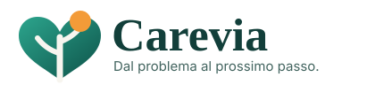

<!doctype html>
<html lang="it">
  <head>
    <meta charset="UTF-8">
    <meta name="viewport" content="width=device-width, initial-scale=1.0">
    <meta name="theme-color" content="#f4f5f2">
    <meta name="description" content="Carevia aiuta i caregiver familiari a orientarsi tra prestazioni, servizi territoriali, documenti e prossimi passi usando fonti ufficiali.">
    <title>Carevia | Navigatore caregiver</title>
    <style>:root {
  font-family: Inter, ui-sans-serif, system-ui, -apple-system, BlinkMacSystemFont, "Segoe UI", sans-serif;
  color: #202320;
  background: #f4f5f2;
  font-synthesis: none;
  text-rendering: optimizeLegibility;
  --ink: #202320;
  --muted: #6f746f;
  --line: #dde0da;
  --surface: #ffffff;
  --canvas: #f4f5f2;
  --accent: #ed684a;
  --accent-soft: #fff0eb;
  --green: #38745a;
  --green-soft: #e8f3ec;
  --yellow: #9b6b14;
  --yellow-soft: #fff5d9;
}

* { box-sizing: border-box; }
body { margin: 0; min-width: 320px; min-height: 100vh; background: var(--canvas); }
button, input, select { font: inherit; }
button { cursor: pointer; }
button:focus-visible, input:focus-visible, select:focus-visible, a:focus-visible { outline: 3px solid rgba(237,104,74,.25); outline-offset: 2px; }

.app-shell { min-height: 100vh; display: grid; grid-template-columns: 244px 1fr; }
.sidebar { position: fixed; inset: 0 auto 0 0; width: 244px; z-index: 30; display: flex; flex-direction: column; padding: 24px 18px 18px; color: #f7f7f4; background: #252a27; }
.brand { display: flex; align-items: center; gap: 10px; padding: 0 8px 33px; font-size: 22px; font-weight: 760; letter-spacing: 0; }
.brand-mark { width: 34px; height: 34px; display: grid; place-items: center; border-radius: 8px; background: var(--accent); }
.nav-label, .eyebrow { margin: 0; color: #8b918b; font-size: 11px; font-weight: 760; text-transform: uppercase; letter-spacing: .08em; }
.sidebar nav { display: grid; gap: 5px; }
.sidebar .nav-label { padding: 0 12px 8px; color: #8e958f; }
.nav-item { width: 100%; display: flex; align-items: center; gap: 12px; padding: 11px 12px; border: 0; border-radius: 7px; color: #bdc3bd; background: transparent; text-align: left; transition: background .18s ease, color .18s ease, transform .18s ease; }
.nav-item:hover { color: #fff; transform: translateX(2px); }
.nav-item.active { color: #fff; background: #373d39; }
.nav-item.active svg { color: #ff8265; }
.sidebar-case { margin-top: auto; display: grid; grid-template-columns: 38px 1fr 18px; align-items: center; gap: 10px; padding: 14px 10px; border-top: 1px solid #3c423e; border-bottom: 1px solid #3c423e; }
.avatar { width: 38px; height: 38px; display: grid; place-items: center; border-radius: 50%; color: #222; background: #f4c8a7; font-weight: 750; }
.sidebar-case strong, .sidebar-case span { display: block; }
.sidebar-case strong { font-size: 13px; }
.sidebar-case span { margin-top: 2px; color: #999f9a; font-size: 11px; }
.sidebar-footer { display: grid; gap: 7px; padding: 16px 7px 0; color: #8e958f; font-size: 10px; line-height: 1.4; }
.sidebar-footer > span { display: flex; align-items: center; gap: 8px; }
.sidebar-footer a { color: #c4cac5; text-decoration: none; font-weight: 700; }
.sidebar-footer a:hover { color: #fff; }
.mobile-close { display: none !important; position: absolute; right: 16px; top: 22px; color: white !important; }

.main-area { grid-column: 2; min-width: 0; }
.topbar { height: 79px; display: flex; align-items: center; justify-content: space-between; padding: 0 34px; border-bottom: 1px solid var(--line); background: rgba(244,245,242,.94); backdrop-filter: blur(12px); position: sticky; top: 0; z-index: 20; }
.topbar h1 { margin: 3px 0 0; font-size: 18px; letter-spacing: 0; }
.topbar-actions { display: flex; align-items: center; gap: 10px; }
.icon-button { width: 38px; height: 38px; display: inline-grid; place-items: center; position: relative; border: 0; border-radius: 7px; color: #555b56; background: transparent; transition: background .15s ease; }
.icon-button:hover { background: #e9ebe7; }
.icon-button i { width: 6px; height: 6px; position: absolute; top: 7px; right: 7px; border: 2px solid var(--canvas); border-radius: 50%; background: var(--accent); }
.menu-button { display: none; }
.secondary-button, .primary-button, .dark-button { min-height: 40px; display: inline-flex; align-items: center; justify-content: center; gap: 8px; border-radius: 7px; padding: 0 15px; font-size: 13px; font-weight: 720; transition: transform .15s ease, box-shadow .15s ease, background .15s ease; }
.secondary-button { border: 1px solid #d5d9d3; color: #3f4540; background: #fff; }
.secondary-button:hover, .primary-button:hover, .dark-button:hover { transform: translateY(-1px); }
.primary-button { border: 1px solid #db573a; color: #fff; background: var(--accent); box-shadow: 0 5px 14px rgba(215,77,48,.18); }
.dark-button { border: 1px solid #202421; color: white; background: #252a27; }
.dark-button.wide { width: 100%; min-height: 48px; }
.user-chip { display: flex; align-items: center; gap: 9px; margin-left: 6px; padding-left: 16px; border-left: 1px solid var(--line); }
.user-chip > span { width: 34px; height: 34px; display: grid; place-items: center; border-radius: 50%; color: white; background: #53605a; font-size: 13px; font-weight: 750; }
.user-chip strong, .user-chip small { display: block; }
.user-chip strong { font-size: 12px; }.user-chip small { color: var(--muted); font-size: 10px; margin-top: 1px; }

.workspace { max-width: 1450px; margin: 0 auto; padding: 34px; }
.page { min-width: 0; }
.enter { animation: pageIn .38s cubic-bezier(.2,.7,.2,1) both; }
@keyframes pageIn { from { opacity: 0; transform: translateY(8px); } to { opacity: 1; transform: translateY(0); } }
.page-heading { min-height: 76px; display: flex; align-items: flex-start; justify-content: space-between; gap: 24px; margin-bottom: 27px; }
.page-heading h2 { margin: 6px 0 5px; font-family: Georgia, 'Times New Roman', serif; font-size: clamp(28px, 3vw, 38px); font-weight: 500; line-height: 1.06; letter-spacing: 0; }
.page-heading p { margin: 0; max-width: 660px; color: var(--muted); font-size: 14px; line-height: 1.6; }

.service-intro { margin-bottom: 46px; padding: 62px 0 52px; border-top: 1px solid var(--line); border-bottom: 1px solid var(--line); background: transparent; }
.service-intro-grid { display: grid; grid-template-columns: minmax(0,1.5fr) minmax(260px,.5fr); gap: 56px; align-items: center; }
.service-intro h2 { max-width: 820px; margin: 10px 0 18px; font-family: Georgia, 'Times New Roman', serif; font-size: clamp(39px,5.6vw,68px); font-weight: 500; line-height: .99; letter-spacing: -.025em; }
.service-intro .lead { max-width: 720px; margin: 0; color: var(--muted); font-size: 15px; line-height: 1.72; }
.service-steps { display: grid; gap: 12px; }
.service-step { padding: 17px 18px; border: 1px solid #e3e6e0; border-radius: 8px; background: #f8f9f6; }
.service-step strong, .service-step span { display: block; }
.service-step strong { margin-bottom: 5px; font-size: 13px; }
.service-step span { color: var(--muted); font-size: 11px; line-height: 1.5; }
.service-intro-actions { display: flex; align-items: center; flex-wrap: wrap; gap: 12px; margin-top: 23px; }
.privacy-inline { display: flex; align-items: flex-start; gap: 9px; margin-top: 21px; padding-top: 18px; border-top: 1px solid var(--line); color: #59605b; font-size: 11px; line-height: 1.55; }
.privacy-inline svg { flex: 0 0 auto; color: var(--green); }
.privacy-inline a { color: #3f6252; font-weight: 750; }
.demo-label { display: inline-flex; align-items: center; gap: 7px; margin-bottom: 20px; padding: 6px 9px; border-radius: 5px; color: #76531c; background: #fff4d8; font-size: 10px; font-weight: 760; text-transform: uppercase; letter-spacing: .04em; }
.home-trust { display:flex; flex-wrap:wrap; gap:18px; margin-top:25px; color:#727972; font-size:10px; font-weight:720; text-transform:uppercase; letter-spacing:.04em; }
.home-trust span { display:inline-flex; align-items:center; gap:6px; }
.home-trust svg { color:var(--green); }
.home-section { margin: 0 0 48px; }
.home-section-head { max-width:720px; margin-bottom:24px; }
.home-section-head h3 { margin:7px 0 8px; font-family:Georgia,serif; font-size:29px; font-weight:500; }
.home-section-head p { margin:0; color:var(--muted); font-size:13px; line-height:1.65; }
.home-grid { display:grid; grid-template-columns:repeat(3,1fr); border-top:1px solid var(--line); border-bottom:1px solid var(--line); }
.home-card { min-height:175px; padding:25px 26px; border-right:1px solid var(--line); }
.home-card:last-child { border-right:0; }
.home-card svg { color:var(--accent); }
.home-card h4 { margin:28px 0 8px; font-size:15px; }
.home-card p { margin:0; color:var(--muted); font-size:11px; line-height:1.6; }
.home-resume { display:flex; align-items:center; justify-content:space-between; gap:24px; margin-top:34px; padding:23px 0; border-top:1px solid var(--line); }
.home-resume strong,.home-resume span { display:block; }
.home-resume span { margin-top:4px; color:var(--muted); font-size:11px; }
.profile-gate { min-height:430px; display:grid; place-items:center; text-align:center; }
.profile-gate > div { max-width:560px; }
.profile-gate svg { color:var(--accent); }
.profile-gate h2 { margin:18px 0 10px; font-family:Georgia,serif; font-size:34px; font-weight:500; }
.profile-gate p { margin:0 auto 22px; color:var(--muted); font-size:13px; line-height:1.65; }
.sources-meta { display:flex; gap:12px; flex-wrap:wrap; margin:-12px 0 28px; color:var(--muted); font-size:10px; }
.source-group { margin-bottom:38px; }
.source-group-title { display:flex; align-items:end; justify-content:space-between; gap:16px; margin-bottom:10px; }
.source-group-title h3 { margin:0; font-size:18px; }
.source-group-title span { color:var(--muted); font-size:10px; }
.official-sources { border-top:1px solid var(--line); }
.official-source { display:grid; grid-template-columns:155px minmax(0,1fr) 160px; gap:20px; align-items:center; padding:19px 0; border-bottom:1px solid var(--line); }
.official-source .source-tag { width:max-content; padding:4px 7px; border-radius:4px; background:#e9eeeb; color:#526159; font-size:9px; font-weight:760; text-transform:uppercase; letter-spacing:.04em; }
.official-source h4 { margin:0 0 5px; font-size:13px; }
.official-source p { margin:0; color:var(--muted); font-size:11px; line-height:1.5; }
.official-source a { justify-self:end; color:#4e5b53; font-size:10px; font-weight:760; text-decoration:none; }
.official-source a:hover { color:var(--accent); }
.source-alert { margin-bottom:30px; padding:18px 20px; border-radius:8px; color:#6d521b; background:var(--yellow-soft); font-size:11px; line-height:1.55; }
.status-strip { display: grid; grid-template-columns: 1.35fr repeat(3, 1fr); margin-bottom: 34px; border-top: 1px solid var(--line); border-bottom: 1px solid var(--line); }
.status-strip > div { min-height: 96px; padding: 20px 22px; border-right: 1px solid var(--line); }
.status-strip > div:first-child { padding-left: 0; }.status-strip > div:last-child { border: 0; }
.status-strip span, .status-strip small { display: block; color: var(--muted); font-size: 11px; }
.status-strip strong { display: block; margin: 6px 0 4px; font-size: 23px; line-height: 1; }
.status-strip .priority { color: var(--accent); font-size: 18px; }
.progress { height: 5px; margin-top: 12px; overflow: hidden; border-radius: 3px; background: #dfe2dc; }
.progress i { display: block; height: 100%; border-radius: inherit; background: var(--green); transition: width .5s ease; }

.overview-grid { display: grid; grid-template-columns: minmax(0, 1.65fr) minmax(290px, .75fr); gap: 38px; align-items: start; }
.main-column, .context-column { min-width: 0; }
.section-title { display: flex; align-items: center; justify-content: space-between; gap: 20px; margin-bottom: 15px; }
.section-title h3 { margin: 4px 0 0; font-size: 18px; letter-spacing: 0; }
.text-button { display: inline-flex; align-items: center; gap: 6px; border: 0; color: #4e5550; background: transparent; font-size: 12px; font-weight: 700; }
.text-button:hover { color: var(--accent); }
.featured-support { min-height: 244px; display: grid; grid-template-columns: 58px 1fr 42px; gap: 19px; align-items: start; padding: 28px; color: #f5f6f4; background: #2d3933; border-radius: 8px; box-shadow: 0 14px 35px rgba(30,40,35,.11); }
.featured-icon { width: 54px; height: 54px; display: grid; place-items: center; border-radius: 8px; color: #302821; background: #f4bea1; }
.featured-content h4 { margin: 15px 0 3px; font-family: Georgia, 'Times New Roman', serif; font-size: 26px; font-weight: 500; }
.featured-content > strong { color: #f3c3a9; font-size: 14px; }
.featured-content p { max-width: 680px; margin: 14px 0 18px; color: #c8d0ca; font-size: 13px; line-height: 1.55; }
.next-step { display: flex; align-items: flex-start; gap: 9px; padding-top: 16px; border-top: 1px solid #48554e; color: #e7ebe8; font-size: 12px; line-height: 1.45; }
.next-step svg { color: #f3c3a9; flex: 0 0 auto; }
.round-arrow { width: 38px; height: 38px; display: grid; place-items: center; border: 1px solid #526057; border-radius: 50%; color: white; background: transparent; transition: background .15s ease, transform .15s ease; }
.round-arrow:hover { background: #46524b; transform: translateX(2px); }
.tasks-heading { margin-top: 34px; }

.status-badge { width: max-content; display: inline-flex; align-items: center; gap: 7px; padding: 5px 8px; border-radius: 4px; font-size: 10px; font-weight: 760; text-transform: uppercase; letter-spacing: .04em; }
.status-badge i { width: 6px; height: 6px; border-radius: 50%; background: currentColor; }
.status-badge.positive { color: #2c6a4f; background: var(--green-soft); }
.status-badge.warning { color: #8c6011; background: var(--yellow-soft); }
.status-badge.neutral { color: #53615a; background: #e9eeeb; }
.featured-support .status-badge { color: #f7d5c3; background: rgba(237,104,74,.15); }

.task-list { border-top: 1px solid var(--line); }
.task-row { min-height: 73px; display: grid; grid-template-columns: 24px minmax(200px, 1fr) 110px 118px 18px; gap: 13px; align-items: center; padding: 12px 8px 12px 0; border-bottom: 1px solid var(--line); transition: opacity .2s ease, background .15s ease; }
.task-row:hover { background: rgba(255,255,255,.48); }
.task-row.done { opacity: .55; }.task-row.done .task-copy strong { text-decoration: line-through; }
.task-check { width: 21px; height: 21px; display: grid; place-items: center; border: 1.5px solid #aeb4ae; border-radius: 5px; color: white; background: transparent; }
.task-row.done .task-check { border-color: var(--green); background: var(--green); }
.task-copy strong, .task-copy span { display: block; }
.task-copy strong { margin-bottom: 4px; font-size: 13px; }.task-copy span, .task-area, .task-due { color: var(--muted); font-size: 11px; }
.task-area { width: max-content; padding: 4px 7px; border-radius: 4px; background: #e9ebe7; }

.case-summary { padding-bottom: 25px; border-bottom: 1px solid var(--line); }
.case-summary dl { margin: 0; }
.case-summary dl > div { display: flex; justify-content: space-between; gap: 18px; padding: 12px 0; border-bottom: 1px solid #e4e6e1; font-size: 12px; }
.case-summary dl > div:last-child { border: 0; }
.case-summary dt { color: var(--muted); }.case-summary dd { margin: 0; text-align: right; font-weight: 670; }
.human-help { margin-top: 25px; padding: 27px; color: white; background: var(--accent); border-radius: 8px; }
.help-visual { height: 54px; display: flex; align-items: center; justify-content: space-between; margin-bottom: 22px; }
.help-visual > span { width: 34px; height: 34px; display: grid; place-items: center; border-radius: 50%; color: var(--accent); background: white; }
.human-help .eyebrow { color: #ffe1d8; }.human-help h3 { margin: 8px 0 10px; font-family: Georgia, serif; font-size: 22px; font-weight: 500; line-height: 1.18; }.human-help p { margin: 0; color: #fff1ec; font-size: 12px; line-height: 1.55; }
.price-row { display: flex; align-items: baseline; gap: 7px; margin: 22px 0 12px; }.price-row strong { font-size: 25px; }.price-row span { color: #ffe1d8; font-size: 10px; }
.human-help .dark-button { width: 100%; }
.disclaimer { display: flex; align-items: flex-start; gap: 7px; margin: 16px 3px; color: #858a85; font-size: 10px; line-height: 1.5; }.disclaimer svg { flex: 0 0 auto; margin-top: 1px; }

.decision-summary { display:grid; grid-template-columns:minmax(0,1.35fr) minmax(250px,.65fr); gap:22px; margin-bottom:34px; }
.next-action-card { padding:24px 26px; border:1px solid #d9ddd7; border-radius:9px; background:#fff; box-shadow:0 12px 30px rgba(30,35,31,.05); }
.next-action-card .eyebrow { color:var(--accent); }
.next-action-card h3 { margin:8px 0 8px; font-family:Georgia,serif; font-size:26px; font-weight:500; }
.next-action-card p { margin:0; color:var(--muted); font-size:12px; line-height:1.6; }
.next-action-meta { display:flex; flex-wrap:wrap; gap:8px; margin-top:17px; }
.evidence-chip { display:inline-flex; align-items:center; gap:5px; padding:5px 8px; border-radius:5px; background:#eef1ed; color:#526059; font-size:9px; font-weight:760; }
.evidence-chip.attention { background:#fff2d7; color:#76531c; }
.evidence-chip.current { background:#e8f2ec; color:#3d6c54; }
.decision-side { display:grid; gap:10px; }
.decision-side > div { padding:17px 18px; border:1px solid var(--line); border-radius:8px; background:#f8f9f6; }
.decision-side strong,.decision-side span { display:block; }
.decision-side strong { margin-bottom:4px; font-size:11px; }
.decision-side span { color:var(--muted); font-size:10px; line-height:1.45; }
.support-explain { display:grid; grid-template-columns:1fr 1fr; gap:10px; margin-top:15px; }
.support-explain > div { padding:11px 12px; border-radius:6px; background:#f4f6f2; }
.support-explain b,.support-explain span { display:block; }
.support-explain b { margin-bottom:4px; color:#465048; font-size:9px; text-transform:uppercase; letter-spacing:.04em; }
.support-explain span { color:var(--muted); font-size:10px; line-height:1.45; }
.support-evidence { display:flex; flex-wrap:wrap; justify-content:flex-end; gap:6px; margin-top:11px; }
.excluded-section { margin-top:38px; padding-top:26px; border-top:1px solid var(--line); }
.excluded-section h3 { margin:5px 0 16px; font-size:18px; }
.excluded-list { display:grid; gap:8px; }
.excluded-item { display:grid; grid-template-columns:180px 1fr; gap:14px; padding:12px 0; border-bottom:1px solid #e2e5df; }
.excluded-item strong { font-size:11px; }.excluded-item span { color:var(--muted); font-size:10px; line-height:1.5; }
.watch-card { margin-top:30px; padding:20px 22px; border:1px solid #e8dcc5; border-radius:8px; background:#fffaf0; }
.watch-card h3 { margin:5px 0 8px; font-size:17px; }.watch-card p { margin:0; color:#6f6044; font-size:11px; line-height:1.55; }
.application-assistant { margin-bottom:18px; padding:24px; border:1px solid #cfd8d1; border-radius:10px; background:#f8faf7; }
.application-assistant-head { display:flex; align-items:flex-start; justify-content:space-between; gap:18px; margin-bottom:18px; }
.application-assistant-head h3 { margin:6px 0 6px; font-family:Georgia,serif; font-size:23px; font-weight:500; }
.application-assistant-head p { margin:0; color:var(--muted); font-size:11px; line-height:1.55; max-width:720px; }
.application-mode { flex:0 0 auto; padding:6px 9px; border-radius:5px; background:#e6eee8; color:#3d6651; font-size:9px; font-weight:800; text-transform:uppercase; letter-spacing:.04em; }
.application-grid { display:grid; grid-template-columns:1fr 1fr; gap:12px; }
.application-field { display:block; }
.application-field > span { display:block; margin-bottom:6px; color:#4a554e; font-size:9px; font-weight:760; text-transform:uppercase; letter-spacing:.04em; }
.application-field input,.application-field select,.application-field textarea { width:100%; min-height:42px; padding:10px 11px; border:1px solid #cfd4cf; border-radius:6px; background:#fff; color:#28312c; font:inherit; font-size:11px; }
.application-field textarea { min-height:80px; resize:vertical; }
.application-field small { display:block; margin-top:5px; color:var(--muted); font-size:9px; line-height:1.4; }
.application-send { margin-top:18px; padding-top:18px; border-top:1px solid #dde2dc; }
.application-send h4 { margin:0 0 10px; font-size:13px; }
.application-channels { display:grid; gap:8px; }
.application-channel { display:grid; grid-template-columns:28px 1fr auto; gap:10px; align-items:start; padding:11px 12px; border-radius:7px; background:#fff; border:1px solid #dde2dc; }
.application-channel > span:first-child { width:27px; height:27px; display:grid; place-items:center; border-radius:50%; background:#edf1ed; font-size:10px; font-weight:800; }
.application-channel strong,.application-channel small { display:block; }
.application-channel strong { font-size:11px; }
.application-channel small { margin-top:3px; color:var(--muted); font-size:9px; line-height:1.45; }
.application-channel a { font-size:9px; font-weight:760; color:#4f6057; text-decoration:none; }
.application-script { margin-top:12px; padding:12px 14px; border-left:3px solid #718478; background:#fff; color:#435048; font-size:10px; line-height:1.55; }
.application-actions { display:flex; flex-wrap:wrap; gap:8px; margin-top:14px; }
.application-progress { margin-top:8px; color:var(--muted); font-size:9px; }
@media (max-width: 760px) { .application-grid { grid-template-columns:1fr; }.application-assistant-head { flex-direction:column; }.application-channel { grid-template-columns:28px 1fr; }.application-channel a { grid-column:2; } }
.case-open-button { margin-top:12px; width:100%; }
.case-dashboard { display:grid; grid-template-columns:minmax(0,1.4fr) minmax(250px,.6fr); gap:18px; margin-bottom:30px; }
.case-today { padding:26px; border-radius:10px; color:#f6f7f4; background:#2d3933; }
.case-today .eyebrow { color:#b8c8bf; }
.case-today h3 { margin:9px 0 8px; font-family:Georgia,serif; font-size:27px; font-weight:500; }
.case-today p { margin:0; color:#d3dbd6; font-size:12px; line-height:1.6; }
.case-stats { display:grid; grid-template-columns:1fr 1fr; gap:10px; }
.case-stat { padding:17px; border:1px solid var(--line); border-radius:8px; background:#fff; }
.case-stat strong,.case-stat span { display:block; }
.case-stat strong { font-size:23px; }
.case-stat span { margin-top:4px; color:var(--muted); font-size:10px; }
.case-list { display:grid; gap:10px; }
.case-card { display:grid; grid-template-columns:52px minmax(0,1fr) 190px; gap:18px; align-items:center; padding:19px 20px; border:1px solid var(--line); border-radius:9px; background:#fff; }
.case-card-icon { width:46px; height:46px; display:grid; place-items:center; border-radius:8px; color:#405047; background:#e8eee9; }
.case-card h3 { margin:6px 0 5px; font-size:15px; }
.case-card p { margin:0; color:var(--muted); font-size:10px; line-height:1.45; }
.case-card-side { text-align:right; }
.case-card-side strong,.case-card-side span { display:block; }
.case-card-side strong { font-size:11px; }
.case-card-side span { margin:5px 0 10px; color:var(--muted); font-size:9px; }
.case-progress { height:5px; margin-top:10px; overflow:hidden; border-radius:4px; background:#e2e5df; }
.case-progress i { display:block; height:100%; background:var(--green); border-radius:inherit; }
.case-detail-head { display:flex; align-items:flex-start; justify-content:space-between; gap:20px; margin-bottom:22px; }
.case-detail-head h2 { margin:7px 0 6px; font-family:Georgia,serif; font-size:36px; font-weight:500; }
.case-detail-head p { margin:0; color:var(--muted); font-size:12px; line-height:1.55; }
.case-detail-grid { display:grid; grid-template-columns:minmax(0,1.35fr) minmax(280px,.65fr); gap:26px; align-items:start; }
.case-panel { padding:22px; border:1px solid var(--line); border-radius:9px; background:#fff; }
.case-panel + .case-panel { margin-top:14px; }
.case-panel h3 { margin:0 0 14px; font-size:16px; }
.case-panel-intro { margin:-5px 0 15px; color:var(--muted); font-size:10px; line-height:1.5; }
.case-next { margin-bottom:18px; padding:22px 24px; border-radius:9px; color:#fff; background:#2d3933; }
.case-next .eyebrow { color:#c6d3cc; }
.case-next h3 { margin:8px 0 7px; font-family:Georgia,serif; font-size:25px; font-weight:500; }
.case-next p { margin:0 0 16px; color:#d3dbd6; font-size:11px; line-height:1.55; }
.case-checklist { display:grid; gap:0; }
.case-check { display:grid; grid-template-columns:26px 1fr auto; gap:10px; align-items:start; padding:12px 0; border-bottom:1px solid #e6e8e3; }
.case-check:last-child { border-bottom:0; }
.case-check button { width:23px; height:23px; display:grid; place-items:center; border:1px solid #b8beb9; border-radius:5px; background:#fff; color:#fff; }
.case-check.done button { border-color:var(--green); background:var(--green); }
.case-check strong,.case-check span { display:block; }
.case-check strong { font-size:11px; }
.case-check span { margin-top:3px; color:var(--muted); font-size:9px; line-height:1.45; }
.case-check > small { padding-top:3px; color:var(--muted); font-size:9px; }
.case-step { display:grid; grid-template-columns:34px minmax(0,1fr) 120px; gap:12px; padding:15px 0; border-bottom:1px solid #e5e7e2; }
.case-step:last-child { border-bottom:0; }
.case-step-number { width:30px; height:30px; display:grid; place-items:center; border-radius:50%; background:#ecefea; color:#59625d; font-size:10px; font-weight:800; }
.case-step.done .case-step-number { color:#fff; background:var(--green); }
.case-step strong,.case-step span { display:block; }
.case-step strong { font-size:11px; }
.case-step span { margin-top:4px; color:var(--muted); font-size:9px; line-height:1.5; }
.case-step-actions { text-align:right; }
.case-step-actions a { display:block; margin-top:7px; color:#506159; font-size:9px; font-weight:700; text-decoration:none; }
.case-authority strong,.case-authority span { display:block; }
.case-authority strong { font-size:13px; }
.case-authority span { margin-top:5px; color:var(--muted); font-size:10px; line-height:1.5; }
.case-outcome { display:grid; grid-template-columns:1fr 1fr; gap:8px; margin-top:12px; }
.case-outcome button { min-height:39px; }
.case-status-pill { display:inline-flex; align-items:center; gap:6px; padding:5px 8px; border-radius:5px; background:#edf0ec; color:#52605a; font-size:9px; font-weight:780; }
.case-status-pill.success { background:#e7f3eb; color:#32684d; }
.case-status-pill.warning { background:#fff1d8; color:#80591a; }
.case-status-pill.danger { background:#fde8e4; color:#994332; }
.required-docs-summary { margin-bottom:24px; }
.required-doc-row { display:grid; grid-template-columns:minmax(0,1fr) 150px 100px; gap:12px; align-items:center; padding:12px 0; border-bottom:1px solid var(--line); }
.required-doc-row strong,.required-doc-row span { display:block; }
.required-doc-row strong { font-size:11px; }
.required-doc-row span { margin-top:3px; color:var(--muted); font-size:9px; }
@media (max-width: 900px) {
  .case-dashboard,.case-detail-grid { grid-template-columns:1fr; }
  .case-card { grid-template-columns:44px 1fr; }
  .case-card-side { grid-column:2; text-align:left; }
  .case-step { grid-template-columns:32px 1fr; }
  .case-step-actions { grid-column:2; text-align:left; }
  .required-doc-row { grid-template-columns:1fr; gap:5px; }
}
.support-list { border-top: 1px solid var(--line); }
.support-row { display: grid; grid-template-columns: 46px minmax(0,1fr) 190px; gap: 22px; align-items: start; padding: 27px 8px 27px 0; border-bottom: 1px solid var(--line); animation: rowIn .4s ease both; animation-delay: var(--delay); }
@keyframes rowIn { from { opacity: 0; transform: translateX(-7px); } to { opacity: 1; transform: translateX(0); } }
.support-symbol { width: 42px; height: 42px; display: grid; place-items: center; border-radius: 7px; color: #44524b; background: #e4e9e5; }
.support-main h3 { margin: 10px 0 8px; font-size: 18px; }.support-main > p { margin: 0; max-width: 720px; color: var(--muted); font-size: 12px; line-height: 1.55; }
.support-next { display: grid; grid-template-columns: 75px 1fr; gap: 8px; margin-top: 15px; font-size: 11px; }.support-next strong { color: #3e4741; }.support-next span { color: var(--muted); }
.support-value { text-align: right; }.support-value > span, .support-value > strong { display: block; }.support-value > span { color: var(--muted); font-size: 10px; }.support-value > strong { margin: 7px 0 20px; font-size: 15px; }.support-value a { display: inline-flex; align-items: center; gap: 5px; color: #59645e; font-size: 10px; font-weight: 700; text-decoration: none; }.support-value a:hover { color: var(--accent); }
.source-note { display: flex; align-items: flex-start; gap: 14px; max-width: 800px; margin-top: 26px; padding: 18px 0; color: #59605b; }.source-note svg { flex: 0 0 auto; color: var(--accent); }.source-note strong { font-size: 12px; }.source-note p { margin: 4px 0 0; font-size: 11px; line-height: 1.55; }

.national-grid { display:grid; grid-template-columns:repeat(3,1fr); gap:10px; margin:18px 0 28px; }
.national-source-card { padding:16px 17px; border:1px solid var(--line); border-radius:8px; background:#fff; }
.national-source-card strong,.national-source-card span,.national-source-card a { display:block; }
.national-source-card strong { margin-bottom:5px; font-size:11px; }
.national-source-card span { min-height:44px; color:var(--muted); font-size:10px; line-height:1.45; }
.national-source-card a { margin-top:10px; color:#486057; font-size:9px; font-weight:780; text-decoration:none; }
.authority-resolution { margin:14px 0 0; padding:12px 14px; border-radius:6px; background:#eef3ef; }
.authority-resolution.warning { background:#fff4dd; }
.authority-resolution strong,.authority-resolution span { display:block; }
.authority-resolution strong { margin-bottom:4px; font-size:10px; }
.authority-resolution span { color:var(--muted); font-size:9px; line-height:1.45; }
.coverage-banner { display:flex; align-items:flex-start; justify-content:space-between; gap:20px; margin-bottom:24px; padding:18px 20px; border:1px solid #d8ddd7; border-radius:8px; background:#fff; }
.coverage-banner strong,.coverage-banner span { display:block; }
.coverage-banner strong { margin-bottom:4px; font-size:12px; }
.coverage-banner span { color:var(--muted); font-size:10px; line-height:1.5; }
.coverage-grade { flex:0 0 auto; padding:6px 9px; border-radius:5px; background:#e8f2ec; color:#3d6c54; font-size:9px; font-weight:800; text-transform:uppercase; letter-spacing:.04em; }
.coverage-grade.partial { background:#fff2d7; color:#76531c; }
.verified-meta { display:flex; flex-wrap:wrap; gap:7px; margin-top:10px; }
.verified-node { display:inline-flex; align-items:center; gap:5px; padding:4px 7px; border-radius:4px; background:#eef1ed; color:#56625b; font-size:9px; font-weight:720; }
.access-detail { margin-top:9px; color:#49534c !important; font-size:10px !important; }
.access-detail b { color:#2f3832; }
.territory-summary { display: grid; grid-template-columns: repeat(3,1fr); margin-bottom: 28px; border-top: 1px solid var(--line); border-bottom: 1px solid var(--line); }
.territory-summary > div { min-height: 82px; display: flex; align-items: center; gap: 13px; padding: 17px 22px; border-right: 1px solid var(--line); }
.territory-summary > div:first-child { padding-left: 0; }.territory-summary > div:last-child { border-right: 0; }
.territory-summary svg { color: var(--accent); }.territory-summary b, .territory-summary small { display: block; }.territory-summary b { font-size: 13px; }.territory-summary small { margin-top: 3px; color: var(--muted); font-size: 10px; }
.service-directory { border-top: 1px solid var(--line); }
.service-row { min-height: 154px; display: grid; grid-template-columns: 44px minmax(0,1fr) auto; gap: 22px; align-items: center; padding: 24px 4px 24px 0; border-bottom: 1px solid var(--line); }
.service-number { align-self: start; padding-top: 4px; color: #a0a59f; font-family: Georgia, serif; font-size: 20px; }.service-row h3 { margin: 5px 0 7px; font-size: 17px; }.service-row p { margin: 0; color: var(--muted); font-size: 11px; line-height: 1.5; }
.service-action { display: grid; grid-template-columns: 90px 1fr; gap: 8px; margin-top: 13px; font-size: 11px; }.service-action span { color: var(--muted); }

.task-toolbar { display: flex; align-items: center; justify-content: space-between; gap: 20px; margin-bottom: 22px; }
.segmented { display: inline-flex; padding: 3px; border: 1px solid var(--line); border-radius: 7px; background: #e9ebe7; }.segmented button { min-height: 32px; padding: 0 13px; border: 0; border-radius: 5px; color: var(--muted); background: transparent; font-size: 11px; font-weight: 700; }.segmented button.active { color: var(--ink); background: white; box-shadow: 0 1px 4px rgba(30,35,31,.08); }
.add-task { width: min(370px, 50%); display: flex; align-items: center; border-bottom: 1px solid #b9beb8; }.add-task input { width: 100%; padding: 9px 4px; border: 0; background: transparent; outline: none; font-size: 12px; }
.task-list.full .task-row { min-height: 81px; }
.empty-state { min-height: 280px; display: grid; place-items: center; align-content: center; color: var(--muted); text-align: center; }.empty-state strong { margin-top: 12px; color: var(--ink); }.empty-state p { max-width: 360px; margin: 5px 0 0; font-size: 12px; }

.document-layout { display: grid; grid-template-columns: minmax(0, 1fr) 280px; gap: 38px; }
.document-table { border-top: 1px solid var(--line); }
.table-head, .document-row { display: grid; grid-template-columns: minmax(250px,1fr) 130px 120px 100px; align-items: center; gap: 16px; padding: 0 12px; border-bottom: 1px solid var(--line); }
.table-head { min-height: 48px; color: var(--muted); font-size: 10px; font-weight: 760; text-transform: uppercase; }.document-row { min-height: 76px; font-size: 11px; }.document-row > div:first-child { display: flex; align-items: center; gap: 11px; min-width: 0; }.document-row strong { overflow: hidden; text-overflow: ellipsis; white-space: nowrap; font-size: 12px; }.file-icon { width: 34px; height: 34px; display: grid; place-items: center; flex: 0 0 auto; border-radius: 6px; color: var(--accent); background: var(--accent-soft); }.doc-status { width: max-content; display: flex; align-items: center; gap: 4px; color: var(--green); font-weight: 700; }
.missing-docs { padding: 24px; border-left: 1px solid var(--line); }.missing-docs h3 { margin: 5px 0 18px; font-size: 18px; }.missing-docs ul { display: grid; gap: 14px; margin: 0 0 24px; padding: 0; list-style: none; }.missing-docs li { display: flex; align-items: center; gap: 9px; color: #555c56; font-size: 11px; }.missing-docs li > span { width: 15px; height: 15px; border: 1px solid #aeb4ae; border-radius: 4px; }.missing-docs li.done { color: var(--green); }.missing-docs .secondary-button { width: 100%; }

.modal-backdrop, .drawer-backdrop { position: fixed; inset: 0; z-index: 80; display: grid; place-items: center; padding: 24px; background: rgba(24,28,25,.55); backdrop-filter: blur(4px); animation: fadeIn .2s ease both; }
@keyframes fadeIn { from { opacity: 0; } to { opacity: 1; } }
.wizard { width: min(840px, 100%); max-height: calc(100vh - 48px); display: flex; flex-direction: column; overflow: hidden; border-radius: 10px; background: #fbfbf9; box-shadow: 0 30px 80px rgba(20,24,21,.28); animation: modalIn .28s cubic-bezier(.2,.8,.2,1) both; }
@keyframes modalIn { from { opacity: 0; transform: translateY(14px) scale(.985); } to { opacity: 1; transform: translateY(0) scale(1); } }
.wizard > header { display: flex; align-items: flex-start; justify-content: space-between; padding: 25px 29px 18px; border-bottom: 1px solid var(--line); }.wizard h2, .help-drawer h2 { margin: 5px 0 0; font-family: Georgia, serif; font-size: 28px; font-weight: 500; }
.wizard-progress { display: grid; grid-template-columns: repeat(5,1fr); padding: 18px 29px 0; }.wizard-progress > div { display: flex; align-items: center; gap: 8px; position: relative; color: #9a9f9a; font-size: 10px; }.wizard-progress > div::after { content: ''; height: 1px; position: absolute; left: 27px; right: 7px; top: 11px; background: #d7dad5; }.wizard-progress > div:last-child::after { display: none; }.wizard-progress span { width: 22px; height: 22px; display: grid; place-items: center; z-index: 1; border: 1px solid #c9cdc7; border-radius: 50%; background: #fbfbf9; font-weight: 750; }.wizard-progress b { z-index: 1; padding-right: 8px; background: #fbfbf9; }.wizard-progress .active { color: var(--ink); }.wizard-progress .active span { border-color: var(--accent); color: white; background: var(--accent); }
.wizard-body { min-height: 390px; overflow-y: auto; padding: 34px 29px; }.form-step h3 { margin: 0 0 6px; font-size: 20px; }.form-step > p { margin: 0 0 26px; color: var(--muted); font-size: 12px; }.field-grid { display: grid; grid-template-columns: 1fr 1fr; gap: 18px; }.field-grid.single { grid-template-columns: 1fr; }.field { display: grid; gap: 7px; }.field > span { color: #555c56; font-size: 11px; font-weight: 700; }.field input, .field select { width: 100%; height: 44px; padding: 0 12px; border: 1px solid #d1d5cf; border-radius: 6px; color: var(--ink); background: #fff; outline: none; }.field input:focus, .field select:focus { border-color: var(--accent); box-shadow: 0 0 0 3px rgba(237,104,74,.1); }
.location-tools { grid-column:1 / -1; display:flex; flex-wrap:wrap; align-items:center; gap:10px; margin:-2px 0 5px; }
.location-tools button { min-height:36px; }
.location-status { color:var(--muted); font-size:10px; line-height:1.45; }
.field-help { display:block; margin-top:5px; color:var(--muted); font-size:10px; line-height:1.45; }
.wizard-save { display:flex; align-items:center; gap:8px; color:var(--muted); font-size:10px; }
.result-actions { display:flex; align-items:center; justify-content:flex-end; gap:10px; margin:-10px 0 24px; }
@media print {
  .sidebar,.topbar,.result-actions,.text-button,.primary-button,.secondary-button,.task-check { display:none !important; }
  .app-shell { display:block; }.main-area { width:100%; }.workspace { max-width:none; padding:0; }
  body { background:#fff; }.page { animation:none !important; }
}
.info-box, .privacy-note { display: flex; align-items: flex-start; gap: 10px; margin-top: 24px; padding: 15px; border-radius: 7px; color: #6f571f; background: var(--yellow-soft); font-size: 11px; line-height: 1.5; }.privacy-note { color: #3f5c4d; background: var(--green-soft); }.privacy-note strong, .privacy-note span { display: block; }.privacy-note span { margin-top: 3px; }
.choice-grid { display: grid; grid-template-columns: 1fr 1fr; gap: 12px; }.choice { min-height: 54px; display: flex; align-items: center; gap: 11px; padding: 10px 13px; border: 1px solid #d4d8d2; border-radius: 7px; color: #4d544f; background: white; text-align: left; font-size: 12px; font-weight: 650; }.choice > span { width: 20px; height: 20px; display: grid; place-items: center; border: 1px solid #b9beb8; border-radius: 5px; }.choice.active { border-color: #dea08f; color: #863b29; background: var(--accent-soft); }.choice.active > span { border-color: var(--accent); color: white; background: var(--accent); }
.wizard > footer { display: flex; align-items: center; justify-content: space-between; gap: 16px; padding: 17px 29px; border-top: 1px solid var(--line); background: #f4f5f1; }.wizard > footer > span { color: var(--muted); font-size: 10px; }

.drawer-backdrop { place-items: stretch end; padding: 0; }.help-drawer { width: min(470px, 100%); height: 100%; overflow-y: auto; padding: 30px; background: #fbfbf9; box-shadow: -20px 0 60px rgba(20,24,21,.2); animation: drawerIn .28s ease both; }@keyframes drawerIn { from { transform: translateX(25px); opacity: 0; } to { transform: translateX(0); opacity: 1; } }.help-drawer header { display: flex; justify-content: space-between; align-items: flex-start; }.drawer-intro { margin: 28px 0 22px; color: var(--muted); font-size: 13px; line-height: 1.6; }.offer-options { display: grid; gap: 10px; }.offer { display: grid; grid-template-columns: 20px 1fr auto; gap: 11px; align-items: center; min-height: 74px; padding: 13px; border: 1px solid var(--line); border-radius: 7px; background: white; text-align: left; }.offer .radio { width: 17px; height: 17px; border: 1px solid #aeb4ae; border-radius: 50%; }.offer strong, .offer small { display: block; }.offer strong { font-size: 12px; }.offer small { margin-top: 4px; color: var(--muted); font-size: 10px; }.offer > b { font-size: 16px; }.offer.active { border-color: var(--accent); background: var(--accent-soft); }.offer.active .radio { border: 5px solid var(--accent); background: white; }
.included { display: grid; gap: 10px; margin: 24px 0; padding: 0; list-style: none; color: #4d554f; font-size: 11px; }.included li { display: flex; align-items: center; gap: 8px; }.included svg { color: var(--green); }.contact-fields { display: grid; gap: 14px; margin-bottom: 18px; }.drawer-legal { margin: 13px 0 0; color: #8a8f8a; font-size: 9px; line-height: 1.5; }
.toast { position: fixed; right: 26px; bottom: 26px; z-index: 120; display: flex; align-items: center; gap: 9px; max-width: 420px; padding: 13px 16px; border-radius: 7px; color: white; background: #2d3933; box-shadow: 0 12px 35px rgba(25,31,27,.25); font-size: 12px; animation: toastIn .3s ease both; }@keyframes toastIn { from { opacity: 0; transform: translateY(8px); } to { opacity: 1; transform: translateY(0); } }

@media (max-width: 1050px) {
  .overview-grid { grid-template-columns: 1fr; }.context-column { display: grid; grid-template-columns: 1fr 1fr; gap: 24px; }.human-help { margin-top: 0; }.disclaimer { grid-column: 1 / -1; }
  .status-strip { grid-template-columns: 1.3fr 1fr 1fr; }.status-strip > div:last-child { display: none; }.status-strip > div:nth-child(3) { border-right: 0; }
  .document-layout { grid-template-columns: 1fr; }.missing-docs { border-left: 0; border-top: 1px solid var(--line); }
}

@media (max-width: 780px) {
  .service-intro { padding: 38px 0 34px; }.service-intro-grid { grid-template-columns: 1fr; gap: 30px; }.service-intro-actions { align-items: stretch; }.service-intro-actions .primary-button { width: 100%; }.home-grid { grid-template-columns:1fr; }.home-card { min-height:0; border-right:0; border-bottom:1px solid var(--line); }.home-card:last-child { border-bottom:0; }.official-source { grid-template-columns:1fr; gap:9px; }.official-source a { justify-self:start; }.home-resume { align-items:stretch; flex-direction:column; }.decision-summary { grid-template-columns:1fr; }.support-explain { grid-template-columns:1fr; }.excluded-item { grid-template-columns:1fr; gap:4px; }.national-grid { grid-template-columns:1fr; }
  .app-shell { display: block; }.main-area { width: 100%; }.sidebar { transform: translateX(-100%); transition: transform .25s ease; box-shadow: 15px 0 40px rgba(20,25,21,.2); }.sidebar.mobile-open { transform: translateX(0); }.mobile-close { display: inline-grid !important; }.menu-button { display: inline-grid; }
  .topbar { height: 70px; padding: 0 17px; }.topbar > div:nth-child(2) { margin-right: auto; margin-left: 8px; }.topbar .eyebrow, .topbar .secondary-button, .user-chip div, .topbar-actions > .icon-button { display: none; }.user-chip { margin: 0; padding: 0; border: 0; }
  .workspace { padding: 24px 17px 38px; }.page-heading { align-items: stretch; flex-direction: column; margin-bottom: 22px; }.page-heading .primary-button { width: 100%; }
  .status-strip { grid-template-columns: 1fr 1fr; margin-bottom: 28px; }.status-strip > div { min-height: 85px; padding: 16px; }.status-strip > div:first-child { padding-left: 0; }.status-strip > div:nth-child(2) { border-right: 0; }.status-strip > div:nth-child(3) { display: none; }
  .featured-support { grid-template-columns: 45px 1fr; padding: 21px; }.featured-icon { width: 43px; height: 43px; }.round-arrow { display: none; }.featured-content h4 { font-size: 22px; }
  .context-column { display: block; }.human-help { margin-top: 24px; }
  .task-row { grid-template-columns: 24px minmax(0,1fr) 18px; }.task-area, .task-due { display: none; }
  .support-row { grid-template-columns: 42px minmax(0,1fr); gap: 13px; }.support-value { grid-column: 2; display: flex; align-items: center; justify-content: space-between; text-align: left; }.support-value > strong { margin: 0; }.support-value > span { display: none; }
  .territory-summary { grid-template-columns: 1fr; }.territory-summary > div { min-height: 68px; padding: 12px 0; border-right: 0; border-bottom: 1px solid var(--line); }.territory-summary > div:last-child { border-bottom: 0; }.service-row { grid-template-columns: 32px 1fr; gap: 10px; }.service-row > .secondary-button { grid-column: 2; width: 100%; }.service-action { grid-template-columns: 1fr; }
  .task-toolbar { align-items: stretch; flex-direction: column; }.add-task { width: 100%; }
  .document-table { overflow-x: auto; }.table-head, .document-row { width: 710px; }
  .wizard { max-height: 100vh; height: 100%; border-radius: 0; }.modal-backdrop { padding: 0; }.wizard > header { padding: 20px 18px 15px; }.wizard-progress { padding: 15px 18px 0; }.wizard-progress b { display: none; }.wizard-body { padding: 27px 18px; }.field-grid, .choice-grid { grid-template-columns: 1fr; }.wizard > footer { padding: 14px 18px; }.wizard > footer > span { display: none; }
  .help-drawer { padding: 24px 20px; }.toast { right: 16px; bottom: 16px; left: 16px; }
}

@media (prefers-reduced-motion: reduce) {
  *, *::before, *::after { scroll-behavior: auto !important; animation-duration: .01ms !important; animation-iteration-count: 1 !important; transition-duration: .01ms !important; }
}

.application-assistant-v2{display:flex;flex-direction:column;gap:22px}
.official-practice-card{display:flex;justify-content:space-between;gap:24px;align-items:center;padding:22px;border:1px solid rgba(44,120,96,.22);background:linear-gradient(135deg,#f4fbf7 0%,#ffffff 100%);border-radius:16px}
.official-practice-card h3{margin:7px 0 8px;font-size:21px}.official-practice-card p{margin:0;max-width:760px;color:var(--muted)}
.official-practice-actions{display:flex;gap:10px;flex-wrap:wrap;justify-content:flex-end;min-width:220px}
.guided-fields{display:flex;flex-direction:column;gap:12px}.guided-fields>h4{margin:0 0 2px}
.guided-field-row{display:grid;grid-template-columns:minmax(0,1.15fr) minmax(260px,.85fr);gap:14px;padding:14px;border:1px solid var(--line);border-radius:14px;background:#fff}
.guided-field-control .application-field{margin:0}.guided-field-tip{padding:12px 14px;background:#f7f8f7;border-radius:10px}
.guided-field-tip span{display:block;font-size:10px;font-weight:800;letter-spacing:.09em;color:#477363;margin-bottom:6px}.guided-field-tip p{margin:0;font-size:13px;line-height:1.5;color:var(--muted)}
.carevia-disclaimer{margin-top:16px;padding:14px 16px;border-radius:12px;background:#f7f7f5;border:1px solid var(--line);display:flex;gap:10px;align-items:flex-start}
.carevia-disclaimer strong{font-size:12px}.carevia-disclaimer span{font-size:12px;line-height:1.5;color:var(--muted)}
@media(max-width:800px){.official-practice-card{align-items:flex-start;flex-direction:column}.official-practice-actions{justify-content:flex-start;min-width:0}.guided-field-row{grid-template-columns:1fr}}


/* Carevia 2.0 — mockup direction */
:root{--brand:#0f5148;--brand-2:#1d7a6b;--brand-soft:#e9f4f0;--warm:#f5a13a;--canvas:#f7f7f3;--ink:#17312d}
body{background:var(--canvas);color:var(--ink)}
.app-shell{display:block;min-height:100vh}
.sidebar{display:none!important}
.main-area{grid-column:auto}
.workspace{max-width:1460px;margin:0 auto;padding:28px 4vw 56px}
.mock-topbar{height:90px;padding:0 4vw;background:rgba(251,251,248,.96);border-bottom:1px solid #dfe7e2;display:grid;grid-template-columns:320px 1fr 80px;gap:22px}
.top-brand{border:0;background:transparent;padding:0;display:flex;align-items:center;justify-content:flex-start}
.top-brand img{width:255px;height:auto;display:block}
.top-main-nav{display:flex;align-items:center;justify-content:center;gap:6px}
.top-main-nav button{border:0;background:transparent;color:#17312d;border-radius:10px;padding:11px 13px;display:flex;align-items:center;gap:8px;font-size:13px}
.top-main-nav button:hover,.top-main-nav button.active{background:#e9f4f0;color:#0e5d51}
.top-main-nav button.active{font-weight:750}
.top-profile{display:flex;justify-content:flex-end;align-items:center}
.profile-round{width:42px;height:42px;border:0;border-radius:50%;background:#e9f4f0;color:#0e5d51;display:grid;place-items:center}
.primary-button{background:#0f5148;border-color:#0f5148;box-shadow:none}
.primary-button:hover{background:#0b463e}
.practice-page{max-width:100%}
.practice-back{margin-bottom:14px}
.practice-title-row{display:flex;justify-content:space-between;align-items:flex-start;gap:24px;margin-bottom:22px}
.practice-title-row h2{margin:6px 0 4px;font-family:Georgia,'Times New Roman',serif;font-size:clamp(34px,4vw,52px);font-weight:600;letter-spacing:-.025em;color:#123f3a}
.practice-title-row p{margin:0;color:#5f706b;font-size:14px}
.practice-meta{display:flex;flex-direction:column;align-items:flex-end;gap:8px}
.practice-meta small{color:#87928e;font-size:10px}
.practice-match-card{display:flex;justify-content:space-between;align-items:center;gap:24px;padding:22px 24px;border:1px solid #cce2da;background:linear-gradient(135deg,#eaf7f2,#f8fcfa);border-radius:15px;box-shadow:0 12px 32px rgba(25,78,67,.05)}
.practice-match-copy{display:flex;align-items:center;gap:17px;min-width:0}
.practice-match-icon{width:58px;height:58px;border-radius:50%;background:#d6eee6;color:#0f6457;display:grid;place-items:center;flex:0 0 auto}
.practice-match-copy h3{margin:0 0 6px;font-family:Georgia,serif;font-size:24px;font-weight:600}
.practice-match-copy p{margin:0;max-width:780px;color:#5a6c66;font-size:12px;line-height:1.55}
.practice-match-actions{display:flex;gap:10px;flex-wrap:wrap;justify-content:flex-end}
.practice-hero-btn{min-height:52px;padding:0 20px;border-radius:10px;white-space:nowrap}
.practice-stepper{display:grid;grid-template-columns:repeat(5,1fr);gap:10px;margin:18px 0 20px}
.practice-stepper>div{display:flex;align-items:center;gap:9px;min-height:46px;padding:0 10px;color:#8a9591;border-bottom:2px solid #dfe6e2}
.practice-stepper>div span{width:30px;height:30px;display:grid;place-items:center;border-radius:50%;background:#edf0ee;font-size:11px;font-weight:800}
.practice-stepper>div b{font-size:11px;font-weight:650}
.practice-stepper>div.active{color:#0f5d51;border-bottom-color:#1b8a76}.practice-stepper>div.active span{background:#1b8a76;color:#fff}
.practice-stepper>div.done{color:#417067;border-bottom-color:#9dcec0}.practice-stepper>div.done span{background:#dff1eb;color:#176858}
.practice-main-grid{display:grid;grid-template-columns:minmax(0,1.85fr) minmax(300px,.75fr);gap:16px;align-items:start}
.practice-stage-card,.practice-side-card,.practice-lower-section{border:1px solid #d9e2de;background:#fff;border-radius:14px;box-shadow:0 12px 28px rgba(24,55,49,.04)}
.practice-stage-card{padding:24px}
.stage-heading{display:flex;gap:16px;align-items:flex-start;margin-bottom:18px}
.stage-number{width:42px;height:42px;border-radius:50%;display:grid;place-items:center;flex:0 0 auto;background:#1b8a76;color:#fff;font-size:18px;font-weight:800}
.stage-number.muted{background:#e6f1ed;color:#126355}
.stage-heading h3,.lower-section-title h3{margin:1px 0 4px;font-family:Georgia,serif;font-size:24px;font-weight:600}
.stage-heading p,.lower-section-title p{margin:0;color:#697873;font-size:11px;line-height:1.55}
.practice-info-strip{display:flex;align-items:flex-start;gap:10px;margin:14px 0 18px;padding:13px 14px;border-radius:9px;background:#eaf5fb;color:#24658b;font-size:11px;line-height:1.5}
.mock-form-grid{display:grid;grid-template-columns:repeat(2,minmax(0,1fr));gap:14px}
.mock-field{min-width:0}.mock-field .application-field input,.mock-field .application-field select,.mock-field .application-field textarea{min-height:48px;border-radius:8px}
.field-advice{margin-top:6px;padding:7px 9px;border-radius:7px;background:#f6f8f6;color:#6a7672;font-size:9px;line-height:1.45}
.stage-footer{display:flex;align-items:center;gap:14px;margin-top:18px}.stage-continue{min-width:260px;min-height:48px}.local-data-note{display:inline-flex;align-items:center;gap:7px;padding:9px 11px;border-radius:8px;background:#edf6f2;color:#317062;font-size:10px}
.practice-side{display:grid;gap:12px}.practice-side-card{padding:20px}.practice-side-card h4{display:flex;align-items:center;gap:8px;margin:0 0 15px;font-size:13px}.practice-side-card>strong{display:block;margin-bottom:5px;font-size:14px}.practice-side-card>p{margin:0;color:#667570;font-size:10px;line-height:1.5}
.benefit-list{display:grid;gap:11px}.benefit-list>div{display:flex;align-items:flex-start;gap:8px;color:#50605b;font-size:11px;line-height:1.45}.benefit-list svg{color:#1e865f;flex:0 0 auto;margin-top:1px}
.side-note{display:flex;gap:8px;margin-top:18px;padding:12px;border-radius:8px;background:#eaf5fb;color:#2c6280;font-size:10px;line-height:1.45}.side-link{margin-top:14px;width:100%}
.practice-lower-section{margin-top:16px;padding:24px}.lower-section-title{display:flex;gap:14px;align-items:flex-start;margin-bottom:17px}.lower-checklist{margin-top:4px}
.case-steps-mock{display:grid;gap:8px}.practice-outcome-row{display:flex;gap:8px;flex-wrap:wrap;margin-top:14px}
.practice-global-disclaimer{display:flex;gap:12px;align-items:flex-start;margin-top:16px;padding:14px 16px;border:1px solid #f1d8b5;border-radius:10px;background:#fff4e5;color:#6f5738}.practice-global-disclaimer strong{font-size:11px}.practice-global-disclaimer span{font-size:10px;line-height:1.55}
@media(max-width:1000px){.mock-topbar{grid-template-columns:220px 1fr 52px}.top-brand img{width:205px}.top-main-nav button span{display:none}.practice-main-grid{grid-template-columns:1fr}.practice-side{grid-template-columns:1fr 1fr}.mock-form-grid{grid-template-columns:1fr}.practice-stepper{grid-template-columns:1fr 1fr 1fr}.practice-stepper>div b{font-size:10px}}
@media(max-width:700px){.mock-topbar{height:72px;grid-template-columns:180px 1fr}.top-brand img{width:170px}.top-main-nav{display:none}.top-profile{grid-column:2;grid-row:1}.workspace{padding:22px 16px 42px}.practice-title-row,.practice-match-card{flex-direction:column;align-items:flex-start}.practice-meta{align-items:flex-start}.practice-match-actions{justify-content:flex-start}.practice-stepper{grid-template-columns:1fr}.practice-side{grid-template-columns:1fr}.stage-footer{align-items:flex-start;flex-direction:column}.stage-continue{width:100%;min-width:0}}


.practice-fill-status{margin-top:16px;padding:15px 16px;border:1px solid #cfe1da;border-radius:10px;background:#f3faf7;display:flex;align-items:center;justify-content:space-between;gap:18px}
.practice-fill-status strong,.practice-fill-status span{display:block}.practice-fill-status strong{font-size:12px}.practice-fill-status span{margin-top:4px;color:#63736d;font-size:10px}
.primary-button:disabled{cursor:not-allowed;opacity:.45;transform:none!important;box-shadow:none}
.official-handoff{margin-top:16px;padding:18px;border:1px solid #cfe1da;border-radius:11px;background:#f5fbf8;display:flex;align-items:center;justify-content:space-between;gap:18px}
.official-handoff h4{margin:5px 0 5px;font-size:15px}.official-handoff p{margin:0;color:#66756f;font-size:10px;line-height:1.5;max-width:720px}
@media(max-width:700px){.practice-fill-status,.official-handoff{align-items:flex-start;flex-direction:column}.practice-fill-status .primary-button,.official-handoff .primary-button{width:100%}}


.practice-action-type{display:inline-block;margin-bottom:6px;color:#176858;font-size:9px;font-weight:850;letter-spacing:.06em;text-transform:uppercase}
.practice-simple-summary{display:grid;grid-template-columns:repeat(3,minmax(0,1fr));gap:10px;margin-top:8px}
.practice-simple-summary>div{padding:15px;border:1px solid #e0e6e2;border-radius:10px;background:#fafbf9}
.practice-simple-summary span{display:block;margin-bottom:7px;color:#668078;font-size:9px;font-weight:850;letter-spacing:.06em}
.practice-simple-summary strong{display:block;font-size:12px;line-height:1.4}
.practice-simple-summary p{margin:6px 0 0;color:#6d7975;font-size:10px;line-height:1.5}
.official-docs-box{margin-bottom:16px;padding:16px;border:1px solid #cfe1da;border-radius:10px;background:#f5fbf8}
.official-doc-list{display:grid;grid-template-columns:repeat(2,minmax(0,1fr));gap:9px;margin-top:11px}
.official-doc-list>div{display:flex;align-items:flex-start;gap:8px;color:#43534e;font-size:11px;line-height:1.4}
.official-doc-list svg{flex:0 0 auto;color:#1d7a6b;margin-top:1px}
@media(max-width:800px){.practice-simple-summary{grid-template-columns:1fr}.official-doc-list{grid-template-columns:1fr}}


.reset-data-button{border:0;background:transparent;color:#66756f;font-size:10px;font-weight:750;cursor:pointer;padding:8px 9px;border-radius:8px}
.reset-data-button:hover{background:#f3f6f4;color:#7c2d12}
@media(max-width:720px){.reset-data-button{font-size:0;padding:8px}.reset-data-button:after{content:'Reset';font-size:9px}}


.operational-section{scroll-margin-top:110px}
.operational-guide{display:grid;gap:18px}
.operational-guide-head{padding:18px;border:1px solid #cfe1da;border-radius:12px;background:linear-gradient(135deg,#f3faf7,#fbfdfc)}
.operational-guide-head h3{margin:6px 0 6px;font-family:Georgia,serif;font-size:23px}.operational-guide-head p{margin:0;color:#66756f;font-size:11px;line-height:1.55}
.operational-steps{display:grid;gap:9px}.operational-step{display:grid;grid-template-columns:34px 1fr;gap:12px;padding:14px;border:1px solid #e0e6e2;border-radius:10px;background:#fff}
.operational-step>span{width:30px;height:30px;border-radius:50%;display:grid;place-items:center;background:#e6f3ee;color:#126355;font-weight:800;font-size:11px}
.operational-step strong{font-size:12px}.operational-step p{margin:4px 0 0;color:#65736e;font-size:10px;line-height:1.55}
.operational-resources{display:grid;gap:8px}.operational-resources h4{margin:0 0 4px;font-size:13px}
.operational-resource{display:grid;grid-template-columns:86px 1fr 20px;gap:12px;align-items:center;padding:13px 14px;border:1px solid #dce4e0;border-radius:10px;background:#fafbf9;color:inherit;text-decoration:none}
.operational-resource:hover{border-color:#9fc9bc;background:#f4faf7}.operational-resource>span{font-size:8px;font-weight:850;letter-spacing:.08em;color:#176858}
.operational-resource strong,.operational-resource small{display:block}.operational-resource strong{font-size:11px}.operational-resource small{margin-top:3px;color:#6a7772;font-size:9px;line-height:1.45}
.operational-final{display:flex;align-items:center;justify-content:space-between;gap:18px;padding:16px;border-radius:11px;background:#123f3a;color:#fff}
.operational-final strong,.operational-final span{display:block}.operational-final strong{font-size:12px}.operational-final span{margin-top:4px;color:#d8e6e1;font-size:10px}
.official-sources-details{margin-top:14px;border-top:1px solid #e2e7e4;padding-top:12px}.official-sources-details summary{cursor:pointer;color:#557069;font-size:10px;font-weight:750}
.official-sources-details .application-channels{margin-top:12px}
@media(max-width:700px){.operational-resource{grid-template-columns:70px 1fr 18px}.operational-final{align-items:flex-start;flex-direction:column}.operational-final .primary-button{width:100%}}


.simple-practice-page{max-width:1250px;margin:0 auto}
.action-first-card{display:grid;grid-template-columns:minmax(0,1.5fr) minmax(300px,.7fr);gap:28px;align-items:center;padding:28px;border:1px solid #bddfd3;background:linear-gradient(135deg,#edf8f4,#ffffff);border-radius:18px;box-shadow:0 14px 36px rgba(20,75,64,.06)}
.action-first-copy h3{margin:7px 0 2px;font-size:12px;text-transform:uppercase;letter-spacing:.07em;color:#1c7566}.action-first-copy h4{margin:5px 0 9px;font-family:Georgia,serif;font-size:28px;color:#123f3a}.action-first-copy p{margin:0;color:#5e6f69;line-height:1.6;font-size:12px}
.action-first-buttons{display:grid;gap:9px}.action-main-btn{min-height:54px;display:flex;align-items:center;justify-content:center;text-align:center}.no-action-note{font-size:11px;color:#7b4c30}
.simple-practice-grid{display:grid;grid-template-columns:1fr 1fr;gap:16px;margin-top:18px}.simple-card{padding:22px;border:1px solid #dce4e0;background:#fff;border-radius:14px}.simple-card h3{margin:6px 0 16px;font-family:Georgia,serif;font-size:22px}
.simple-doc-list{display:grid;gap:9px}.simple-doc-item{display:flex;gap:9px;align-items:flex-start;padding:10px 0;border-bottom:1px solid #eef1ef;font-size:11px;line-height:1.45}.simple-doc-item svg{color:#1e7b69;flex:0 0 auto;margin-top:1px}
.doc-recovery{margin-top:18px}.doc-recovery h4{margin:0 0 8px;font-size:11px}.doc-recovery a{display:grid;grid-template-columns:1fr 18px;gap:4px 10px;padding:11px 12px;margin-top:7px;border:1px solid #d8e4df;border-radius:9px;text-decoration:none;color:inherit;background:#f7fbf9}.doc-recovery a span{font-size:11px;font-weight:750}.doc-recovery a small{grid-column:1;color:#6b7773;font-size:9px;line-height:1.4}.doc-recovery a svg{grid-column:2;grid-row:1/3;align-self:center}
.what-they-ask{display:grid;gap:8px}.what-they-ask>div{padding:11px 12px;border-radius:9px;background:#f7f8f7}.what-they-ask strong,.what-they-ask span{display:block}.what-they-ask strong{font-size:10px}.what-they-ask span{margin-top:4px;color:#68756f;font-size:9px;line-height:1.45}
.ready-script{padding:16px;border-radius:10px;background:#f5f8f6}.ready-script p{margin:0 0 12px;font-size:12px;line-height:1.6;color:#40524c}
.simple-track-card{margin-top:16px}.simple-track-card>div:first-child p{margin:5px 0 15px;color:#6a7772;font-size:10px}.simple-progress-details{margin-top:16px;border-top:1px solid #e5eae7;padding-top:12px}.simple-progress-details summary{cursor:pointer;font-size:11px;font-weight:750;color:#365f56}.simple-progress-details .case-steps-mock{margin-top:12px}
.compact-guided .guided-field-row{grid-template-columns:1fr}.compact-guided .guided-field-tip{margin-top:0}
@media(max-width:850px){.action-first-card,.simple-practice-grid{grid-template-columns:1fr}.action-first-buttons{width:100%}}

</style>
  </head>
  <body>
    <div id="root"></div>
    <script>const STORAGE_KEY = 'carevia-static-v11';
const DRAFT_KEY = 'carevia-draft-v1';

const defaultState = {
  active: 'overview',
  profileConfigured: false,
  profile: {
    caregiverName: '', assistedName: '', relationship: 'Altro familiare', age: '',
    region: 'Seleziona', province: '', city: '', condition: 'Anziano non autosufficiente',
    living: 'Con familiari', invalidity: 'No', law104: 'No', law104Level: 'Non so', allowance: 'No',
    caregiverWork: 'Non lavoro', caregiverSector: 'Non so', isee: 'Non disponibile', publicEmployee: 'Non so',
    healthAuthority: null, socialArea: null, municipalityAuthority: null, needs: [],
  },
  tasks: [],
  documents: [],
  cases: [],
  activeCaseId: null,
  caseFilter: 'Aperte',
  taskFilter: 'Aperte', wizard: false, wizardStep: 0, draft: null, help: false, mobileNav: false,
};

let state = loadState();
let toastTimer;
let territorialStats = {
  asl_rows: 7898,
  unique_comuni_asl: 7896,
  health_authorities: 110,
  ats_rows: 7900,
  social_areas: 610,
  health_source_updated: '28 mag 2026',
  social_source_updated: '06 mar 2025',
  sync: 'settimanale'
};

async function loadTerritorialStats(){
  try{
    const res=await fetch('data/territorial_stats.json',{cache:'no-cache'});
    if(res.ok) territorialStats={...territorialStats,...await res.json()};
  }catch{}
  render();
}

function loadState() {
  try {
    const saved = JSON.parse(localStorage.getItem(STORAGE_KEY));
    return saved ? { ...structuredClone(defaultState), ...saved, profile:{...structuredClone(defaultState.profile), ...(saved.profile||{})}, active: 'overview', wizard: false, help: false, mobileNav: false } : structuredClone(defaultState);
  } catch { return structuredClone(defaultState); }
}

function saveState() {
  const { wizard, wizardStep, draft, help, mobileNav, ...persisted } = state;
  localStorage.setItem(STORAGE_KEY, JSON.stringify(persisted));
}

const iconPaths = {
  heart: '<path d="M19 14c1.49-1.46 3-3.21 3-5.5A5.5 5.5 0 0 0 16.5 3c-1.76 0-3 .5-4.5 2-1.5-1.5-2.74-2-4.5-2A5.5 5.5 0 0 0 2 8.5C2 10.8 3.5 12.5 5 14l7 7Z"/><path d="M12 5 9.5 7.5M12 5l2.5 2.5"/>',
  home: '<path d="m3 11 9-8 9 8"/><path d="M5 10v10h14V10M9 20v-6h6v6"/>',
  wallet: '<path d="M20 7V5a2 2 0 0 0-2-2H5a3 3 0 0 0 0 6h15v12H5a3 3 0 0 1-3-3V6"/><path d="M16 13h4"/>',
  tasks: '<path d="M9 11l3 3L22 4"/><path d="M21 12v7a2 2 0 0 1-2 2H5a2 2 0 0 1-2-2V5a2 2 0 0 1 2-2h11"/>',
  folder: '<path d="M3 6h6l2 2h10v11H3z"/>',
  bell: '<path d="M18 8a6 6 0 0 0-12 0c0 7-3 7-3 9h18c0-2-3-2-3-9M10 21h4"/>',
  search: '<circle cx="11" cy="11" r="8"/><path d="m21 21-4.3-4.3"/>',
  menu: '<path d="M4 6h16M4 12h16M4 18h16"/>',
  close: '<path d="m18 6-12 12M6 6l12 12"/>',
  arrow: '<path d="M5 12h14M13 6l6 6-6 6"/>',
  back: '<path d="M19 12H5M11 18l-6-6 6-6"/>',
  check: '<path d="m5 12 4 4L19 6"/>',
  plus: '<path d="M12 5v14M5 12h14"/>',
  info: '<circle cx="12" cy="12" r="9"/><path d="M12 11v5M12 8h.01"/>',
  shield: '<path d="M12 22s8-4 8-10V5l-8-3-8 3v7c0 6 8 10 8 10"/><path d="m9 12 2 2 4-4"/>',
  file: '<path d="M14 2H6a2 2 0 0 0-2 2v16h16V8z"/><path d="M14 2v6h6M8 13h8M8 17h6"/>',
  upload: '<path d="M12 16V4M7 9l5-5 5 5M4 20h16"/>',
  user: '<circle cx="12" cy="8" r="4"/><path d="M4 21a8 8 0 0 1 16 0"/>',
  help: '<circle cx="12" cy="12" r="9"/><path d="M9.5 9a2.5 2.5 0 1 1 3.4 2.34c-.9.36-.9 1.16-.9 1.66M12 17h.01"/>',
  spark: '<path d="m12 3 1.2 4.8L18 9l-4.8 1.2L12 15l-1.2-4.8L6 9l4.8-1.2zM19 16l.6 2.4L22 19l-2.4.6L19 22l-.6-2.4L16 19l2.4-.6z"/>',
};

function icon(name, size = 18) {
  return `<svg width="${size}" height="${size}" viewBox="0 0 24 24" fill="none" stroke="currentColor" stroke-width="1.8" stroke-linecap="round" stroke-linejoin="round" aria-hidden="true">${iconPaths[name] || iconPaths.info}</svg>`;
}

function esc(value = '') {
  return String(value).replace(/[&<>'"]/g, (char) => ({ '&': '&amp;', '<': '&lt;', '>': '&gt;', "'": '&#39;', '"': '&quot;' })[char]);
}


const reformProvinces = new Set([
  'brescia','catanzaro','firenze','forli-cesena','frosinone','perugia','salerno','sassari','trieste',
  'alessandria','genova','isernia','lecce','macerata','matera','palermo','teramo','vicenza','trento','aosta',
  'ancona','arezzo','ascoli piceno','asti','bergamo','bologna','brindisi','cagliari','caltanissetta','campobasso',
  'caserta','catania','chieti','como','cosenza','crotone','cuneo','la spezia','mantova','massa carrara','messina',
  'milano','pavia','piacenza','pordenone','potenza','ravenna','reggio calabria','rimini','roma','savona','sondrio',
  'terni','torino','treviso','udine','venezia','verona','vibo valentia','bolzano'
]);

const regionalSources = {
  'Abruzzo': {title:'Piano regionale non autosufficienza 2026-2028', status:'Programmazione 2026-2028', text:'La Regione ha programmato risorse per domiciliarita, percorsi personalizzati, vita indipendente e potenziamento dei PUA.', url:'https://www.regione.abruzzo.it/notizie/giunta-i-principali-provvedimenti-adottati-data-16-settembre'},
  'Basilicata': {title:'Assegno di cura e contributi domiciliari', status:'Misure regionali / Ambiti', text:'La Regione pubblica assegno di cura e contributi per assistenza domiciliare, disabilita gravissima, SLA e altre condizioni; per l accesso il cittadino viene indirizzato al Comune/Ambito competente.', url:'https://www.regione.basilicata.it/?temi-spp=sociale%2Fcontributi-economici-socio-assistenziali-erogati-dai-comuni-capofila-degli-ambiti-socio-territoriali'},
  'Calabria': {title:'Assegno di cura e caregiver', status:'Avvisi territoriali 2026', text:'La Regione ha comunicato risorse e linee guida agli Ambiti; gli avvisi territoriali sono in pubblicazione.', url:'https://www.regione.calabria.it/caregiver-straface-lo-stato-riconosce-la-figura-la-regione-calabria-mette-le-risorse/'},
  'Campania': {title:'Registro caregiver e servizi digitali', status:'Servizio regionale', text:'La Campania dispone di un servizio digitale dedicato al caregiver che raccoglie dati sulla persona assistita e sulla condizione di disabilita/non autosufficienza per il percorso regionale.', url:'https://servizi-digitali.regione.campania.it/Caregiver'},
  'Emilia-Romagna': {title:'Sostegno al caregiver familiare', status:'Sistema regionale caregiver', text:'Sportelli sociali, assegni di cura, sollievo, formazione e supporto territoriale dedicato ai caregiver.', url:'https://www.regione.emilia-romagna.it/caregiver/i-tuoi-diritti/sostegno'},
  'Friuli-Venezia Giulia': {title:'Fondo Autonomia Possibile (FAP)', status:'Misura regionale', text:'Fondo regionale per persone non autosufficienti, inclusi assegno autonomia, aiuto familiare, vita indipendente e gravissima disabilita.', url:'https://disabilita.regione.fvg.it/it/schede/contributi_agevolazioni/fondo_autonomia_possibile_fap.html'},
  'Lazio': {title:'Caregiver familiare e disabilita gravissima', status:'Sistema regionale con UVMD', text:'Il Lazio prevede riconoscimento del caregiver nel percorso territoriale e misure domiciliari per disabilita gravissima, incluse assistenza domiciliare, assegno di cura o contributo di cura secondo valutazione.', url:'https://www.regione.lazio.it/cittadini/sociale-famiglie/caregiver-familiare'},
  'Liguria': {title:'Meglio a Casa 2026', status:'Operativa 3 agosto-30 dicembre 2026', text:'Misura regionale per anziani non autosufficienti e persone fragili dopo dimissione protetta: rimborso per assistente familiare regolarmente assunto fino a 30 giorni, nei limiti delle risorse.', url:'https://www.regione.liguria.it/homepage-salute/ultime-dal-canale/item/47017-riorganizzazione-meglio-casa-regione-liguria.html'},
  'Lombardia': {title:'Caregiver familiare', status:'Programmazione 2026', text:'Regione Lombardia riconosce il caregiver nel sistema territoriale e collega Fondo caregiver, FNA e progetto di vita.', url:'https://www.regione.lombardia.it/politiche-sociali-e-abitative/famiglia/caregiver/red-caregiver-familiare'},
  'Marche': {title:'Fondo non autosufficienza, assegno di cura e SAD', status:'Programmazione regionale 2026', text:'La Regione finanzia tramite gli Ambiti Territoriali Sociali assegno di cura e Servizio di Assistenza Domiciliare per anziani non autosufficienti e interventi per disabilita gravissima.', url:'https://www.regione.marche.it/Regione-Utile/Sociale/Anziani'},
  'Molise': {title:'Misure caregiver 2026-2027', status:'Programmazione tramite ATS', text:'Il Molise ha programmato interventi per il riconoscimento e sostegno del caregiver familiare, gestiti dagli Ambiti Territoriali Sociali secondo requisiti e avvisi regionali.', url:'https://prfesrfse2127.regione.molise.it/bandi-avvisi/misure-per-il-riconoscimento-e-il-sostegno-del-caregiver-familiare-annualita-2026-e-2027/'},
  'Piemonte': {title:'Scelta Sociale - Buono domiciliarita', status:'Aperto fino al 2 novembre 2026', text:'Contributo di 700 euro mensili per 12 mesi per servizi di assistenza familiare a persone non autosufficienti aventi i requisiti del bando.', url:'https://bandi.regione.piemonte.it/contributi-finanziamenti/scelta-sociale-buono-domiciliarita-20262027'},
  'Puglia': {title:'Disabilita e non autosufficienza', status:'Misure regionali', text:'Assegno di cura, Pro.Vi e Buoni servizio domiciliari/diurni sono tra i percorsi regionali da verificare.', url:'https://pr2127.regione.puglia.it/web/welfare-diritti-e-cittadinanza/disabilita-e-non-autosufficienza'},
  'Sardegna': {title:'Non autosufficienza 2025-2027', status:'Programmazione attiva', text:'La Regione finanzia Ritornare a casa Plus, vita indipendente e altri piani personalizzati gestiti negli Ambiti PLUS.', url:'https://www.regione.sardegna.it/notizie/non-autosufficienza-la-giunta-approva-la-programmazione-2025-2027'},
  'Sicilia': {title:'Disabilita gravissima - Fondo non autosufficienza', status:'Beneficio economico attivo', text:'La Regione finanzia benefici economici per persone con disabilita gravissima tramite le ASP, con risorse del Fondo per disabilita e non autosufficienza e aggiornamenti mensili sui beneficiari.', url:'https://www.regione.sicilia.it/la-regione-informa/politiche-sociali-40-milioni-persone-disabilita-gravissima'},
  'Toscana': {title:'Guida ai servizi per la non autosufficienza', status:'Guida regionale', text:'Percorsi UVM/PAI, domiciliarita, contributi per assistenza familiare, centri diurni, RSA e supporto nella ricerca di assistenti familiari.', url:'https://www.regione.toscana.it/documents/10180/221162480/Guida_non_autosufficienza_2025.pdf/b1ca97eb-568b-9b9e-b307-04a07b8a622d'},
  'Trentino-Alto Adige': {title:'Misure delle Province autonome', status:'Competenza provinciale', text:'Le misure sono gestite separatamente da Trento e Bolzano: assegno di cura, valutazione della non autosufficienza e altri sostegni seguono regole provinciali specifiche.', url:'https://www.regione.taa.it/'},
  'Umbria': {title:'PRINA 2025-2027', status:'Piano regionale approvato', text:'Il Piano regionale integrato per la non autosufficienza rafforza assistenza, vita indipendente, presa in carico integrata e riconosce i caregiver familiari tra i beneficiari degli interventi.', url:'https://insalute.regione.umbria.it/novita/non-autosufficienza-presentato-il-prina-2025-2027-piu-risorse-e-una-presa-in-carico-integrata/'},
  'Valle d’Aosta': {title:'Assegno di cura e servizi di sollievo', status:'Misure regionali', text:'La Regione autonoma prevede assegni di cura per sostenere la domiciliarita e servizi di sollievo per persone con disabilita, con requisiti e domanda regionali.', url:'https://www.regione.vda.it/servsociali/contributi_finanziari_e_assistenza_economica/elenco_completo/lr_23_2010/famiglia_art_18_2_a_assegni_cura_badanti_ex22_lett_a_i.aspx'},
  'Veneto': {title:'Disabilita, caregiver e sollievo', status:'Servizi regionali', text:'La Regione indirizza a ULSS, Distretti e Comuni per contributi caregiver, sollievo, residenzialita e servizi domiciliari.', url:'https://www.regione.veneto.it/web/rete-degli-urp-del-veneto/disabilita'}
};

function normalizePlace(value='') {
  return String(value).toLowerCase().normalize('NFD').replace(/[\u0300-\u036f]/g,'').replace(/[’']/g,'').replace(/\s+/g,' ').trim();
}

function isReformProvince(profile) {
  const province = normalizePlace(profile.province);
  return reformProvinces.has(province) || profile.region === 'Valle d’Aosta';
}


const TERRITORY_CHECKED = '22 ott 2026';

const territorialRegistry = [
  {
    id:'veneto-icd', scope:'Regione', region:'Veneto', city:null, type:'Contributo domiciliarita',
    title:'Impegnative di Cura Domiciliare (ICD)', status:'Attivo', verifiedAt:TERRITORY_CHECKED,
    conditions:['Anziano non autosufficiente','Demenza o declino cognitivo','Disabilita fisica','Disabilita intellettiva o autismo','Malattia neurologica','Patologia cronica complessa','Altro'],
    minAge:0,
    purpose:'Contributi regionali per sostenere la permanenza a domicilio. Le tipologie cambiano in base a bisogno assistenziale, eta, condizione e ISEE.',
    access:'Domanda tramite Servizi Sociali del Comune/ATS o Distretto Socio-Sanitario; segue valutazione sociale/sanitaria e, per diverse tipologie, UVMD.',
    url:'https://salute.regione.veneto.it/organizzazione-sssr/il-servizio-socio-sanitario-regionale/assistenza-distrettuale/assistenza-sociosanitaria/anziani-non-autosufficienti/domiciliarit%C3%A0-%28icd%29---impegnative-di-cura-domiciliari'
  },
  {
    id:'veneto-caregiver', scope:'Regione', region:'Veneto', city:null, type:'Sostegno caregiver',
    title:'Interventi a favore del caregiver familiare', status:'Attivo con valutazione UVMD', verifiedAt:TERRITORY_CHECKED,
    conditions:null, minAge:0,
    purpose:'Interventi economici e di sollievo dedicati ai caregiver familiari; alcune misure sono cumulabili con ICD previa valutazione specifica del bisogno.',
    access:'Rivolgersi a Distretto Socio-Sanitario o Servizi Sociali del Comune di residenza della persona assistita.',
    url:'https://salute.regione.veneto.it/organizzazione-sssr/il-servizio-socio-sanitario-regionale/assistenza-distrettuale/assistenza-sociosanitaria/anziani-non-autosufficienti/domiciliarit%C3%A0-%28icd%29---interventi-a-favore-del-caregiver-familiare'
  },
  {
    id:'verona-sportello', scope:'Comune', region:'Veneto', city:'Verona', type:'Accesso sociale',
    title:'Sportello Sì e Centri Sociali Territoriali', status:'Attivo', verifiedAt:TERRITORY_CHECKED,
    conditions:null, minAge:0,
    purpose:'Primo accesso ai Servizi Sociali comunali e agli assistenti sociali territoriali per bisogni individuali e familiari.',
    access:'Sportello Sì: 800 085 570. I cinque CST ricevono per zona di residenza; orari pubblicati dal Comune.',
    url:'https://www.comune.verona.it/Amministrazione/Uffici/Centri-Sociali-Territoriali'
  },
  {
    id:'verona-icd', scope:'Comune', region:'Veneto', city:'Verona', type:'Contributo',
    title:'ICD e sostegno caregiver - Comune di Verona', status:'Servizio attivo', verifiedAt:TERRITORY_CHECKED,
    conditions:null, minAge:0,
    purpose:'Accesso locale alle ICD per persone non autosufficienti residenti a Verona e agli interventi a sostegno dei caregiver familiari.',
    access:'Domanda durante tutto l’anno. Contatto: Sportello Sì 800 085 570; email sportelloinfosociale@comune.verona.it.',
    url:'https://www.comune.verona.it/Servizi/Impegnativa-di-Cura-Domiciliare-ex-Assegno-di-Cura-e-interventi-a-sostegno-dei-caregivers-familiari'
  },
  {
    id:'verona-sad', scope:'Comune', region:'Veneto', city:'Verona', type:'Assistenza domiciliare sociale',
    title:'Servizio di Assistenza Domiciliare (SAD)', status:'Servizio attivo', verifiedAt:TERRITORY_CHECKED,
    conditions:['Anziano non autosufficiente','Demenza o declino cognitivo','Patologia cronica complessa','Altro'], minAge:65,
    purpose:'Aiuto alla cura della persona, della casa e della vita quotidiana per residenti non autonomi.',
    access:'Rivolgersi al Centro Sociale Territoriale della propria zona; valutazione dell’assistente sociale. ISEE usato per eventuale compartecipazione.',
    url:'https://www.comune.verona.it/Servizi/Assistenza-domiciliare'
  },
  {
    id:'verona-pasti', scope:'Comune', region:'Veneto', city:'Verona', type:'Supporto domiciliare',
    title:'Consegna pasti a domicilio', status:'Servizio attivo', verifiedAt:TERRITORY_CHECKED,
    conditions:['Anziano non autosufficiente','Demenza o declino cognitivo','Patologia cronica complessa','Altro'], minAge:65,
    purpose:'Consegna giornaliera di un pasto completo per over 65 o adulti in comprovato disagio residenti nel Comune.',
    access:'Richiesta tramite Servizi Sociali/CST. Sportello Sì 800 085 570.',
    url:'https://www.comune.verona.it/Servizi/Consegna-pasti-a-domicilio'
  },
  {
    id:'verona-telesoccorso', scope:'Comune', region:'Veneto', city:'Verona', type:'Sicurezza a domicilio',
    title:'Telesoccorso / telecontrollo Veneto', status:'Servizio attivo e gratuito', verifiedAt:TERRITORY_CHECKED,
    conditions:null, minAge:60,
    purpose:'Pronto intervento telefonico 24/7 per aumentare la sicurezza della persona anziana a domicilio.',
    access:'Può essere richiesto dall’anziano, da un familiare o persona di riferimento; il Comune pubblica il servizio come gratuito per over 60.',
    url:'https://www.comune.verona.it/Servizi/Telesoccorso-telecontrollo-della-Regione-Veneto'
  },
  {
    id:'ulss9-d1', scope:'ULSS', region:'Veneto', city:'Verona', type:'Distretto sanitario',
    title:'ULSS 9 Scaligera - Distretto 1 Verona Citta', status:'Attivo', verifiedAt:TERRITORY_CHECKED,
    conditions:null, minAge:0,
    purpose:'Distretto sanitario di riferimento per Verona città; coordina cure primarie, assistenza territoriale e percorsi sociosanitari.',
    access:'La pagina ULSS 9 raccoglie i servizi del Distretto 1 e i riferimenti territoriali.',
    url:'https://www.aulss9.veneto.it/index.cfm?action=distretti.default&distretto=1'
  },
  {
    id:'ulss9-adi', scope:'ULSS', region:'Veneto', city:'Verona', type:'ADI / COT',
    title:'ADI e Centrale Operativa Territoriale - Verona Citta', status:'Attivo', verifiedAt:TERRITORY_CHECKED,
    conditions:['Anziano non autosufficiente','Demenza o declino cognitivo','Disabilita fisica','Malattia neurologica','Malattia oncologica','Cure palliative','Patologia cronica complessa','Altro'], minAge:0,
    purpose:'Coordinamento della presa in carico domiciliare sanitaria e raccordo tra professionisti e servizi territoriali.',
    access:'COT Spoke Via del Capitel: 045 8787760. Co-ADI Via del Capitel: 045 8787703. L’ADI viene normalmente attivata attraverso i professionisti sanitari/territoriali competenti.',
    url:'https://www.aulss9.veneto.it/index.cfm?action=mys.apridoc&iddoc=4188'
  },
  {
    id:'ulss9-uvmd', scope:'ULSS', region:'Veneto', city:'Verona', type:'Valutazione multidimensionale',
    title:'UVMD - accesso alla rete dei servizi', status:'Procedura ULSS 9', verifiedAt:TERRITORY_CHECKED,
    conditions:null, minAge:0,
    purpose:'Valutazione multidimensionale per situazioni sociosanitarie complesse e accesso a diversi servizi/interventi.',
    access:'La domanda può essere presentata tramite Distretto, PUA/sportello integrato, servizio sociale sanitario o Comune e viene indirizzata al Distretto di residenza.',
    url:'https://trasparenza.aulss9.veneto.it/index.cfm?action=mys.apridoc&iddoc=9338'
  },
  {
    id:'ulss9-palliative', scope:'ULSS', region:'Veneto', city:'Verona', type:'Cure palliative',
    title:'Rete Cure Palliative ULSS 9', status:'Attivo', verifiedAt:TERRITORY_CHECKED,
    conditions:['Malattia oncologica','Cure palliative'], minAge:0,
    purpose:'Presa in carico domiciliare, hospice, ambulatori e consulenza per patologie inguaribili in fase avanzata.',
    access:'Attivazione attraverso medico di medicina generale, reparto/struttura, servizi territoriali o percorso di dimissione protetta; segue valutazione e PAI.',
    url:'https://www.aulss9.veneto.it/cure-palliative-distretto-2'
  },
  {
    id:'veneto-fse', scope:'Regione', region:'Veneto', city:null, type:'Documenti sanitari',
    title:'Sanita km zero Fascicolo', status:'Attivo', verifiedAt:TERRITORY_CHECKED,
    conditions:null, minAge:0,
    purpose:'Accesso a referti, prescrizioni e documenti sanitari regionali; possibilità di gestione del consenso e delega.',
    access:'Accesso ai servizi digitali regionali con identità digitale; la delega può essere gestita secondo le modalità regionali pubblicate.',
    url:'https://www.aulss9.veneto.it/fascicolo-sanitario-elettronico'
  }
];


const venetoUlssByProvince = {
  'belluno': {name:'Azienda ULSS 1 Dolomiti', url:'https://www.aulss1.veneto.it/'},
  'bl': {name:'Azienda ULSS 1 Dolomiti', url:'https://www.aulss1.veneto.it/'},
  'treviso': {name:'Azienda ULSS 2 Marca Trevigiana', url:'https://www.aulss2.veneto.it/'},
  'tv': {name:'Azienda ULSS 2 Marca Trevigiana', url:'https://www.aulss2.veneto.it/'},
  'rovigo': {name:'Azienda ULSS 5 Polesana', url:'https://www.aulss5.veneto.it/'},
  'ro': {name:'Azienda ULSS 5 Polesana', url:'https://www.aulss5.veneto.it/'},
  'padova': {name:'Azienda ULSS 6 Euganea', url:'https://www.aulss6.veneto.it/'},
  'pd': {name:'Azienda ULSS 6 Euganea', url:'https://www.aulss6.veneto.it/'},
  'verona': {name:'Azienda ULSS 9 Scaligera', url:'https://www.aulss9.veneto.it/'},
  'vr': {name:'Azienda ULSS 9 Scaligera', url:'https://www.aulss9.veneto.it/'}
};

function resolveVenetoUlss(profile) {
  if(profile.region!=='Veneto') return null;
  const p=normalizePlace(profile.province);
  const direct=venetoUlssByProvince[p];
  if(direct) return {...direct,verifiedAt:TERRITORY_CHECKED,source:'Regione Veneto - Tabella Comuni/Aziende'};
  if(['venezia','ve','vicenza','vi'].includes(p)) return {split:true,verifiedAt:TERRITORY_CHECKED,source:'Regione Veneto - provincia suddivisa tra piu ULSS'};
  return null;
}

function ulssTerritoryNode(profile) {
  const ulss=resolveVenetoUlss(profile);
  if(!ulss || ulss.split) return null;
  return {
    id:'resolved-ulss',scope:'ULSS',region:'Veneto',city:null,type:'Azienda sanitaria di afferenza',
    title:ulss.name,status:'Afferenza territoriale risolta',verifiedAt:ulss.verifiedAt,
    conditions:null,minAge:0,
    purpose:'Azienda ULSS di riferimento per il Comune/provincia indicati, da usare come porta sanitaria territoriale per distretti, ADI, PUA/COT e altri percorsi.',
    access:'Apri il sito aziendale e individua il Distretto competente per il Comune. Carevia mostrerà il servizio specifico quando il registro locale è disponibile.',
    url:ulss.url
  };
}


const MINISTRY_ASL_CSV = 'https://www.dati.salute.gov.it/sites/default/files/2026-05/ASL_comuni_popolazione_2024.csv';
const MINISTRY_ASL_DATASET_PAGE = 'https://www.dati.salute.gov.it/it/dataset/corrispondenze-asl-comuni-e-popolazione-residente-anno-2024/';
const MINISTRY_ASL_REGISTRY_PAGE = 'https://www.dati.salute.gov.it/it/dataset/aziende-sanitarie-locali-asl/';
const AGENAS_FIND_STRUCTURES = 'https://trovastrutture.agenas.it/';
const AGENAS_PNRR_MAP = 'https://geopnrr.agenas.it/web/';
const MLPS_ATS_REGISTRY = 'https://www.lavoro.gov.it/strumenti-e-servizi/Sistema-informativo-servizi-sociali/Pagine/Ambiti-Territoriali-del-SIUSS';

let ministryAslRowsCache = null;
let aslRegistryRowsCache = null;
let atsRowsCache = null;
let ipaMunicipalityRowsCache = null;

function parseCsvRows(text) {
  const first=(text.split(/\r?\n/,1)[0]||'');
  const candidates=[';','\t',','];
  const delimiter=candidates.sort((a,b)=>(first.split(b).length-first.split(a).length))[0];
  const rows=[]; let row=[],field='',quoted=false;
  for(let i=0;i<text.length;i++){
    const ch=text[i],next=text[i+1];
    if(ch==='"'){
      if(quoted && next==='"'){ field+='"'; i++; }
      else quoted=!quoted;
    } else if(ch===delimiter && !quoted){ row.push(field.trim()); field=''; }
    else if((ch==='\n' || ch==='\r') && !quoted){
      if(ch==='\r' && next==='\n') i++;
      row.push(field.trim()); field='';
      if(row.some(v=>v!=='')) rows.push(row);
      row=[];
    } else field+=ch;
  }
  if(field || row.length){ row.push(field.trim()); if(row.some(v=>v!=='')) rows.push(row); }
  return rows;
}

function normalizeHeader(value=''){ return normalizePlace(value).replace(/[^a-z0-9 ]/g,' ').replace(/\s+/g,' ').trim(); }

async function loadNationalAslRows() {
  if(ministryAslRowsCache) return ministryAslRowsCache;
  let res;
  try { res=await fetch('data/asl_comuni.csv',{cache:'no-cache'}); } catch {}
  if(!res?.ok){
    res=await fetch(MINISTRY_ASL_CSV,{cache:'force-cache'});
  }
  if(!res.ok) throw new Error('dataset ministeriale non disponibile');
  const buffer=await res.arrayBuffer();
  let text=new TextDecoder('utf-8').decode(buffer);
  if((text.match(/�/g)||[]).length>5) text=new TextDecoder('windows-1252').decode(buffer);
  const rows=parseCsvRows(text);
  if(rows.length<2) throw new Error('dataset ministeriale vuoto');
  const headers=rows[0].map(normalizeHeader);
  const idx={
    region:headers.findIndex(h=>h==='denominazione regione'),
    code:headers.findIndex(h=>h==='codice azienda'),
    authority:headers.findIndex(h=>h==='denominazione azienda'),
    city:headers.findIndex(h=>h==='comune')
  };
  if(Object.values(idx).some(v=>v<0)) throw new Error('campi dataset non riconosciuti');
  ministryAslRowsCache=rows.slice(1).map(r=>({
    region:r[idx.region]||'', code:r[idx.code]||'', authority:r[idx.authority]||'', city:r[idx.city]||''
  }));
  return ministryAslRowsCache;
}

function normalizeDatasetPlace(value=''){
  return normalizePlace(value).replace(/[^a-z0-9 ]/g,' ').replace(/\s+/g,' ').trim();
}

function datasetRegionCandidates(profile, kind='health'){
  const base=normalizeDatasetPlace(profile.region);
  const province=normalizeDatasetPlace(profile.province);
  if(base==='trentino alto adige'){
    if(province.includes('trento') || province==='tn') return kind==='social' ? ['trento'] : ['prov auton trento'];
    if(province.includes('bolzano') || province==='bz') return kind==='social' ? ['bolzano'] : ['prov auton bolzano'];
    return kind==='social' ? ['trento','bolzano'] : ['prov auton trento','prov auton bolzano'];
  }
  if(base==='valle daosta') return kind==='social' ? ['valle daosta','val daosta'] : ['valle daosta'];
  return [base];
}

function absoluteSite(value=''){
  const v=String(value||'').trim();
  if(!v) return '';
  if(/^https?:\/\//i.test(v)) return v;
  return 'https://'+v.replace(/^\/+/, '');
}


async function loadAslRegistryRows(){
  if(aslRegistryRowsCache) return aslRegistryRowsCache;
  const res=await fetch('data/asl_elenco.csv',{cache:'no-cache'});
  if(!res.ok) return [];
  const buffer=await res.arrayBuffer();
  let text=new TextDecoder('utf-8').decode(buffer);
  if((text.match(/�/g)||[]).length>5) text=new TextDecoder('windows-1252').decode(buffer);
  const rows=parseCsvRows(text);
  if(rows.length<2) return [];
  const headers=rows[0].map(normalizeHeader);
  const ix={
    year:headers.findIndex(h=>h==='anno'),
    region:headers.findIndex(h=>h==='denominazione regione'),
    code:headers.findIndex(h=>h==='codice azienda'),
    name:headers.findIndex(h=>h==='denominazione azienda'),
    address:headers.findIndex(h=>h==='indirizzo'),
    cap:headers.findIndex(h=>h==='cap'),
    city:headers.findIndex(h=>h==='comune'),
    province:headers.findIndex(h=>h==='sigla provincia'),
    phone:headers.findIndex(h=>h==='telefono'),
    email:headers.findIndex(h=>h==='e mail'),
    site:headers.findIndex(h=>h==='sito web')
  };
  aslRegistryRowsCache=rows.slice(1).map(r=>({
    year:Number(r[ix.year]||0), region:r[ix.region]||'', code:(r[ix.code]||'').trim(),
    name:(r[ix.name]||'').trim(), address:(r[ix.address]||'').trim(), cap:(r[ix.cap]||'').trim(),
    city:(r[ix.city]||'').trim(), province:(r[ix.province]||'').trim(), phone:(r[ix.phone]||'').trim(),
    email:(r[ix.email]||'').trim(), site:(r[ix.site]||'').trim()
  }));
  return aslRegistryRowsCache;
}

async function enrichHealthAuthorities(authorities, profile){
  const registry=await loadAslRegistryRows();
  if(!registry.length) return authorities;
  const regions=datasetRegionCandidates(profile,'health');
  return authorities.map(a=>{
    const matches=registry.filter(r=>r.code===String(a.code||'').trim() && regions.includes(normalizeDatasetPlace(r.region))).sort((x,y)=>y.year-x.year);
    const d=matches[0];
    return d ? {...a, name:d.name||a.name, address:d.address, cap:d.cap, officeCity:d.city, province:d.province, phone:d.phone, email:d.email, site:absoluteSite(d.site), registryYear:d.year} : a;
  });
}

async function loadIpaMunicipalityRows(){
  if(ipaMunicipalityRowsCache) return ipaMunicipalityRowsCache;
  try{
    const res=await fetch('data/ipa_comuni.csv',{cache:'no-cache'});
    if(!res.ok) return [];
    const text=await res.text();
    const rows=parseCsvRows(text);
    if(rows.length<2) return [];
    const headers=rows[0].map(normalizeHeader);
    const ix={
      city:headers.findIndex(h=>h==='comune'),
      province:headers.findIndex(h=>h==='provincia'),
      region:headers.findIndex(h=>h==='regione'),
      entity:headers.findIndex(h=>h==='ente'),
      site:headers.findIndex(h=>h==='sito'),
      email:headers.findIndex(h=>h==='email'),
      pec:headers.findIndex(h=>h==='pec'),
      code:headers.findIndex(h=>h==='cod ipa')
    };
    if(ix.city<0 || ix.region<0) return [];
    ipaMunicipalityRowsCache=rows.slice(1).map(r=>({
      city:r[ix.city]||'',province:r[ix.province]||'',region:r[ix.region]||'',entity:r[ix.entity]||'',
      site:r[ix.site]||'',email:r[ix.email]||'',pec:r[ix.pec]||'',code:r[ix.code]||''
    }));
    return ipaMunicipalityRowsCache;
  }catch{return [];}
}

async function resolveMunicipalityAuthority(profile){
  const city=normalizeDatasetPlace(profile.city), region=normalizeDatasetPlace(profile.region);
  if(!city || !region) return null;
  const rows=await loadIpaMunicipalityRows();
  const matches=rows.filter(r=>{
    const sameCity=normalizeDatasetPlace(r.city)===city;
    const rr=normalizeDatasetPlace(r.region);
    const sameRegion=rr===region || rr.includes(region) || region.includes(rr);
    return sameCity && sameRegion;
  });
  if(!matches.length) return {status:'not-found',source:'Indice PA / AgID'};
  const r=matches[0];
  return {status:'resolved',source:'Indice PA / AgID',name:r.entity||('Comune di '+profile.city),site:r.site,email:r.email,pec:r.pec,codIpa:r.code};
}

function municipalityAuthorityNode(profile){
  const m=profile.municipalityAuthority;
  if(!m || m.status!=='resolved') return null;
  const contacts=[m.email && 'email '+m.email,m.pec && 'PEC '+m.pec].filter(Boolean).join(' · ');
  return {
    id:'national-municipality',scope:'AgID / IPA',region:profile.region,city:profile.city,type:'Comune - contatti ufficiali',
    title:m.name||('Comune di '+profile.city),status:'Ente comunale risolto',verifiedAt:'sync settimanale',
    conditions:null,minAge:0,purpose:'Sito e recapiti istituzionali del Comune ricavati dall’Indice delle Pubbliche Amministrazioni (IPA).',
    access:contacts||'Apri il sito istituzionale del Comune per servizi sociali, modulistica e contatti.',
    url:m.site||'https://www.indicepa.gov.it/'
  };
}

async function loadAtsRows(){
  if(atsRowsCache) return atsRowsCache;
  const res=await fetch('data/ats_registry.csv',{cache:'no-cache'});
  if(!res.ok) return [];
  const text=await res.text();
  const rows=parseCsvRows(text);
  if(rows.length<2) return [];
  const headers=rows[0].map(normalizeHeader);
  const ix={
    region:headers.findIndex(h=>h==='regione'),
    area:headers.findIndex(h=>h.includes('denominazione ambito territoriale sociale')),
    lead:headers.findIndex(h=>h.includes('ente comune capofila')),
    city:headers.findIndex(h=>h.includes('nome comune') && h.includes('istat'))
  };
  if(Object.values(ix).some(v=>v<0)) return [];
  atsRowsCache=rows.slice(1).map(r=>({region:r[ix.region]||'',area:(r[ix.area]||'').trim(),lead:(r[ix.lead]||'').trim(),city:(r[ix.city]||'').trim()}));
  return atsRowsCache;
}

async function resolveNationalSocialArea(profile){
  const city=normalizeDatasetPlace(profile.city);
  if(!city) return null;
  try{
    const rows=await loadAtsRows();
    const regions=datasetRegionCandidates(profile,'social');
    const atsCityKey=value=>normalizeDatasetPlace(String(value||'').split(/\s(?:\*|\/)\s/)[0]);
    const matches=rows.filter(r=>atsCityKey(r.city)===city && regions.includes(normalizeDatasetPlace(r.region)));
    const unique=[];
    for(const row of matches){
      const key=row.area+'|'+row.lead;
      if(!unique.some(x=>x.key===key)) unique.push({key,name:row.area,lead:row.lead});
    }
    if(!unique.length) return {status:'not-found',checked:'06 mar 2025',source:MLPS_ATS_REGISTRY};
    if(unique.length===1) return {status:'resolved',checked:'06 mar 2025',source:MLPS_ATS_REGISTRY,areas:unique.map(({name,lead})=>({name,lead}))};
    return {status:'multiple',checked:'06 mar 2025',source:MLPS_ATS_REGISTRY,areas:unique.map(({name,lead})=>({name,lead}))};
  }catch(e){
    return {status:'unavailable',checked:'06 mar 2025',source:MLPS_ATS_REGISTRY,error:String(e?.message||e)};
  }
}

function nationalSocialAreaNode(profile){
  const sa=profile.socialArea;
  if(!sa || sa.status==='unavailable' || sa.status==='not-found') return null;
  if(sa.status==='multiple'){
    return {id:'national-ats-multiple',scope:'Ministero Lavoro',region:profile.region,city:profile.city,type:'Ambito Territoriale Sociale',title:'Comune associato a piu Ambiti sociali',status:'Serve verifica territoriale',verifiedAt:sa.checked,conditions:null,minAge:0,purpose:`Il Registro nazionale restituisce più Ambiti per ${profile.city}: ${sa.areas.map(a=>a.name).join(', ')}.`,access:'Apri il Registro ATS o contatta il Comune per confermare l’Ambito competente.',url:sa.source};
  }
  const a=sa.areas?.[0];
  if(!a) return null;
  return {id:'national-ats',scope:'Ministero Lavoro',region:profile.region,city:profile.city,type:'Ambito Territoriale Sociale',title:a.name,status:'Ambito sociale risolto',verifiedAt:sa.checked,conditions:null,minAge:0,purpose:`Ambito Territoriale Sociale associato ufficialmente al Comune di ${profile.city}. Ente capofila: ${a.lead||'da verificare'}.`,access:`Per SAD, assistenza sociale, contributi e altri interventi locali, parti dall’ente capofila (${a.lead||'Ambito competente'}) o dai Servizi Sociali del Comune.`,url:sa.source};
}

async function resolveDraftTerritoryData(showMessage=false){
  if(!state.draft?.city || !state.draft?.region || state.draft.region==='Seleziona') return;
  const [health,social,municipality]=await Promise.all([resolveNationalHealthAuthority(state.draft),resolveNationalSocialArea(state.draft),resolveMunicipalityAuthority(state.draft)]);
  state.draft.healthAuthority=health;
  state.draft.socialArea=social;
  state.draft.municipalityAuthority=municipality;
  persistDraft(false);
  if(showMessage){
    if(health?.status==='resolved' && social?.status==='resolved') showToast('ASL e Ambito Sociale risolti');
    else if(health?.status==='multiple') showToast('ASL da precisare; Ambito Sociale verificato');
    else showToast('Territorio aggiornato dalle fonti nazionali');
  }
}

async function resolveProfileTerritoryData(){
  if(!state.profileConfigured || !state.profile?.city || !state.profile?.region) return;
  const [health,social,municipality]=await Promise.all([resolveNationalHealthAuthority(state.profile),resolveNationalSocialArea(state.profile),resolveMunicipalityAuthority(state.profile)]);
  state.profile.healthAuthority=health;
  state.profile.socialArea=social;
  state.profile.municipalityAuthority=municipality;
  saveState();
}

async function resolveNationalHealthAuthority(profile) {
  const city=normalizeDatasetPlace(profile.city), region=normalizeDatasetPlace(profile.region);
  if(!city || !region) return null;
  try {
    const rows=await loadNationalAslRows();
    const regions=datasetRegionCandidates(profile,'health');
    const matches=rows.filter(r=>{
      const rowCity=normalizeDatasetPlace(String(r.city||'').replace(/\s*\(.*$/,''));
      const sameCity=rowCity===city;
      return sameCity && regions.includes(normalizeDatasetPlace(r.region));
    });
    const unique=[];
    for(const row of matches){
      const key=(row.code||'')+'|'+(row.authority||'');
      if(!unique.some(x=>x.key===key)) unique.push({key,code:row.code,name:row.authority});
    }
    if(!unique.length){
      const province=normalizeDatasetPlace(profile.province);
      let fallbackCode=null;
      if(normalizeDatasetPlace(profile.region)==='trentino alto adige'){
        if(province.includes('trento') || province==='tn') fallbackCode='101';
        if(province.includes('bolzano') || province==='bz') fallbackCode='201';
      } else if(normalizeDatasetPlace(profile.region)==='valle daosta') fallbackCode='101';
      if(fallbackCode){
        const detailed=await enrichHealthAuthorities([{code:fallbackCode,name:'Azienda sanitaria provinciale'}],profile);
        if(detailed.length) return {status:'resolved',checked:'28 mag 2026',source:MINISTRY_ASL_DATASET_PAGE,registrySource:MINISTRY_ASL_REGISTRY_PAGE,authorities:detailed,reason:'territorio autonomo con azienda sanitaria unica'};
      }
      return {status:'not-found',checked:'28 mag 2026',source:MINISTRY_ASL_DATASET_PAGE};
    }
    const detailed=await enrichHealthAuthorities(unique.map(({code,name})=>({code,name})),profile);
    if(detailed.length===1) return {status:'resolved',checked:'28 mag 2026',source:MINISTRY_ASL_DATASET_PAGE,registrySource:MINISTRY_ASL_REGISTRY_PAGE,authorities:detailed};
    return {status:'multiple',checked:'28 mag 2026',source:MINISTRY_ASL_DATASET_PAGE,registrySource:MINISTRY_ASL_REGISTRY_PAGE,authorities:detailed};
  } catch(e) {
    return {status:'unavailable',checked:'28 mag 2026',source:MINISTRY_ASL_DATASET_PAGE,error:String(e?.message||e)};
  }
}

function nationalHealthAuthorityNode(profile) {
  const ha=profile.healthAuthority;
  if(!ha || ha.status==='unavailable' || ha.status==='not-found') return null;
  if(ha.status==='multiple'){
    return {
      id:'national-asl-multiple',scope:'Ministero Salute',region:profile.region,city:profile.city,type:'Afferenza sanitaria',
      title:'Comune servito da piu aziende sanitarie',status:'Serve risoluzione sub-comunale',verifiedAt:ha.checked,
      conditions:null,minAge:0,
      purpose:`Il dataset nazionale associa ${profile.city} a più aziende sanitarie: ${ha.authorities.map(a=>a.name).join(', ')}. Carevia non sceglie automaticamente.`,
      access:'Serve municipio/circoscrizione o indirizzo. Usa AGENAS/Regione o i siti delle aziende indicate per individuare quella corretta.',
      url:ha.source
    };
  }
  const a=ha.authorities?.[0];
  if(!a) return null;
  const contacts=[a.address && [a.address,a.cap,a.officeCity].filter(Boolean).join(', '),a.phone && 'tel. '+a.phone,a.email && a.email].filter(Boolean).join(' · ');
  return {
    id:'national-asl',scope:'Ministero Salute',region:profile.region,city:profile.city,type:'Azienda sanitaria di afferenza',
    title:a.name,status:'Afferenza Comune→ASL risolta',verifiedAt:ha.checked,
    conditions:null,minAge:0,
    purpose:`Azienda sanitaria associata ufficialmente dal Ministero della Salute al Comune di ${profile.city} (codice ${a.code||'n.d.'}).`,
    access:contacts || 'Apri AGENAS o il sito dell’azienda sanitaria per individuare Distretto, PUA, ADI, COT e servizi territoriali.',
    url:a.site || ha.registrySource || ha.source
  };
}

function territoryNodeMatches(node, profile) {
  if(node.region && node.region !== profile.region) return false;
  if(node.city && normalizePlace(node.city) !== normalizePlace(profile.city)) return false;
  if(node.minAge && (Number(profile.age)||0) < node.minAge) return false;
  if(node.conditions && !node.conditions.includes(profile.condition)) return false;
  return true;
}

function verifiedTerritoryNodes(profile) {
  const nodes=territorialRegistry.filter(node=>territoryNodeMatches(node,profile));
  const venetoResolved=ulssTerritoryNode(profile);
  if(venetoResolved && !nodes.some(n=>n.title===venetoResolved.title)) nodes.push(venetoResolved);
  if(!venetoResolved){
    const nationalResolved=nationalHealthAuthorityNode(profile);
    if(nationalResolved && !nodes.some(n=>n.title===nationalResolved.title)) nodes.push(nationalResolved);
  }
  const socialResolved=nationalSocialAreaNode(profile);
  if(socialResolved && !nodes.some(n=>n.title===socialResolved.title)) nodes.push(socialResolved);
  const municipalityResolved=municipalityAuthorityNode(profile);
  if(municipalityResolved && !nodes.some(n=>n.title===municipalityResolved.title)) nodes.push(municipalityResolved);
  return nodes;
}

function coverageFor(profile) {
  const local = territorialRegistry.filter(n=>n.city && normalizePlace(n.city)===normalizePlace(profile.city) && n.region===profile.region);
  const regional = territorialRegistry.filter(n=>!n.city && n.region===profile.region);
  const ulss=resolveVenetoUlss(profile);
  const national=profile.healthAuthority;
  const social=profile.socialArea;
  const municipality=profile.municipalityAuthority;
  if(local.length) return {grade:'Verificata locale',tone:'full',text:`${local.length} nodi locali + ${regional.length} regionali verificati da Carevia il ${TERRITORY_CHECKED}.`};
  if(ulss && !ulss.split) return {grade:'Territorio risolto',tone:'full',text:`Misure regionali + azienda sanitaria (${ulss.name}) risolte; i servizi comunali specifici sono in espansione.`};
  if(national?.status==='resolved' && social?.status==='resolved' && municipality?.status==='resolved') return {grade:'Territorio nazionale risolto',tone:'full',text:`Comune→ASL, Comune→Ambito Sociale e sito/recapiti ufficiali del Comune risolti tramite registri nazionali; i singoli moduli locali vengono mostrati solo quando verificati.`};
  if(national?.status==='resolved') return {grade:'Sanita territoriale risolta',tone:'full',text:`Comune→ASL risolto tramite open data del Ministero della Salute; l’Ambito Sociale non è disponibile nel registro nazionale per questo territorio.`};
  if(national?.status==='multiple' && social?.status==='resolved') return {grade:'Risoluzione territoriale parziale',tone:'partial',text:'Ambito Sociale risolto; il Comune è servito da più ASL e richiede municipio/circoscrizione o verifica sub-comunale.'};
  if(national?.status==='multiple') return {grade:'Risoluzione sanitaria parziale',tone:'partial',text:'Il dataset ministeriale associa il Comune a più aziende sanitarie: serve municipio/circoscrizione o una verifica locale.'};
  if(social?.status==='resolved') return {grade:'Territorio sociale risolto',tone:'partial',text:'Ambito Territoriale Sociale risolto dal registro ministeriale; l’azienda sanitaria richiede ancora verifica.'};
  if(ulss?.split) return {grade:'Verificata regionale',tone:'partial',text:'La provincia indicata è servita da più ULSS: Carevia non assegna automaticamente l’azienda finché il registro comunale non è verificato.'};
  if(regional.length) return {grade:'Verificata regionale',tone:'partial',text:`${regional.length} nodi regionali verificati; Comune/ASL specifici sono ancora da completare per questo territorio.`};
  return {grade:'Copertura nazionale base',tone:'partial',text:'Carevia usa fonti nazionali ufficiali per sanita e servizi sociali; il registro locale specifico è ancora da completare.'};
}

function regionSource(profile) {
  if (profile.region === 'Trentino-Alto Adige') {
    const p = normalizePlace(profile.province);
    if (p.includes('trento')) return {title:'Contributo previdenziale per cura di familiari non autosufficienti',status:'Domande 2026',text:'La Provincia autonoma di Trento prevede un contributo sui versamenti previdenziali per chi assiste familiari non autosufficienti.',url:'https://www.provincia.tn.it/Amministrazione/Documenti/Domanda-contributo-previdenziale-per-assistenza-e-cura-familiari-non-autosufficienti'};
    if (p.includes('bolzano')) return {title:'Assegno di cura Alto Adige',status:'Misura provinciale',text:'Sostegno economico alle persone non autosufficienti basato sul fabbisogno di cura e assistenza; la Provincia pubblica anche servizi domiciliari e punti di valutazione.',url:'https://sociale.provincia.bz.it/it/servizi-sociali/assegno-di-cura'};
  }
  return regionalSources[profile.region] || null;
}


const SUPPORT_CHECKED = '22 ott 2026';

function supportDetails(id, profile) {
  const details = {
    civil: {sourceLabel:'INPS', legalState:isReformProvince(profile)?'Procedura sperimentale 2026':'Procedura vigente', missing:'Certificato medico introduttivo e verifica dell’iter applicabile nella provincia.'},
    universal: {sourceLabel:'INPS', legalState:'Sperimentale fino al 31 dic 2026', missing:'Bisogno assistenziale gravissimo; inoltre accompagnamento e ISEE sociosanitario entro soglia devono essere confermati.'},
    law104work: {sourceLabel:'INPS', legalState:'Misura vigente', missing:profile.law104Level==='Art. 3 comma 3 (gravita)'?'Verificare relazione, condizioni lavorative e domanda INPS.':'Serve verificare che il verbale riconosca la situazione di gravita ex art. 3 comma 3.'},
    leave: {sourceLabel:'INPS', legalState:'Misura vigente', missing:'Gravita ex art. 3 comma 3, ordine di priorita, convivenza quando richiesta e requisiti lavorativi.'},
    hcp: {sourceLabel:'INPS', legalState:'Bando 2025-2028', missing:'Iscrizione alla Gestione Unitaria, condizione di non autosufficienza e requisiti specifici del bando.'},
    dementia: {sourceLabel:'ISS', legalState:'Servizio sanitario territoriale', missing:'Individuare il CDCD competente e le modalita locali di accesso.'},
    palliative: {sourceLabel:'Ministero Salute', legalState:'Rete SSN', missing:'Valutazione clinica e attivazione attraverso medico/struttura territoriale.'},
    aids: {sourceLabel:'SSN', legalState:'LEA', missing:'Prescrizione e verifica che l’ausilio rientri nel percorso di assistenza protesica.'},
    auu: {sourceLabel:'INPS', legalState:'Misura vigente', missing:'Verificare posizione del figlio a carico e dati della domanda AUU.'},
    afterus: {sourceLabel:'Ministero Lavoro', legalState:'Misura vigente con attuazione territoriale', missing:'Disabilita grave e requisiti/programma dell’Ambito territoriale.'},
    adi: {sourceLabel:'SSN', legalState:'Servizio territoriale', missing:'Valutazione multidimensionale e presa in carico da parte del servizio competente.'},
    regional: {sourceLabel:profile.region, legalState:(regionSource(profile)?.status||'Misura regionale'), missing:'Requisiti del bando o servizio, Ambito/Distretto competente e disponibilita attuale.'},
    veneto_icd: {sourceLabel:'Regione Veneto',legalState:'Misura regionale attiva',missing:'Tipologia ICD corretta, valutazione del bisogno, eventuale UVMD, ISEE e posizione in graduatoria.'},
    veneto_caregiver: {sourceLabel:'Regione Veneto',legalState:'Sostegno caregiver con valutazione',missing:'Carico assistenziale, tipologia di intervento applicabile e valutazione UVMD.'},
    verona_sad: {sourceLabel:'Comune di Verona',legalState:'Servizio comunale attivo',missing:'Valutazione dell’assistente sociale e ISEE per l’eventuale compartecipazione.'}
  };
  return details[id] || {sourceLabel:'Fonte ufficiale',legalState:'Da verificare',missing:'Verificare i requisiti completi sulla fonte ufficiale.'};
}

function enrichSupports(results, profile) {
  return results.map((item,index)=>({ ...item, rank:index+1, checked:SUPPORT_CHECKED, ...supportDetails(item.id,profile) }));
}

function excludedChecks(profile) {
  const out=[];
  const age=Number(profile.age)||0;
  if(age<80) out.push({title:'Prestazione Universale',reason:'Non compare tra le priorita perche richiede almeno 80 anni.'});
  if(profile.publicEmployee==='No') out.push({title:'Home Care Premium',reason:'Non compare perche non hai indicato un dipendente/pensionato pubblico potenzialmente collegato alla Gestione Unitaria INPS.'});
  if(profile.caregiverWork!=='Dipendente') out.push({title:'Permessi 104 / congedo',reason:'Le tutele lavorative considerate da Carevia riguardano principalmente il lavoro dipendente; per altre situazioni servono percorsi diversi.'});
  if(profile.law104!=='Si') out.push({title:'Tutele collegate alla 104',reason:'Non vengono proposte come attive perche il riconoscimento Legge 104 non risulta indicato come gia ottenuto.'});
  else if(profile.law104Level==='Art. 3 comma 1') out.push({title:'Permessi 104 e congedo straordinario',reason:'Il verbale indicato e art. 3 comma 1. Per le tutele di assistenza considerate qui serve la situazione di gravita ex art. 3 comma 3.'});
  return out.slice(0,4);
}

function priorityAction(profile, supports) {
  if(!supports.length) return {title:'Completa le verifiche di base',text:'Non emergono ancora percorsi prioritari: aggiorna i dati o verifica il territorio.'};
  const urgentOrder=['palliative','dementia','civil','universal','law104work','leave','adi','regional','hcp','aids','afterus','auu'];
  const top=[...supports].sort((a,b)=>urgentOrder.indexOf(a.id)-urgentOrder.indexOf(b.id))[0] || supports[0];
  return {title:top.next || top.title,text:`Prima priorita: ${top.title}. Carevia la mette davanti alle altre in base alle informazioni inserite.`,support:top};
}

function evaluateSupport(profile) {
  const age = Number(profile.age) || 0;
  const results = [];
  const reform = isReformProvince(profile);
  const regional = regionSource(profile);

  if (profile.invalidity !== 'Si') {
    results.push({
      id:'civil', title:'Accertamento della disabilita', status: reform ? 'Nuovo iter sperimentale' : 'Percorso ordinario 2026', tone: reform ? 'warning' : 'neutral', value:'Procedura INPS',
      reason: reform ? `${profile.province || 'La provincia indicata'} rientra nei territori della sperimentazione 2026: il procedimento parte con il certificato medico introduttivo trasmesso all’INPS.` : 'Nel 2026 il nuovo sistema non e ancora nazionale: dal 1 gennaio 2027 e prevista l’entrata a regime in tutta Italia.',
      next: reform ? 'Contatta un medico certificatore abilitato e verifica la procedura INPS prevista per la provincia.' : 'Parti dal medico certificatore e verifica su INPS la procedura ancora applicabile nel territorio.',
      source:'https://www.inps.it/it/it/inps-comunica/notizie/dettaglio-news-page.news.2026.02.riforma-della-disabilit-al-via-la-terza-fase-sperimentale.html'
    });
  }

  if (age >= 80) {
    const universalFit = profile.allowance === 'Si' && profile.isee === '0-6.000';
    results.push({
      id:'universal', title:'Prestazione Universale', status: universalFit ? 'Da approfondire subito' : 'Requisiti da verificare', tone: universalFit ? 'positive' : 'warning', value:'Quota integrativa 850 euro/mese',
      reason: universalFit ? 'Eta, accompagnamento e fascia ISEE indicata sono compatibili con alcuni requisiti. Resta indispensabile la verifica del bisogno assistenziale gravissimo.' : 'La sperimentazione termina il 31 dicembre 2026 e richiede almeno 80 anni, accompagnamento, bisogno assistenziale gravissimo e ISEE sociosanitario entro la soglia prevista.',
      next:'Verifica la scheda INPS e il requisito di bisogno assistenziale gravissimo.',
      source:'https://www.inps.it/it/it/dettaglio-scheda.it.schede-servizio-strumento.schede-servizi.decreto-anziani-prestazione-universale.html'
    });
  }

  if (profile.law104 === 'Si' && profile.caregiverWork === 'Dipendente' && profile.law104Level !== 'Art. 3 comma 1') {
    const severityKnown=profile.law104Level==='Art. 3 comma 3 (gravita)';
    results.push({id:'law104work',title:'Permessi Legge 104',status:severityKnown?'Requisito di gravita indicato':'Serve verificare il comma 3',tone:severityKnown?'positive':'warning',value:'Permessi retribuiti',reason:severityKnown?'Hai indicato un caregiver dipendente e un verbale 104 art. 3 comma 3. Restano da verificare relazione, ricovero e condizioni lavorative.':'Hai indicato la 104 ma non sappiamo se il verbale riconosce la gravita art. 3 comma 3, necessaria per i permessi di assistenza.',next:severityKnown?'Prepara i dati e usa il canale corretto in base a pubblico/privato.':'Controlla il verbale prima di avviare la domanda.',source:'https://www.inps.it/it/it/dettaglio-scheda.it.schede-servizio-strumento.schede-servizi.50098.indennit-per-permessi-fruiti-dai-lavoratori-per-assistere-familiari-disabili-in-situazione-di-gravit-o-fruiti-dai-lavoratori-disabili.html'});
    results.push({id:'leave',title:'Congedo straordinario',status:severityKnown?'Da verificare':'Serve verificare il comma 3',tone:'neutral',value:'Assenza retribuita',reason:severityKnown?'Per lavoratori dipendenti che assistono familiari con disabilita grave esiste un congedo specifico, soggetto a priorita e requisiti.':'Prima di valutare il congedo serve confermare che il verbale sia art. 3 comma 3.',next:severityKnown?'Verifica convivenza, ordine di priorita e canale di domanda corretto.':'Controlla il verbale 104.',source:'https://www.inps.it/it/it/dettaglio-scheda.it.schede-servizio-strumento.schede-servizi.50097.indennit-per-congedi-straordinari-assistenza-familiari-disabili-.html'});
  }

  if (profile.publicEmployee === 'Si') {
    results.push({id:'hcp',title:'Home Care Premium 2025-2028',status:'Possibile',tone:'positive',value:'Contributi e servizi',reason:'Hai indicato un collegamento con dipendente o pensionato pubblico. L’accesso dipende dall’iscrizione alla Gestione Unitaria e dagli altri requisiti del bando.',next:'Verifica posizione del titolare e requisiti nel bando INPS.',source:'https://www.inps.it/it/it/inps-comunica/notizie/dettaglio-news-page.news.2025.03.home-care-premium-pubblicato-il-bando-2025-2028.html'});
  }

  if (profile.condition === 'Demenza o declino cognitivo') {
    results.push({id:'dementia',title:'CDCD e rete demenze',status:'Percorso sanitario',tone:'positive',value:'Centri territoriali',reason:'Per disturbi cognitivi e demenze esiste una mappa nazionale ISS di CDCD, centri diurni e strutture residenziali.',next:'Individua il CDCD piu vicino e verifica modalita di accesso con medico di base/servizio territoriale.',source:'https://www.epicentro.iss.it/demenza/mappa-cdcd'});
  }

  if (profile.condition === 'Malattia oncologica' || profile.condition === 'Cure palliative') {
    results.push({id:'palliative',title:'Rete di cure palliative',status:'Percorso sanitario',tone:'positive',value:'Domicilio, hospice e rete territoriale',reason:'La rete di cure palliative prende in carico persona e famiglia attraverso servizi domiciliari, ambulatoriali, ospedalieri e hospice.',next:'Parlane con il medico curante o con la struttura che segue la persona per l’attivazione della rete.',source:'https://www.salute.gov.it/new/it/tema/nuova-assistenza-distrettuale/rete-delle-cure-palliative/'});
  }

  if (profile.needs.includes('Adeguamento della casa') || ['Disabilita fisica','Malattia neurologica'].includes(profile.condition)) {
    results.push({id:'aids',title:'Ausili e assistenza protesica SSN',status:'Da verificare',tone:'neutral',value:'Ausili e dispositivi',reason:'Il SSN prevede assistenza protesica per dispositivi, ausili e tecnologie inclusi nei LEA, secondo prescrizione e requisiti.',next:'Chiedi al medico/servizio specialistico se e indicato un percorso di prescrizione.',source:'https://www.salute.gov.it/new/it/tema/livelli-essenziali-di-assistenza/assistenza-protesica/'});
  }

  if (profile.relationship === 'Genitore' && age < 18 && (profile.invalidity === 'Si' || profile.law104 === 'Si')) {
    results.push({id:'auu',title:'Assegno unico per figlio con disabilita',status:'Da verificare',tone:'positive',value:'Prestazione familiare',reason:'Per i figli con disabilita l’Assegno unico prevede regole e maggiorazioni specifiche; la prestazione puo spettare senza limite di eta per figli disabili a carico.',next:'Verifica la posizione del nucleo e la domanda AUU su INPS.',source:'https://www.inps.it/it/it/dettaglio-scheda.it.schede-servizio-strumento.schede-servizi.assegno-unico-e-universale-per-i-figli-a-carico-55984.assegno-unico-e-universale-per-i-figli-a-carico.html'});
  }

  if (age >= 18 && age <= 64 && profile.law104 === 'Si' && !['Anziano non autosufficiente'].includes(profile.condition)) {
    results.push({id:'afterus',title:'Dopo di noi',status:'Da valutare',tone:'neutral',value:'Autonomia e abitare',reason:'Per persone con disabilita grave prive del sostegno familiare sono previsti percorsi di autonomia, domiciliarita e soluzioni abitative.',next:'Verifica requisiti e programmazione del territorio presso servizi sociali/Ambito.',source:'https://www.lavoro.gov.it/temi-e-priorita/disabilita-e-non-autosufficienza/focus-on/Dopo-di-noi/Pagine/default'});
  }

  if (profile.living !== 'In struttura' || profile.needs.includes('Assistenza a domicilio')) {
    results.push({id:'adi',title:'Assistenza Domiciliare Integrata',status:'Accesso territoriale',tone:'neutral',value:'Prestazioni domiciliari',reason:`Il percorso dipende dalla valutazione multidimensionale e dall’organizzazione sanitaria di ${profile.region}.`,next:'Chiedi al medico di base, al Distretto o al PUA come avviare la valutazione.',source:'https://www.salute.gov.it/new/it/altro/assistenza-domiciliare-integrata-adi/'});
  }

  if (profile.living !== 'In struttura' && profile.needs.includes('Assistenza a domicilio')) {
    results.push({
      id:'social_home', title:'Assistenza domiciliare sociale (SAD)', status:'Accesso tramite Comune / Ambito', tone:'neutral', value:'Aiuto alla persona e alla vita quotidiana',
      reason:`Oltre alle cure sanitarie ADI, il territorio può offrire assistenza sociale domiciliare per igiene, pasti, cura della casa e supporto quotidiano. Carevia risolve l’Ambito Sociale associato a ${profile.city}.`,
      next:'Contatta i Servizi Sociali del Comune o l’Ambito Territoriale Sociale risolto da Carevia per chiedere la valutazione.',
      source:MLPS_ATS_REGISTRY
    });
  }

  if (profile.region === 'Veneto' && profile.living !== 'In struttura') {
    results.push({
      id:'veneto_icd', title:'Impegnative di Cura Domiciliare (ICD)', status:'Da verificare in Veneto', tone:'positive', value:'Contributo domiciliare regionale',
      reason:'Hai indicato una persona assistita in Veneto con bisogno gestito a domicilio: le ICD sono uno dei principali strumenti regionali da verificare, con tipologie diverse per intensita e condizione.',
      next:'Contatta Servizi Sociali/Distretto per individuare la tipologia ICD e avviare la valutazione.',
      source:'https://salute.regione.veneto.it/organizzazione-sssr/il-servizio-socio-sanitario-regionale/assistenza-distrettuale/assistenza-sociosanitaria/anziani-non-autosufficienti/domiciliarit%C3%A0-%28icd%29---impegnative-di-cura-domiciliari'
    });
    if (profile.needs.includes('Sostegno al caregiver')) {
      results.push({
        id:'veneto_caregiver', title:'Sostegno al caregiver familiare - Veneto', status:'Da valutare con UVMD', tone:'positive', value:'Sollievo / sostegno economico',
        reason:'Hai indicato esplicitamente bisogno di sostegno al caregiver. Il Veneto prevede interventi dedicati, cumulabili in alcuni casi con ICD previa valutazione del bisogno.',
        next:'Chiedi a Distretto o Servizi Sociali la valutazione per gli interventi caregiver applicabili.',
        source:'https://salute.regione.veneto.it/organizzazione-sssr/il-servizio-socio-sanitario-regionale/assistenza-distrettuale/assistenza-sociosanitaria/anziani-non-autosufficienti/domiciliarit%C3%A0-%28icd%29---interventi-a-favore-del-caregiver-familiare'
      });
    }
  }

  if (normalizePlace(profile.city)==='verona' && (Number(profile.age)||0)>=65 && profile.living!=='In struttura') {
    results.push({
      id:'verona_sad', title:'Assistenza Domiciliare del Comune di Verona', status:'Servizio locale attivo', tone:'positive', value:'SAD comunale',
      reason:'La persona assistita risulta residente a Verona, ha almeno 65 anni e vive a domicilio: il SAD comunale e un canale concreto da verificare.',
      next:'Chiama lo Sportello Si 800 085 570 o contatta il Centro Sociale Territoriale competente per fissare la valutazione con l’assistente sociale.',
      source:'https://www.comune.verona.it/Servizi/Assistenza-domiciliare'
    });
  }

  if (regional && profile.region !== 'Veneto') {
    results.push({id:'regional',title:regional.title,status:regional.status,tone:'positive',value:profile.region,reason:regional.text,next:'Apri la fonte regionale e verifica requisiti, Ambito/Distretto competente e disponibilita attuale.',source:regional.url});
  }

  return enrichSupports(results, profile);
}


const practiceTemplates = {
  civil: {
    humanTitle:'Riconoscimento della disabilita',
    adminTitle:'Accertamento della disabilita / invalidita civile',
    type:'Riconoscimento',
    authority:()=>({name:'INPS',detail:'Procedura sanitaria-amministrativa. Il percorso 2026 varia in base alla provincia.'}),
    documents:p=>[
      {id:'identity',title:'Documento di identita',reason:'Serve per identificare la persona assistita.',ready:false},
      {id:'healthcard',title:'Tessera sanitaria',reason:'Serve per i dati sanitari e fiscali.',ready:false},
      {id:'medicalcert',title:'Certificato medico introduttivo',reason:'E il documento che avvia il percorso sanitario.',ready:false}
    ],
    steps:p=>[
      {id:'check-procedure',title:'Verifica quale procedura vale nella provincia',text:isReformProvince(p)?'La provincia rientra nella sperimentazione 2026: verifica la procedura INPS prevista.':'Nel territorio indicato resta da verificare la procedura applicabile prima dell’entrata a regime nazionale 2027.',phase:'prepare',url:'https://www.inps.it/it/it/inps-comunica/dossier/riforma-della-disabilita.html'},
      {id:'doctor',title:'Contatta un medico certificatore',text:'Chiedi la predisposizione e trasmissione del certificato medico introduttivo.',phase:'prepare'},
      {id:'submission',title:'Conferma l’avvio della pratica',text:'Quando il certificato e stato trasmesso, registra qui l’avvio della procedura.',phase:'submit'},
      {id:'assessment',title:'Segui convocazione o valutazione',text:'Registra l’eventuale appuntamento, richiesta di integrazione o valutazione prevista.',phase:'wait'},
      {id:'outcome',title:'Registra l’esito ricevuto',text:'Quando ricevi il verbale, registra l’esito reale comunicato dall’ente.',phase:'outcome'}
    ]
  },
  universal: {
    humanTitle:'Prestazione Universale',
    adminTitle:'Prestazione Universale per anziani non autosufficienti',
    type:'Prestazione economica',
    authority:()=>({name:'INPS',detail:'L’INPS verifica i requisiti e gestisce la domanda.'}),
    documents:p=>[
      {id:'identity',title:'Documento di identita',reason:'Identificazione del richiedente.',ready:false},
      {id:'isee',title:'ISEE sociosanitario',reason:'Serve per verificare la soglia prevista.',ready:p.isee!=='Non disponibile'},
      {id:'allowance',title:'Indennita di accompagnamento',reason:'E uno dei requisiti della misura.',ready:p.allowance==='Si'}
    ],
    steps:p=>[
      {id:'requirements',title:'Verifica i requisiti principali',text:'Eta, accompagnamento, ISEE sociosanitario e bisogno assistenziale gravissimo devono essere confermati.',phase:'prepare',url:'https://www.inps.it/it/it/dettaglio-scheda.it.schede-servizio-strumento.schede-servizi.decreto-anziani-prestazione-universale.html'},
      {id:'need',title:'Verifica il bisogno assistenziale gravissimo',text:'Questo requisito non puo essere dedotto automaticamente da Carevia.',phase:'prepare'},
      {id:'submission',title:'Presenta o verifica la domanda INPS',text:'Usa esclusivamente il canale ufficiale indicato da INPS.',phase:'submit',url:'https://www.inps.it/it/it/dettaglio-scheda.it.schede-servizio-strumento.schede-servizi.decreto-anziani-prestazione-universale.html'},
      {id:'wait',title:'Segui lo stato della domanda',text:'Registra eventuali richieste di integrazione o comunicazioni.',phase:'wait'},
      {id:'outcome',title:'Registra l’esito INPS',text:'Segna approvata o respinta solo dopo aver ricevuto la comunicazione ufficiale.',phase:'outcome'}
    ]
  },
  law104work: {
    humanTitle:'Permessi per assistere un familiare',
    adminTitle:'Permessi Legge 104/1992',
    type:'Tutela lavorativa',
    authority:()=>({name:'INPS',detail:'Domanda INPS e gestione con il datore di lavoro secondo i requisiti applicabili.'}),
    documents:p=>[
      {id:'law104',title:'Verbale Legge 104',reason:'Deve risultare il riconoscimento richiesto dalla misura.',ready:p.law104==='Si'},
      {id:'severity',title:'Riconoscimento art. 3 comma 3',reason:'La situazione di gravita e decisiva per i permessi di assistenza.',ready:p.law104Level==='Art. 3 comma 3 (gravita)'},
      {id:'identity',title:'Documento di identita',reason:'Dati del richiedente.',ready:false}
    ],
    steps:p=>[
      {id:'verify-severity',title:'Controlla il verbale 104',text:'Verifica che sia riconosciuta la situazione di gravita ex art. 3 comma 3.',phase:'prepare'},
      {id:'conditions',title:'Verifica le condizioni personali e lavorative',text:p.caregiverSector==='Pubblico'?'Controlla relazione con la persona assistita e la procedura prevista dalla tua amministrazione.':'Controlla relazione con la persona assistita e condizioni previste da INPS.',phase:'prepare',url:'https://www.inps.it/it/it/dettaglio-scheda.it.schede-servizio-strumento.schede-servizi.50098.indennit-per-permessi-fruiti-dai-lavoratori-per-assistere-familiari-disabili-in-situazione-di-gravit-o-fruiti-dai-lavoratori-disabili.html'},
      p.caregiverSector==='Pubblico'
        ? {id:'submission',title:'Presenta la richiesta alla tua amministrazione',text:'Segui la procedura interna del datore di lavoro pubblico. La concessione non viene gestita da INPS.',phase:'submit'}
        : {id:'submission',title:'Presenta la domanda INPS',text:'Completa la domanda sul canale ufficiale, Contact Center o tramite patronato.',phase:'submit',url:'https://www.inps.it/it/it/dettaglio-scheda.it.schede-servizio-strumento.schede-servizi.50098.indennit-per-permessi-fruiti-dai-lavoratori-per-assistere-familiari-disabili-in-situazione-di-gravit-o-fruiti-dai-lavoratori-disabili.html'},
      {id:'employer',title:'Gestisci la fruizione con il datore di lavoro',text:'Dopo il riconoscimento/autorizzazione, coordina modalità e calendario con il datore secondo le regole applicabili.',phase:'wait'},
      {id:'outcome',title:'Registra l’esito',text:'Segna la pratica conclusa solo dopo la comunicazione ufficiale.',phase:'outcome'}
    ]
  },
  leave: {
    humanTitle:'Congedo straordinario per assistenza',
    adminTitle:'Congedo straordinario per familiari con disabilita grave',
    type:'Tutela lavorativa',
    authority:()=>({name:'INPS',detail:'La domanda e soggetta a ordine di priorita e requisiti specifici.'}),
    documents:p=>[
      {id:'law104',title:'Verbale Legge 104',reason:'Serve il riconoscimento di gravita.',ready:p.law104==='Si'},
      {id:'severity',title:'Art. 3 comma 3',reason:'Requisito centrale per il congedo.',ready:p.law104Level==='Art. 3 comma 3 (gravita)'},
      {id:'residence',title:'Verifica convivenza/residenza',reason:'La convivenza puo essere richiesta in base al rapporto di parentela.',ready:false}
    ],
    steps:p=>[
      {id:'priority',title:'Verifica ordine di priorita',text:'Controlla chi, nel nucleo familiare, puo presentare la domanda secondo l’ordine previsto.',phase:'prepare'},
      {id:'cohabitation',title:'Verifica il requisito di convivenza',text:'Controlla se e richiesto nel caso specifico.',phase:'prepare',url:'https://www.inps.it/it/it/dettaglio-scheda.it.schede-servizio-strumento.schede-servizi.50097.indennit-per-congedi-straordinari-assistenza-familiari-disabili-.html'},
      p.caregiverSector==='Pubblico'
        ? {id:'submission',title:'Presenta la richiesta alla tua amministrazione',text:'Per il pubblico impiego la gestione è presso il datore di lavoro pubblico.',phase:'submit'}
        : {id:'submission',title:'Presenta la domanda INPS',text:'Utilizza il servizio ufficiale, il Contact Center o un patronato.',phase:'submit',url:'https://www.inps.it/it/it/dettaglio-scheda.it.schede-servizio-strumento.schede-servizi.50097.indennit-per-congedi-straordinari-assistenza-familiari-disabili-.html'},
      {id:'wait',title:'Attendi e registra la comunicazione',text:'Annota eventuali richieste o il provvedimento ricevuto.',phase:'wait'},
      {id:'outcome',title:'Registra l’esito',text:'Concludi la pratica in base alla comunicazione reale.',phase:'outcome'}
    ]
  },
  hcp: {
    humanTitle:'Assistenza domiciliare per dipendenti e pensionati pubblici',
    adminTitle:'Home Care Premium 2025-2028',
    type:'Prestazione / servizi',
    authority:()=>({name:'INPS',detail:'Programma rivolto alla platea indicata dal bando Home Care Premium.'}),
    documents:p=>[
      {id:'isee',title:'ISEE sociosanitario',reason:'Il bando utilizza l’ISEE per graduatoria e prestazioni.',ready:p.isee!=='Non disponibile'},
      {id:'public',title:'Posizione nella Gestione Unitaria',reason:'Deve essere verificata la platea del titolare/beneficiario.',ready:false},
      {id:'nonself',title:'Documentazione di non autosufficienza',reason:'Serve per verificare la condizione prevista dal bando.',ready:false}
    ],
    steps:p=>[
      {id:'platea',title:'Verifica la platea HCP',text:'Controlla iscrizione alla Gestione Unitaria e relazione tra titolare e beneficiario.',phase:'prepare',url:'https://www.inps.it/it/it/inps-comunica/notizie/dettaglio-news-page.news.2025.03.home-care-premium-pubblicato-il-bando-2025-2028.html'},
      {id:'isee',title:'Verifica ISEE e non autosufficienza',text:'Completa i requisiti richiesti dal bando.',phase:'prepare'},
      {id:'submission',title:'Presenta la domanda',text:'Utilizza il servizio INPS previsto dal bando.',phase:'submit'},
      {id:'ranking',title:'Controlla graduatoria / presa in carico',text:'Registra l’esito della graduatoria e gli eventuali passaggi successivi.',phase:'wait'},
      {id:'outcome',title:'Registra l’attivazione',text:'Concludi solo quando contributo o servizi risultano effettivamente attivati.',phase:'outcome'}
    ]
  },
  dementia: {
    humanTitle:'Percorso per disturbi cognitivi e demenza',
    adminTitle:'CDCD - Centri per i Disturbi Cognitivi e le Demenze',
    type:'Percorso sanitario',
    authority:p=>healthAuthorityForPractice(p,'Azienda sanitaria / CDCD'),
    documents:p=>[
      {id:'healthcard',title:'Tessera sanitaria',reason:'Dati sanitari della persona.',ready:false},
      {id:'clinical',title:'Documentazione clinica disponibile',reason:'Referti, terapie e informazioni utili alla valutazione.',ready:false},
      {id:'referral',title:'Indicazione del medico curante',reason:'Il percorso di accesso va verificato localmente.',ready:false}
    ],
    steps:p=>[
      {id:'find',title:'Individua il CDCD competente',text:'Usa la mappa ISS e verifica il centro territoriale corretto.',phase:'prepare',url:'https://www.epicentro.iss.it/demenza/mappa-cdcd'},
      {id:'access',title:'Verifica come si accede',text:'Chiedi al medico di base o al servizio territoriale se serve impegnativa/prenotazione.',phase:'prepare'},
      {id:'book',title:'Prenota o attiva la valutazione',text:'Registra quando l’appuntamento e stato fissato.',phase:'submit'},
      {id:'assessment',title:'Completa la valutazione',text:'Registra la visita e gli eventuali passaggi indicati dal centro.',phase:'wait'},
      {id:'outcome',title:'Registra il piano di presa in carico',text:'Annota il percorso definito dal servizio.',phase:'outcome'}
    ]
  },
  palliative: {
    humanTitle:'Attivazione delle cure palliative',
    adminTitle:'Rete locale di cure palliative',
    type:'Percorso sanitario',
    authority:p=>healthAuthorityForPractice(p,'Azienda sanitaria / rete cure palliative'),
    documents:p=>[
      {id:'clinical',title:'Documentazione clinica',reason:'Serve alla valutazione della situazione e della presa in carico.',ready:false},
      {id:'therapy',title:'Terapie in corso',reason:'Informazioni utili al team assistenziale.',ready:false},
      {id:'healthcard',title:'Tessera sanitaria',reason:'Identificazione sanitaria.',ready:false}
    ],
    steps:p=>[
      {id:'contact',title:'Contatta medico o struttura che segue la persona',text:'Chiedi l’attivazione della rete di cure palliative territoriale.',phase:'prepare',url:'https://www.salute.gov.it/new/it/tema/nuova-assistenza-distrettuale/rete-delle-cure-palliative/'},
      {id:'referral',title:'Attiva la segnalazione alla rete',text:'Registra quando il medico/struttura ha inviato la richiesta.',phase:'submit'},
      {id:'assessment',title:'Completa la valutazione',text:'Registra contatto e valutazione dell’equipe.',phase:'wait'},
      {id:'careplan',title:'Registra il piano assistenziale',text:'Annota domicilio, hospice o altro setting indicato.',phase:'outcome'}
    ]
  },
  aids: {
    humanTitle:'Ausili e dispositivi per l’autonomia',
    adminTitle:'Assistenza protesica SSN',
    type:'Servizio sanitario',
    authority:p=>healthAuthorityForPractice(p,'Azienda sanitaria / assistenza protesica'),
    documents:p=>[
      {id:'clinical',title:'Documentazione clinica',reason:'Serve a motivare il bisogno dell’ausilio.',ready:false},
      {id:'prescription',title:'Prescrizione specialistica',reason:'Quando prevista, abilita il percorso di erogazione.',ready:false}
    ],
    steps:p=>[
      {id:'need',title:'Definisci il bisogno con medico/specialista',text:'Verifica quale ausilio e appropriato e se rientra nei LEA.',phase:'prepare',url:'https://www.salute.gov.it/new/it/tema/livelli-essenziali-di-assistenza/assistenza-protesica/'},
      {id:'prescription',title:'Ottieni la prescrizione quando richiesta',text:'Registra la prescrizione o il documento equivalente.',phase:'prepare'},
      {id:'authorization',title:'Avvia autorizzazione/fornitura',text:'Segui la procedura dell’azienda sanitaria territoriale.',phase:'submit'},
      {id:'delivery',title:'Registra consegna o collaudo',text:'Concludi quando l’ausilio e effettivamente disponibile.',phase:'outcome'}
    ]
  },
  auu: {
    humanTitle:'Assegno unico per figlio con disabilita',
    adminTitle:'Assegno Unico e Universale',
    type:'Prestazione economica',
    authority:()=>({name:'INPS',detail:'Domanda e gestione della prestazione attraverso i canali INPS.'}),
    documents:p=>[
      {id:'identity',title:'Dati del nucleo e del figlio',reason:'Servono per verificare la posizione del nucleo.',ready:false},
      {id:'disability',title:'Riconoscimento della disabilita',reason:'Rilevante per le regole specifiche previste.',ready:p.invalidity==='Si'||p.law104==='Si'},
      {id:'isee',title:'ISEE',reason:'Può incidere sull’importo della prestazione.',ready:p.isee!=='Non disponibile'}
    ],
    steps:p=>[
      {id:'position',title:'Verifica la posizione del figlio',text:'Controlla i dati e il riconoscimento di disabilita.',phase:'prepare'},
      {id:'submission',title:'Presenta o aggiorna la domanda AUU',text:'Utilizza il servizio ufficiale INPS.',phase:'submit',url:'https://www.inps.it/it/it/dettaglio-scheda.it.schede-servizio-strumento.schede-servizi.assegno-unico-e-universale-per-i-figli-a-carico-55984.assegno-unico-e-universale-per-i-figli-a-carico.html'},
      {id:'wait',title:'Controlla esito e pagamenti',text:'Registra eventuali richieste di integrazione.',phase:'wait'},
      {id:'outcome',title:'Registra l’esito',text:'Concludi quando la posizione risulta definita.',phase:'outcome'}
    ]
  },
  afterus: {
    humanTitle:'Percorso di autonomia e Dopo di Noi',
    adminTitle:'Interventi Legge 112/2016 - Dopo di Noi',
    type:'Servizio sociale',
    authority:p=>socialAuthorityForPractice(p,'Ambito Territoriale Sociale'),
    documents:p=>[
      {id:'severity',title:'Riconoscimento di disabilita grave',reason:'Serve a verificare il requisito principale.',ready:p.law104Level==='Art. 3 comma 3 (gravita)'},
      {id:'social',title:'Valutazione sociale / progetto individuale',reason:'Il percorso e definito territorialmente.',ready:false},
      {id:'isee',title:'ISEE',reason:'Può essere richiesto dalla programmazione territoriale.',ready:p.isee!=='Non disponibile'}
    ],
    steps:p=>[
      {id:'ambito',title:'Contatta l’Ambito / servizi sociali',text:'Verifica la programmazione attiva nel territorio e le modalita di accesso.',phase:'prepare',url:'https://www.lavoro.gov.it/temi-e-priorita/disabilita-e-non-autosufficienza/focus-on/Dopo-di-noi/Pagine/default'},
      {id:'assessment',title:'Avvia la valutazione del progetto',text:'Registra l’avvio della valutazione individuale.',phase:'submit'},
      {id:'project',title:'Definisci il progetto personalizzato',text:'Annota gli interventi proposti dal territorio.',phase:'wait'},
      {id:'outcome',title:'Registra l’attivazione',text:'Concludi quando il progetto/intervento e realmente attivo.',phase:'outcome'}
    ]
  },
  adi: {
    humanTitle:'Assistenza sanitaria a domicilio (ADI)',
    adminTitle:'Assistenza Domiciliare Integrata (ADI)',
    type:'Servizio sanitario',
    authority:p=>healthAuthorityForPractice(p,'Azienda sanitaria / Distretto'),
    documents:p=>[
      {id:'healthcard',title:'Tessera sanitaria',reason:'Identificazione della persona assistita.',ready:false},
      {id:'clinical',title:'Documentazione clinica recente',reason:'Aiuta la valutazione del bisogno assistenziale.',ready:false},
      {id:'therapy',title:'Terapie e bisogni attuali',reason:'Informazioni utili al medico e all’equipe.',ready:false}
    ],
    steps:p=>[
      {id:'doctor',title:'Parla con il medico di base o il servizio che segue la persona',text:'Chiedi come avviare la valutazione per assistenza domiciliare.',phase:'prepare',url:'https://www.salute.gov.it/new/it/altro/assistenza-domiciliare-integrata-adi/'},
      {id:'referral',title:'Attiva la richiesta al Distretto / PUA / servizio territoriale',text:'Registra quando la richiesta e stata inviata o inoltrata.',phase:'submit'},
      {id:'assessment',title:'Completa la valutazione multidimensionale',text:'Registra l’appuntamento o la visita di valutazione.',phase:'wait'},
      {id:'careplan',title:'Ricevi il piano assistenziale',text:'Annota prestazioni, frequenza e referente indicati dal servizio.',phase:'wait'},
      {id:'outcome',title:'Registra l’attivazione dell’ADI',text:'Concludi quando l’assistenza e effettivamente partita.',phase:'outcome'}
    ]
  },
  veneto_icd: {
    humanTitle:'Contributo per continuare l’assistenza a casa',
    adminTitle:'Impegnativa di Cura Domiciliare (ICD) - Veneto',
    type:'Contributo regionale',
    authority:p=>healthAuthorityForPractice(p,'Distretto / Servizi Sociali'),
    documents:p=>[
      {id:'isee',title:'ISEE sociosanitario',reason:'Serve per diverse tipologie ICD e per la graduatoria.',ready:p.isee!=='Non disponibile'},
      {id:'health',title:'Documentazione sanitaria / verbali',reason:'Serve alla valutazione del bisogno.',ready:p.invalidity==='Si'||p.allowance==='Si'||p.law104==='Si'},
      {id:'identity',title:'Documento di identita e tessera sanitaria',reason:'Dati della persona assistita.',ready:false}
    ],
    steps:p=>[
      {id:'contact',title:'Contatta Servizi Sociali o Distretto',text:'Chiedi quale tipologia ICD e applicabile alla situazione.',phase:'prepare',url:'https://salute.regione.veneto.it/organizzazione-sssr/il-servizio-socio-sanitario-regionale/assistenza-distrettuale/assistenza-sociosanitaria/anziani-non-autosufficienti/domiciliarit%C3%A0-%28icd%29---impegnative-di-cura-domiciliari'},
      {id:'application',title:'Avvia la domanda / valutazione',text:'Registra quando il servizio ha aperto il percorso.',phase:'submit'},
      {id:'uvmd',title:'Completa l’eventuale valutazione UVMD',text:'Registra appuntamento e valutazione quando prevista.',phase:'wait'},
      {id:'ranking',title:'Segui graduatoria / disponibilita',text:'Annota eventuale posizione, integrazione o comunicazione.',phase:'wait'},
      {id:'outcome',title:'Registra l’esito',text:'Concludi quando il contributo risulta assegnato o la domanda respinta.',phase:'outcome'}
    ]
  },
  veneto_caregiver: {
    humanTitle:'Sostegno al caregiver familiare',
    adminTitle:'Interventi caregiver - Regione Veneto',
    type:'Sostegno territoriale',
    authority:p=>healthAuthorityForPractice(p,'Distretto / Servizi Sociali'),
    documents:p=>[
      {id:'careload',title:'Informazioni sul carico assistenziale',reason:'Servono alla valutazione del bisogno del caregiver.',ready:false},
      {id:'health',title:'Documentazione della persona assistita',reason:'Serve alla valutazione territoriale.',ready:p.invalidity==='Si'||p.allowance==='Si'||p.law104==='Si'}
    ],
    steps:p=>[
      {id:'contact',title:'Contatta Distretto o Servizi Sociali',text:'Chiedi quali interventi caregiver sono attivi per il caso.',phase:'prepare',url:'https://salute.regione.veneto.it/organizzazione-sssr/il-servizio-socio-sanitario-regionale/assistenza-distrettuale/assistenza-sociosanitaria/anziani-non-autosufficienti/domiciliarit%C3%A0-%28icd%29---interventi-a-favore-del-caregiver-familiare'},
      {id:'assessment',title:'Avvia la valutazione',text:'Registra la presa in carico / valutazione del bisogno.',phase:'submit'},
      {id:'uvmd',title:'Completa UVMD se richiesta',text:'Annota la valutazione prevista dal territorio.',phase:'wait'},
      {id:'outcome',title:'Registra l’intervento attivato',text:'Sollievo, contributo o altro intervento realmente comunicato dal servizio.',phase:'outcome'}
    ]
  },
  verona_sad: {
    humanTitle:'Aiuto domiciliare del Comune',
    adminTitle:'Servizio di Assistenza Domiciliare (SAD) - Verona',
    type:'Servizio comunale',
    authority:()=>({name:'Comune di Verona - Servizi Sociali',detail:'Accesso tramite Sportello Si / Centro Sociale Territoriale competente.'}),
    documents:p=>[
      {id:'isee',title:'ISEE',reason:'Utilizzato per l’eventuale compartecipazione.',ready:p.isee!=='Non disponibile'},
      {id:'identity',title:'Documento di identita',reason:'Dati della persona assistita.',ready:false}
    ],
    steps:p=>[
      {id:'contact',title:'Contatta lo Sportello Si / CST',text:'Chiedi l’appuntamento con l’assistente sociale per la valutazione.',phase:'prepare',url:'https://www.comune.verona.it/Servizi/Assistenza-domiciliare'},
      {id:'assessment',title:'Completa la valutazione sociale',text:'Registra l’incontro con l’assistente sociale.',phase:'submit'},
      {id:'fee',title:'Verifica eventuale compartecipazione',text:'Controlla la quota in base alla situazione e all’ISEE.',phase:'wait'},
      {id:'outcome',title:'Registra l’attivazione del servizio',text:'Concludi quando il SAD e effettivamente avviato.',phase:'outcome'}
    ]
  }
};


// Nationwide territorial templates: used in every Region when a local form is not yet linked.
practiceTemplates.social_home = {
  humanTitle:'Assistenza domiciliare sociale',
  adminTitle:'Servizio di Assistenza Domiciliare (SAD) / assistenza sociale a domicilio',
  type:'Servizio sociale territoriale',
  authority:p=>socialAuthorityForPractice(p,'Comune / Ambito Territoriale Sociale'),
  documents:p=>[
    {id:'isee',title:'ISEE',reason:'Può essere richiesto per accesso o compartecipazione al costo.',ready:p.isee!=='Non disponibile'},
    {id:'identity',title:'Documento di identità',reason:'Identificazione della persona assistita.',ready:false},
    {id:'health',title:'Eventuale documentazione sanitaria / verbali',reason:'Può essere utile alla valutazione sociale del bisogno.',ready:p.invalidity==='Si'||p.law104==='Si'||p.allowance==='Si'}
  ],
  steps:p=>[
    {id:'contact',title:'Contatta Comune o Ambito Sociale',text:'Chiedi come avviare la valutazione per assistenza domiciliare sociale nel Comune di residenza.',phase:'prepare',url:MLPS_ATS_REGISTRY},
    {id:'assessment',title:'Completa la valutazione sociale',text:'Registra colloquio, visita domiciliare o altra valutazione prevista localmente.',phase:'submit'},
    {id:'fee',title:'Verifica eventuale compartecipazione',text:'Controlla la quota collegata all’ISEE, se prevista.',phase:'wait'},
    {id:'outcome',title:'Registra l’attivazione',text:'Concludi quando il servizio risulta effettivamente attivato.',phase:'outcome'}
  ]
};

practiceTemplates.regional = {
  humanTitle:'Sostegno regionale per non autosufficienza / caregiver',
  adminTitle:'Misura regionale o territoriale di domiciliarità e non autosufficienza',
  type:'Misura territoriale',
  authority:p=>socialAuthorityForPractice(p,'Regione / Ambito Territoriale Sociale'),
  documents:p=>[
    {id:'isee',title:'ISEE / ISEE sociosanitario',reason:'Molte misure regionali lo utilizzano per soglie, graduatorie o compartecipazione.',ready:p.isee!=='Non disponibile'},
    {id:'identity',title:'Documento di identità',reason:'Può essere richiesto nella domanda territoriale.',ready:false},
    {id:'health',title:'Verbali e documentazione di non autosufficienza',reason:'Servono a inquadrare il bisogno e la misura applicabile.',ready:p.invalidity==='Si'||p.law104==='Si'||p.allowance==='Si'}
  ],
  steps:p=>[
    {id:'source',title:'Verifica la misura regionale attiva',text:'Carevia usa la fonte ufficiale della Regione e il tuo Ambito Sociale.',phase:'prepare',url:regionSource(p)?.url||MLPS_ATS_REGISTRY},
    {id:'local',title:'Individua il punto di accesso locale',text:'Comune, Ambito, Distretto o servizio indicato dalla Regione.',phase:'prepare'},
    {id:'submission',title:'Presenta domanda o richiesta di valutazione',text:'Usa esclusivamente modulo, portale o sportello indicato dall’ente competente.',phase:'submit'},
    {id:'wait',title:'Segui graduatoria o valutazione',text:'Registra integrazioni, convocazioni e comunicazioni.',phase:'wait'},
    {id:'outcome',title:'Registra l’esito',text:'Concludi solo sulla base della comunicazione ufficiale.',phase:'outcome'}
  ]
};

function healthAuthorityForPractice(profile,fallback){
  const a=profile.healthAuthority;
  if(a?.status==='resolved' && a.authorities?.length){
    const x=a.authorities[0];
    return {name:x.name||fallback,detail:[x.address,x.phone].filter(Boolean).join(' · '),url:x.site||x.website||MINISTRY_ASL_DATASET_PAGE};
  }
  if(a?.status==='multiple') return {name:fallback,detail:'Il Comune e associato a piu aziende sanitarie: serve un livello territoriale piu preciso.',url:MINISTRY_ASL_DATASET_PAGE};
  return {name:fallback,detail:'Carevia non ha ancora risolto un ente sanitario univoco.',url:MINISTRY_ASL_DATASET_PAGE};
}

function socialAuthorityForPractice(profile,fallback){
  const a=profile.socialArea, m=profile.municipalityAuthority;
  if(a?.status==='resolved' && a.areas?.length){
    const x=a.areas[0];
    const contacts=[m?.email&&'email '+m.email,m?.pec&&'PEC '+m.pec].filter(Boolean).join(' · ');
    return {
      name:x.name||fallback,
      detail:[x.lead?'Ente capofila: '+x.lead:'Ambito Territoriale Sociale',m?.name?('Comune: '+m.name):'',contacts].filter(Boolean).join(' · '),
      url:m?.site||MLPS_ATS_REGISTRY
    };
  }
  if(m?.status==='resolved'){
    const contacts=[m.email&&'email '+m.email,m.pec&&'PEC '+m.pec].filter(Boolean).join(' · ');
    return {name:m.name||fallback,detail:contacts||'Comune risolto tramite Indice PA / AgID.',url:m.site||'https://www.indicepa.gov.it/'};
  }
  return {name:fallback,detail:'Verifica l’Ambito competente nel Registro nazionale.',url:MLPS_ATS_REGISTRY};
}

function hasPracticeTemplate(id){ return !!practiceTemplates[id]; }


function applicationGuide(id,p,saved={}){
  const effectiveSector=saved.sector||p.caregiverSector||'Non so';
  const commonPerson=[
    {id:'assistedName',label:'Persona assistita',type:'text',value:p.assistedName||'',required:true,help:'Controlla che corrisponda ai dati anagrafici usati nella pratica.'},
    {id:'relationship',label:'Rapporto con la persona assistita',type:'text',value:p.relationship||'',required:false,help:'Serve soprattutto per tutele lavorative e deleghe.'},
    {id:'city',label:'Comune di residenza',type:'text',value:p.city||'',required:true,help:'Determina ente e territorio competente.'}
  ];
  const guides={
    law104work:{
      mode:effectiveSector==='Pubblico'?'Datore di lavoro / amministrazione':'INPS online / patronato',
      intro:'Prepariamo i dati prima di entrare nel canale ufficiale. Per il settore privato la domanda è INPS; per il settore pubblico la gestione è presso l’amministrazione datrice di lavoro.',
      fields:[...commonPerson,
        {id:'sector',label:'Settore lavorativo',type:'select',options:['Non so','Privato','Pubblico'],value:effectiveSector,required:true,help:'Cambia il canale di presentazione.'},
        {id:'severity',label:'Verbale 104 grave',type:'select',options:['Non so','No','Si - art. 3 comma 3'],value:p.law104Level==='Art. 3 comma 3 (gravita)'?'Si - art. 3 comma 3':'Non so',required:true,help:'I permessi di assistenza richiedono la situazione di gravità.'},
        {id:'hospitalization',label:'Ricovero a tempo pieno',type:'select',options:['Non so','No','Si'],value:'Non so',required:true,help:'Può incidere sul diritto, salvo eccezioni previste.'}
      ],
      channels:effectiveSector==='Pubblico'
        ? [{name:'Amministrazione / datore di lavoro pubblico',text:'Presenta la richiesta secondo la procedura interna dell’ente. INPS non concede questi permessi ai dipendenti pubblici.',url:'https://www.inps.it/it/it/dettaglio-scheda.it.schede-servizio-strumento.schede-servizi.50098.indennit-per-permessi-fruiti-dai-lavoratori-per-assistere-familiari-disabili-in-situazione-di-gravit-o-fruiti-dai-lavoratori-disabili.html'}]
        : [{name:'Domanda online INPS',text:'Apre direttamente il servizio autenticato per i permessi Legge 104.',url:'https://serviziweb2.inps.it/PSRSVSCweb/initSportello.do?S=S'},
           {name:'Patronato',text:'Può presentare telematicamente la domanda per tuo conto.',url:'https://www.inps.it/it/it/dettaglio-scheda.it.schede-servizio-strumento.schede-servizi.50098.indennit-per-permessi-fruiti-dai-lavoratori-per-assistere-familiari-disabili-in-situazione-di-gravit-o-fruiti-dai-lavoratori-disabili.html'},
           {name:'Contact Center INPS',text:'803 164 da rete fissa oppure 06 164 164 da mobile.',url:null}],
      script:'Ho un familiare con riconoscimento di disabilità grave ex art. 3 comma 3 e vorrei verificare/presentare la richiesta dei permessi Legge 104. Vorrei sapere quali dati o allegati mancano nel mio caso.'
    },
    leave:{
      mode:effectiveSector==='Pubblico'?'Datore di lavoro / amministrazione':'INPS online / patronato',
      intro:'Il congedo straordinario ha requisiti più stringenti: gravità, ordine di priorità e spesso convivenza. Carevia ti fa arrivare al canale ufficiale con questi punti già controllati.',
      fields:[...commonPerson,
        {id:'sector',label:'Settore lavorativo',type:'select',options:['Non so','Privato','Pubblico'],value:effectiveSector,required:true,help:'Cambia il canale di domanda.'},
        {id:'cohabitation',label:'Convivenza con la persona assistita',type:'select',options:['Non so','No','Si'],value:'Non so',required:true,help:'Può essere richiesta in base al rapporto familiare.'},
        {id:'priority',label:'Hai verificato l’ordine di priorità?',type:'select',options:['Non so','No','Si'],value:'Non so',required:true,help:'Coniuge/partner, genitori, figli, fratelli/sorelle e altri parenti seguono regole di priorità.'},
        {id:'requestedPeriod',label:'Periodo che vorresti richiedere',type:'text',value:'',required:false,help:'Preparalo prima dell’accesso al servizio.'}
      ],
      channels:effectiveSector==='Pubblico'
        ? [{name:'Amministrazione / datore di lavoro pubblico',text:'Per i dipendenti pubblici la domanda è gestita dal datore di lavoro pubblico.',url:'https://www.inps.it/it/it/dettaglio-scheda.it.schede-servizio-strumento.schede-servizi.50097.indennit-per-congedi-straordinari-assistenza-familiari-disabili-.html'}]
        : [{name:'Domanda online INPS',text:'Apre direttamente il servizio autenticato per il congedo straordinario.',url:'https://serviziweb2.inps.it/AS0207/PsrConStrJ/initSportello.do?S=S'},
           {name:'Patronato',text:'Alternativa assistita per la presentazione telematica.',url:'https://www.inps.it/it/it/dettaglio-scheda.it.schede-servizio-strumento.schede-servizi.50097.indennit-per-congedi-straordinari-assistenza-familiari-disabili-.html'},
           {name:'Contact Center INPS',text:'803 164 da rete fissa oppure 06 164 164 da mobile.',url:null}],
      script:'Vorrei verificare il congedo straordinario per assistere un familiare con disabilità grave. Ho bisogno di controllare ordine di priorità, convivenza e periodo richiedibile.'
    },
    universal:{
      mode:'INPS online / patronato',
      intro:'La domanda è INPS. Prima dell’accesso conviene avere chiari ISEE sociosanitario, accompagnamento e informazioni sul bisogno assistenziale, perché la domanda include anche una valutazione sociale.',
      fields:[...commonPerson,
        {id:'age',label:'Età',type:'text',value:String(p.age||''),required:true,help:'La misura richiede almeno 80 anni.'},
        {id:'allowance',label:'Accompagnamento già riconosciuto',type:'select',options:['No','In corso','Si'],value:p.allowance||'No',required:true,help:'È uno dei requisiti principali.'},
        {id:'isee',label:'Fascia ISEE sociosanitario',type:'text',value:p.isee||'',required:true,help:'La soglia va verificata sul servizio INPS.'},
        {id:'graveNeed',label:'Bisogno assistenziale gravissimo già verificato',type:'select',options:['Non so','No','Si'],value:'Non so',required:true,help:'Carevia non può dedurlo automaticamente.'},
        {id:'careArrangement',label:'Come viene prestata oggi l’assistenza?',type:'textarea',value:'',required:false,help:'La domanda INPS considera anche la situazione familiare e assistenziale.'}
      ],
      channels:[
        {name:'Domanda online Prestazione Universale',text:'Apre direttamente il servizio autenticato INPS.',url:'https://servizi2.inps.it/servizi/HUBPNPInternet/prestazione/45'},
        {name:'Patronato',text:'Può assisterti nella presentazione della domanda.',url:'https://www.inps.it/it/it/dettaglio-scheda.it.schede-servizio-strumento.schede-servizi.decreto-anziani-prestazione-universale.html'}],
      script:'Vorrei presentare la domanda di Prestazione Universale. Ho già verificato età, accompagnamento e ISEE; vorrei controllare il requisito di bisogno assistenziale gravissimo e la documentazione da allegare.'
    },
    hcp:{
      mode:'Portale prestazioni welfare INPS / patronato',
      intro:'HCP si presenta tramite i canali INPS dedicati al welfare. Prima prepara posizione nella Gestione Unitaria, DSU/ISEE e dati del verbale di invalidità/non autosufficienza.',
      fields:[...commonPerson,
        {id:'unitary',label:'Iscrizione alla Gestione Unitaria verificata',type:'select',options:['Non so','No','Si'],value:'Non so',required:true,help:'È il punto che determina la platea HCP.'},
        {id:'dsu',label:'Protocollo DSU / ISEE disponibile',type:'select',options:['Non so','No','Si'],value:p.isee!=='Non disponibile'?'Si':'Non so',required:true,help:'INPS usa l’ISEE per graduatoria e prestazioni.'},
        {id:'invalidityRecord',label:'Estremi del verbale di invalidità disponibili',type:'select',options:['Non so','No','Si'],value:p.invalidity==='Si'?'Si':'Non so',required:true,help:'Il patronato può richiedere gli estremi del verbale.'}
      ],
      channels:[
        {name:'Portale prestazioni welfare INPS',text:'Apre direttamente il portale ufficiale per la domanda HCP.',url:'https://servizi2.inps.it/servizi/welfarecloudweb/'},
        {name:'Patronato',text:'Può presentare la domanda inserendo DSU e verbale.',url:'https://www.inps.it/it/it/dettaglio-scheda.it.schede-servizio-strumento.schede-servizi.hcp-assistenza-domiciliare-per-persone-non-autosufficienti-home-care-premium--50014.hcp-assistenza-domiciliare-per-persone-non-autosufficienti-home-care-premium-domanda-e-gestione-benefici.html'},
        {name:'Contact Center INPS',text:'803 164 da rete fissa oppure 06 164 164 da mobile, usando le proprie credenziali.',url:null}],
      script:'Vorrei verificare la domanda Home Care Premium 2025-2028. Ho bisogno di confermare la platea della Gestione Unitaria, DSU/ISEE e verbale di non autosufficienza.'
    },
    adi:{
      mode:'Medico / Distretto / PUA',
      intro:'Per l’ADI non devi compilare una domanda INPS. Carevia prepara una scheda chiara da usare con medico di base, Distretto o punto di accesso territoriale per chiedere la valutazione e l’attivazione delle cure domiciliari.',
      fields:[...commonPerson,
        {id:'doctor',label:'Medico di base',type:'text',value:'',required:false,help:'Nome utile per il primo contatto.'},
        {id:'phone',label:'Recapito del caregiver',type:'text',value:'',required:false,help:'Da comunicare al servizio se richiesto.'},
        {id:'needSummary',label:'Di che aiuto c’è bisogno a casa?',type:'textarea',value:'',required:true,help:'Descrivi in modo semplice: medicazioni, infermiere, fisioterapia, gestione terapia, difficoltà negli spostamenti, ecc.'},
        {id:'currentServices',label:'Servizi già attivi',type:'textarea',value:'',required:false,help:'Indica ciò che è già presente per evitare duplicazioni.'}
      ],
      channels:[
        {name:'Medico di medicina generale',text:'Chiedi come avviare la valutazione per cure domiciliari/ADI nel Distretto competente.',url:'https://www.salute.gov.it/new/it/tema/nuova-assistenza-distrettuale/assistenza-domiciliare/'},
        {name:'Azienda sanitaria / Distretto',text:'Carevia usa l’azienda sanitaria risolta dal Comune; verifica il punto di accesso locale.',url:p.healthAuthority?.authorities?.[0]?.site||p.healthAuthority?.authorities?.[0]?.website||'https://www.salute.gov.it/new/it/tema/nuova-assistenza-distrettuale/assistenza-domiciliare/'}
      ],
      script:'Buongiorno, assisto '+(p.assistedName||'un familiare')+' residente a '+(p.city||'questo Comune')+'. Vorrei sapere come avviare una valutazione per assistenza domiciliare integrata. Posso indicare i bisogni attuali e la documentazione clinica disponibile.'
    },
    veneto_icd:{
      mode:'Servizi Sociali / Distretto',
      intro:'Per l’ICD Veneto il primo obiettivo non è compilare a caso un modulo: bisogna identificare la tipologia ICD corretta e il punto territoriale che apre la valutazione.',
      fields:[...commonPerson,
        {id:'isee',label:'ISEE sociosanitario',type:'text',value:p.isee||'',required:true,help:'Può incidere su tipologia e graduatoria.'},
        {id:'careNeed',label:'Bisogno assistenziale principale',type:'textarea',value:'',required:true,help:'Descrivi cosa rende difficile la permanenza a domicilio.'},
        {id:'existingBenefits',label:'Contributi/servizi già attivi',type:'textarea',value:'',required:false,help:'Serve al servizio per inquadrare correttamente il caso.'}
      ],
      channels:[
        {name:'Servizi Sociali / Ambito',text:'Chiedi accesso alla valutazione per Impegnativa di Cura Domiciliare.',url:p.socialArea?.areas?.[0]?.url||MLPS_ATS_REGISTRY},
        {name:'Distretto / Azienda ULSS',text:'Può essere coinvolto nella valutazione sociosanitaria/UVMD.',url:p.healthAuthority?.authorities?.[0]?.site||p.healthAuthority?.authorities?.[0]?.website||'https://salute.regione.veneto.it/'}
      ],
      script:'Vorrei verificare quale Impegnativa di Cura Domiciliare può essere adatta alla situazione della persona che assisto e come avviare la valutazione territoriale.'
    },
    verona_sad:{
      mode:'Comune / assistente sociale',
      intro:'Il SAD di Verona si attiva tramite i servizi sociali territoriali: Carevia ti prepara cosa dire e cosa portare alla valutazione.',
      fields:[...commonPerson,
        {id:'isee',label:'ISEE disponibile',type:'text',value:p.isee||'',required:false,help:'Può essere usato per la compartecipazione.'},
        {id:'dailyNeeds',label:'Quali attività quotidiane richiedono aiuto?',type:'textarea',value:'',required:true,help:'Igiene, pasti, cura della casa, accompagnamento, ecc.'},
        {id:'contacts',label:'Recapito del caregiver',type:'text',value:'',required:false,help:'Da lasciare allo sportello se richiesto.'}
      ],
      channels:[{name:'Sportello Sì / Centro Sociale Territoriale',text:'Contatta il servizio e chiedi una valutazione con l’assistente sociale.',url:'https://www.comune.verona.it/Servizi/Assistenza-domiciliare'}],
      script:'Vorrei richiedere una valutazione per il Servizio di Assistenza Domiciliare per una persona residente a Verona. Posso fornire ISEE e descrivere le difficoltà nelle attività quotidiane.'
    },
    civil:{
      mode:'Medico certificatore / INPS',
      intro:'Il primo atto è il certificato medico introduttivo. Carevia prepara le informazioni da portare al medico e poi ti guida nel seguito della procedura applicabile nella provincia.',
      fields:[...commonPerson,
        {id:'doctor',label:'Medico certificatore individuato',type:'select',options:['Non so','No','Si'],value:'Non so',required:true,help:'Il certificato medico introduttivo avvia il percorso.'},
        {id:'conditions',label:'Problemi funzionali da descrivere al medico',type:'textarea',value:'',required:false,help:'Descrivi difficoltà concrete, senza sostituirti alla valutazione clinica.'}
      ],
      channels:[
        {name:'Medico certificatore',text:'Predispone e trasmette il certificato medico introduttivo.',url:'https://www.inps.it/it/it/inps-comunica/dossier/riforma-della-disabilita.html'},
        {name:'INPS',text:'Il seguito della procedura dipende dal territorio e dalla fase della riforma.',url:'https://www.inps.it/it/it/inps-comunica/dossier/riforma-della-disabilita.html'}],
      script:'Vorrei avviare il percorso di accertamento della disabilità. Ho bisogno di predisporre il certificato medico introduttivo e capire quale iter vale nella mia provincia.'
    }
  };
  const extraGuides={
    social_home:{
      mode:'Comune / Ambito Sociale',
      intro:'Il SAD è un servizio sociale territoriale: Carevia ti prepara alla valutazione e usa il tuo Comune/Ambito per evitare ricerche generiche.',
      fields:[...commonPerson,
        {id:'isee',label:'ISEE disponibile',type:'text',value:p.isee||'',required:false,help:'Può essere richiesto per accesso o compartecipazione.'},
        {id:'dailyNeeds',label:'In quali attività serve aiuto?',type:'textarea',value:'',required:true,help:'Igiene, pasti, vestizione, mobilità, cura della casa, accompagnamento.'},
        {id:'contacts',label:'Recapito del caregiver',type:'text',value:'',required:false,help:'Usa un contatto raggiungibile per l’appuntamento.'}
      ],
      channels:[{name:'Comune / Ambito Territoriale Sociale',text:'Chiedi la valutazione per assistenza domiciliare sociale.',url:p.socialArea?.source||MLPS_ATS_REGISTRY}],
      script:'Vorrei chiedere una valutazione per assistenza domiciliare sociale per '+(p.assistedName||'un familiare')+' residente a '+(p.city||'questo Comune')+'. Posso descrivere le difficoltà quotidiane e fornire ISEE e documentazione disponibile.'
    },
    regional:{
      mode:'Regione / Ambito / Distretto',
      intro:'Le misure di non autosufficienza e caregiver cambiano per Regione. Carevia usa la fonte ufficiale regionale e il tuo Ambito territoriale per portarti al punto di accesso corretto.',
      fields:[...commonPerson,
        {id:'isee',label:'ISEE / ISEE sociosanitario',type:'text',value:p.isee||'',required:false,help:'Molte misure regionali lo richiedono.'},
        {id:'careNeed',label:'Bisogno assistenziale principale',type:'textarea',value:'',required:true,help:'Descrivi in modo concreto il bisogno a domicilio.'},
        {id:'existingBenefits',label:'Servizi o contributi già attivi',type:'textarea',value:'',required:false,help:'Aiuta a verificare compatibilità e cumulabilità.'}
      ],
      channels:[
        {name:'Fonte ufficiale della Regione',text:regionSource(p)?.title||'Misura regionale da verificare',url:regionSource(p)?.url||null},
        {name:'Ambito Territoriale Sociale',text:'Punto locale per avvisi, valutazioni e domande sociali.',url:p.socialArea?.source||MLPS_ATS_REGISTRY}
      ],
      script:'Vorrei verificare quale misura regionale per non autosufficienza o caregiver è attiva per la mia situazione e come presentare correttamente la domanda nel mio Ambito.'
    },
    dementia:{
      mode:'Medico / CDCD territoriale',
      intro:'Il percorso demenze non è una domanda INPS. Carevia ti aiuta a preparare informazioni cliniche e a trovare il CDCD corretto.',
      fields:[...commonPerson,
        {id:'doctor',label:'Medico di base',type:'text',value:'',required:false,help:'Può indirizzare al percorso diagnostico territoriale.'},
        {id:'conditions',label:'Problemi osservati',type:'textarea',value:'',required:true,help:'Memoria, orientamento, comportamento, autonomia: descrivi fatti concreti.'},
        {id:'currentServices',label:'Visite o servizi già attivi',type:'textarea',value:'',required:false,help:'Indica specialisti, terapie e servizi già presenti.'}
      ],
      channels:[{name:'Mappa nazionale CDCD ISS',text:'Trova il centro territoriale dedicato a disturbi cognitivi e demenze.',url:'https://www.epicentro.iss.it/demenza/mappa-cdcd'}],
      script:'Vorrei avviare una valutazione per disturbi cognitivi/demenza. Posso indicare i problemi osservati, le terapie e la documentazione clinica disponibile.'
    },
    palliative:{
      mode:'Medico / rete cure palliative',
      intro:'Le cure palliative si attivano attraverso la rete sanitaria territoriale. Carevia prepara i dati da comunicare e l’ente sanitario corretto.',
      fields:[...commonPerson,
        {id:'doctor',label:'Medico / struttura che segue la persona',type:'text',value:'',required:false,help:'È spesso il primo punto di attivazione.'},
        {id:'needSummary',label:'Bisogni e sintomi da segnalare',type:'textarea',value:'',required:true,help:'Descrivi bisogni concreti e urgenze senza sostituirti alla valutazione clinica.'},
        {id:'currentServices',label:'Servizi e terapie già attivi',type:'textarea',value:'',required:false,help:'Serve alla continuità assistenziale.'}
      ],
      channels:[{name:'Azienda sanitaria / rete cure palliative',text:'Attivazione tramite medico o struttura sanitaria territoriale.',url:p.healthAuthority?.authorities?.[0]?.site||'https://www.salute.gov.it/new/it/tema/nuova-assistenza-distrettuale/rete-delle-cure-palliative/'}],
      script:'Vorrei chiedere una valutazione per l’attivazione della rete di cure palliative. Posso fornire documentazione clinica, terapie e bisogni attuali.'
    },
    aids:{
      mode:'Specialista / assistenza protesica ASL',
      intro:'Gli ausili SSN richiedono normalmente prescrizione e autorizzazione secondo il percorso territoriale. Carevia prepara ciò che serve prima di contattare il servizio.',
      fields:[...commonPerson,
        {id:'careNeed',label:'Quale difficoltà deve compensare l’ausilio?',type:'textarea',value:'',required:true,help:'Descrivi il bisogno funzionale concreto.'},
        {id:'doctor',label:'Specialista / servizio che segue la persona',type:'text',value:'',required:false,help:'Può essere necessario per la prescrizione.'}
      ],
      channels:[{name:'Azienda sanitaria / assistenza protesica',text:'Verifica prescrizione, autorizzazione e fornitura nel territorio.',url:p.healthAuthority?.authorities?.[0]?.site||'https://www.salute.gov.it/new/it/tema/livelli-essenziali-di-assistenza/assistenza-protesica/'}],
      script:'Vorrei verificare il percorso per un ausilio o dispositivo di assistenza protesica SSN e sapere quale prescrizione/documentazione serve nel mio territorio.'
    },
    auu:{
      mode:'INPS online',
      intro:'Per un figlio con disabilità l’Assegno unico può spettare senza limite di età. Carevia prepara i dati prima dell’accesso al servizio INPS.',
      fields:[...commonPerson,
        {id:'isee',label:'ISEE disponibile',type:'text',value:p.isee||'',required:false,help:'Non è obbligatorio per il diritto, ma incide sull’importo.'},
        {id:'invalidityRecord',label:'Riconoscimento di disabilità disponibile',type:'select',options:['Non so','No','Si'],value:(p.invalidity==='Si'||p.law104==='Si')?'Si':'Non so',required:true,help:'Serve per applicare le regole specifiche della disabilità.'}
      ],
      channels:[{name:'Assegno unico e universale — servizio INPS',text:'Presentazione e gestione della domanda.',url:'https://servizi2.inps.it/servizi/AssegnoUnicoFigli'}],
      script:'Vorrei presentare o aggiornare la domanda di Assegno unico per un figlio con disabilità e verificare i dati necessari per applicare correttamente le regole previste.'
    },
    afterus:{
      mode:'Ambito / Servizi Sociali',
      intro:'Il Dopo di Noi è attuato territorialmente. Carevia prepara la richiesta e ti porta all’Ambito competente, senza fingere che esista una domanda nazionale unica.',
      fields:[...commonPerson,
        {id:'severity',label:'Disabilità grave art. 3 comma 3',type:'select',options:['Non so','No','Si'],value:p.law104Level==='Art. 3 comma 3 (gravita)'?'Si':'Non so',required:true,help:'È un requisito centrale del percorso.'},
        {id:'isee',label:'ISEE disponibile',type:'text',value:p.isee||'',required:false,help:'Può essere richiesto dalla programmazione territoriale.'},
        {id:'careNeed',label:'Obiettivo di autonomia / abitare',type:'textarea',value:'',required:true,help:'Descrivi il bisogno: autonomia, uscita dal nucleo, co-housing, sostegno abitativo.'}
      ],
      channels:[{name:'Ambito Territoriale Sociale / Servizi Sociali',text:'Verifica programmazione e accesso locale al Dopo di Noi.',url:p.socialArea?.source||'https://www.lavoro.gov.it/temi-e-priorita/disabilita-e-non-autosufficienza/focus-on/Dopo-di-noi/Pagine/default'}],
      script:'Vorrei sapere come avviare un percorso Dopo di Noi per una persona con disabilità grave residente nel territorio e quali valutazioni/documenti sono richiesti.'
    },
    veneto_caregiver:{
      mode:'Distretto / Servizi Sociali',
      intro:'Gli interventi caregiver Veneto richiedono valutazione territoriale. Carevia prepara il carico assistenziale e ti porta al Distretto/Servizi Sociali.',
      fields:[...commonPerson,
        {id:'careNeed',label:'Carico assistenziale del caregiver',type:'textarea',value:'',required:true,help:'Descrivi ore, attività, difficoltà e bisogno di sollievo.'},
        {id:'existingBenefits',label:'Servizi/contributi già attivi',type:'textarea',value:'',required:false,help:'Serve per valutare interventi applicabili e cumulabilità.'}
      ],
      channels:[{name:'Distretto / Servizi Sociali',text:'Chiedi la valutazione per gli interventi caregiver applicabili.',url:p.healthAuthority?.authorities?.[0]?.site||'https://salute.regione.veneto.it/organizzazione-sssr/il-servizio-socio-sanitario-regionale/assistenza-distrettuale/assistenza-sociosanitaria/anziani-non-autosufficienti/domiciliarit%C3%A0-%28icd%29---interventi-a-favore-del-caregiver-familiare'}],
      script:'Vorrei chiedere una valutazione per gli interventi a sostegno del caregiver familiare e descrivere il carico assistenziale e i servizi già attivi.'
    }
  };
  return guides[id] || extraGuides[id] || {
    mode:'Ente competente',
    intro:'Carevia ti aiuta a preparare le informazioni essenziali e ti porta alla fonte ufficiale. La procedura dettagliata per questa pratica è ancora in approfondimento.',
    fields:[...commonPerson,{id:'notes',label:'Informazioni da comunicare all’ente',type:'textarea',value:'',required:false,help:'Annota qui ciò che vuoi chiedere.'}],
    channels:[{name:'Fonte ufficiale / ente competente',text:'Apri la fonte della pratica e verifica il canale previsto.',url:null}],
    script:'Vorrei sapere come avviare questa pratica e quali documenti o requisiti devo presentare nel mio caso.'
  };
}

function hydrateApplicationGuide(id,p,saved={}){
  const g=applicationGuide(id,p,saved);
  return {...g,fields:g.fields.map(f=>({...f,value:saved[f.id]!==undefined?saved[f.id]:f.value}))};
}

function applicationCompletion(ca){
  const g=hydrateApplicationGuide(ca.supportId,state.profile,ca.applicationData||{});
  const req=g.fields.filter(f=>f.required);
  if(!req.length) return 100;
  return Math.round(req.filter(f=>String(f.value||'').trim() && !['Non so'].includes(String(f.value))).length/req.length*100);
}


function officialPracticeGuide(ca,g){
  const p=state.profile;
  const sector=ca.applicationData?.sector||p.caregiverSector||'Non so';
  const verifiedAt='23 ott 2026';
  const make=(kind,title,detail,url,actionLabel,sourceUrl,docs=[],note='')=>({
    kind,title,detail,url:url||null,download:kind==='pdf'?url:null,
    actionLabel,cta:actionLabel,sourceUrl:sourceUrl||ca.source||url||null,
    verifiedAt,docs,note
  });

  const inps104Info='https://www.inps.it/it/it/dettaglio-scheda.it.schede-servizio-strumento.schede-servizi.50098.indennit-per-permessi-fruiti-dai-lavoratori-per-assistere-familiari-disabili-in-situazione-di-gravit-o-fruiti-dai-lavoratori-disabili.html';
  const inps104Direct='https://serviziweb2.inps.it/PSRSVSCweb/initSportello.do?S=S';
  const inpsLeaveInfo='https://www.inps.it/it/it/dettaglio-scheda.it.schede-servizio-strumento.schede-servizi.50097.indennit-per-congedi-straordinari-assistenza-familiari-disabili-.html';
  const inpsLeaveDirect='https://serviziweb2.inps.it/AS0207/PsrConStrJ/initSportello.do?S=S';
  const universalInfo='https://www.inps.it/it/it/dettaglio-scheda.it.schede-servizio-strumento.schede-servizi.decreto-anziani-prestazione-universale.html';
  const universalDirect='https://servizi2.inps.it/servizi/HUBPNPInternet/prestazione/45';
  const hcpInfo='https://www.inps.it/it/it/dettaglio-scheda.it.schede-servizio-strumento.schede-servizi.hcp-assistenza-domiciliare-per-persone-non-autosufficienti-home-care-premium--50014.hcp-assistenza-domiciliare-per-persone-non-autosufficienti-home-care-premium-domanda-e-gestione-benefici.html';
  const hcpDirect='https://servizi2.inps.it/servizi/welfarecloudweb/';
  const invalidityInfo='https://www.inps.it/it/it/dettaglio-scheda.it.schede-servizio-strumento.schede-servizi.domanda-invalidita-civile-e-accertamento-sanitario-50004.accertamento-sanitario.html';
  const invalidityDirect='https://serviziweb2.inps.it/AS0207/InvCivCittJBWEB/servlet/LoginServlet';
  const medicalCertInfo='https://www.inps.it/it/it/dettaglio-scheda.it.schede-servizio-strumento.schede-servizi.certificato-medico-introduttivo---invalidit--civile.html';
  const ulss9D4='https://www.aulss9.veneto.it/index.cfm?action=mys.apridoc&iddoc=5154';
  const icdVeneto='https://salute.regione.veneto.it/organizzazione-sssr/il-servizio-socio-sanitario-regionale/assistenza-distrettuale/assistenza-sociosanitaria/anziani-non-autosufficienti/domiciliarit%C3%A0-%28icd%29---impegnative-di-cura-domiciliari';
  const sadVerona='https://www.comune.verona.it/Servizi/Assistenza-domiciliare';

  if(ca.supportId==='law104work'){
    if(sector==='Pubblico') return make('assisted','Permessi Legge 104 — dipendente pubblico',
      'Non esiste una domanda INPS per il dipendente pubblico: la richiesta va presentata alla propria amministrazione secondo la procedura interna.',
      inps104Info,'Apri istruzioni ufficiali INPS',inps104Info,
      ['Verbale Legge 104 con art. 3 comma 3','Dati del familiare assistito e rapporto di parentela','Informazioni su eventuale ricovero a tempo pieno'],
      'Carevia non può conoscere la modulistica interna del tuo datore pubblico senza identificarlo.');
    return make('online','Permessi Legge 104 — domanda online INPS',
      'La domanda è telematica. Carevia ti prepara i dati, poi apre direttamente il servizio INPS autenticato.',
      inps104Direct,'Apri direttamente la domanda INPS',inps104Info,
      ['SPID/CIE/CNS per accedere','Verbale Legge 104 art. 3 comma 3','Dati della persona assistita e rapporto familiare','Informazioni su ricovero a tempo pieno e condizioni dichiarate']);
  }

  if(ca.supportId==='leave'){
    if(sector==='Pubblico') return make('assisted','Congedo straordinario — dipendente pubblico',
      'La domanda non è gestita da INPS: va presentata esclusivamente al datore di lavoro pubblico secondo la procedura interna.',
      inpsLeaveInfo,'Apri istruzioni ufficiali INPS',inpsLeaveInfo,
      ['Verbale Legge 104 art. 3 comma 3','Rapporto familiare','Verifica dell’ordine di priorità','Convivenza quando richiesta','Periodo di congedo']);
    return make('online','Congedo straordinario — domanda online INPS',
      'La domanda è telematica per i dipendenti privati. Carevia verifica prima priorità, convivenza e periodo richiesto.',
      inpsLeaveDirect,'Apri direttamente la domanda INPS',inpsLeaveInfo,
      ['SPID/CIE/CNS per accedere','Verbale Legge 104 art. 3 comma 3','Rapporto familiare e ordine di priorità','Dati sulla convivenza','Periodo richiesto']);
  }

  if(ca.supportId==='universal') return make('online','Prestazione Universale — domanda online INPS',
    'La domanda si presenta nel servizio dedicato INPS. Carevia deve preparare prima i requisiti e le informazioni che troverai nel questionario.',
    universalDirect,'Apri direttamente Prestazione Universale',universalInfo,
    ['SPID/CIE/CNS per accedere','Indennità di accompagnamento già riconosciuta','ISEE sociosanitario valido','Informazioni sulla situazione familiare e assistenziale','Documentazione richiesta dal servizio INPS']);

  if(ca.supportId==='hcp') return make('online','Home Care Premium — Portale prestazioni welfare',
    'La domanda HCP si presenta dal Portale prestazioni welfare INPS. Patronato e Contact Center sono canali alternativi.',
    hcpDirect,'Apri direttamente il Portale HCP',hcpInfo,
    ['SPID/CIE/CNS per accedere','Protocollo DSU / ISEE','Estremi del verbale che certifica invalidità/non autosufficienza','Verifica dell’iscrizione alla Gestione Unitaria']);

  if(ca.supportId==='civil'){
    if(isReformProvince(p)){
      return make('assisted','Accertamento disabilità — avvio dal medico certificatore',
        'Nel tuo territorio 2026 il cittadino non deve inviare una domanda amministrativa di accertamento: il procedimento parte con il certificato medico introduttivo trasmesso telematicamente dal medico certificatore.',
        medicalCertInfo,'Apri istruzioni per il certificato medico',invalidityInfo,
        ['Tessera sanitaria / codice fiscale','Documento di identità','Referti e documentazione sanitaria utile','Elenco delle patologie e difficoltà funzionali da riferire al medico'],
        'Dopo l’invio del certificato possono esserci ulteriori dati socio-economici da comunicare a INPS, se richiesti.');
    }
    return make('online','Invalidità civile — domanda online INPS dopo il certificato medico',
      'Fuori dai territori sperimentali 2026, dopo il certificato medico introduttivo resta prevista la domanda amministrativa del cittadino.',
      invalidityDirect,'Apri direttamente la domanda Invalidità civile',invalidityInfo,
      ['Certificato medico introduttivo e relativo codice','SPID/CIE/CNS','Documento di identità e tessera sanitaria','Dati socio-economici richiesti da INPS']);
  }

  if(ca.supportId==='adi'){
    const pescantina=normalizePlace(p.city)==='pescantina';
    return make('assisted','Assistenza Domiciliare Integrata — attivazione sanitaria',
      pescantina
        ? 'Per Pescantina l’ADI fa capo al Distretto 4 Ovest Veronese. L’attivazione avviene di norma tramite medico di medicina generale, pediatra o medico ospedaliero; la presa in carico è gestita dalla COADI di Bussolengo.'
        : 'L’ADI non ha un modulo nazionale da compilare: viene attivata tramite medico/ospedale e presa in carico dal servizio territoriale competente.',
      pescantina?ulss9D4:(ca.authority?.url||ca.source),'Apri contatti e modalità di accesso',pescantina?ulss9D4:ca.source,
      ['Tessera sanitaria','Documentazione clinica recente disponibile','Elenco terapie e bisogni assistenziali','Recapito del caregiver'],
      pescantina?'COADI Bussolengo: 045 6712395 — coadi.bussolengo@aulss9.veneto.it.':'Carevia usa il Comune per risolvere l’azienda sanitaria competente.');
  }

  if(ca.supportId==='veneto_icd') return make('assisted','Impegnativa di Cura Domiciliare (ICD) — domanda territoriale',
    'La Regione Veneto prevede una domanda, ma il modulo e la valutazione dipendono dalla tipologia ICD e dall’AULSS/Servizi Sociali competenti. Carevia non deve proporti un PDF non verificato o non pertinente.',
    ca.authority?.url||icdVeneto,'Apri ente territoriale / istruzioni ICD',icdVeneto,
    ['ISEE sociosanitario','Documento di identità e tessera sanitaria','Documentazione sanitaria / verbali disponibili','Informazioni sul bisogno assistenziale a domicilio'],
    'La domanda può essere presentata tramite Servizi Sociali del Comune/ATS o Distretto socio-sanitario; segue valutazione e graduatoria.');

  if(ca.supportId==='verona_sad') return make('assisted','SAD Verona — accesso tramite Assistente Sociale',
    'Il servizio online del Comune di Verona non è disponibile: bisogna fissare un appuntamento con il Centro Sociale Territoriale competente. L’ISEE è necessario per determinare l’eventuale compartecipazione.',
    sadVerona,'Apri contatti del servizio',sadVerona,
    ['ISEE','Documento di identità della persona assistita','Informazioni sulle difficoltà nella cura personale e della casa'],
    'Sportello Sì: 800 085 570. La domanda viene attivata dopo la valutazione dell’Assistente Sociale.');

  if(ca.supportId==='auu') return make('online','Assegno unico e universale — servizio INPS',
    'La domanda si presenta e si gestisce online. Se esiste già una domanda accolta, nel 2026 di norma prosegue senza nuova domanda: Carevia deve distinguere nuova richiesta da aggiornamento.',
    'https://servizi2.inps.it/servizi/AssegnoUnicoFigli','Apri direttamente Assegno unico INPS',
    'https://www.inps.it/it/it/dettaglio-scheda.it.schede-servizio-strumento.schede-servizi.assegno-unico-e-universale-per-i-figli-a-carico-55984.assegno-unico-e-universale-per-i-figli-a-carico.html',
    ['SPID/CIE/CNS','Dati del figlio e del nucleo','Riconoscimento di disabilità','ISEE se disponibile','Dati di pagamento richiesti dal servizio']);

  if(ca.supportId==='dementia') return make('assisted','Valutazione disturbi cognitivi / demenza',
    'Non esiste una domanda nazionale unica. Carevia ti porta al CDCD territoriale e prepara le informazioni da riferire al medico/centro.',
    'https://www.epicentro.iss.it/demenza/mappa-cdcd','Apri la mappa nazionale CDCD','https://www.epicentro.iss.it/demenza/mappa-cdcd',
    ['Tessera sanitaria','Documentazione clinica e referti','Elenco terapie','Descrizione dei problemi osservati']);

  if(ca.supportId==='palliative') return make('assisted','Attivazione rete cure palliative',
    'L’accesso avviene attraverso medico o rete sanitaria territoriale, non tramite un modulo nazionale standard.',
    ca.authority?.url||'https://www.salute.gov.it/new/it/tema/nuova-assistenza-distrettuale/rete-delle-cure-palliative/','Apri azienda sanitaria / rete territoriale',
    'https://www.salute.gov.it/new/it/tema/nuova-assistenza-distrettuale/rete-delle-cure-palliative/',
    ['Tessera sanitaria','Documentazione clinica','Terapie in corso','Recapito familiare/caregiver']);

  if(ca.supportId==='aids') return make('assisted','Assistenza protesica SSN',
    'Il percorso richiede valutazione/prescrizione e autorizzazione territoriale. Non esiste un PDF nazionale unico valido per tutti gli ausili.',
    ca.authority?.url||'https://www.salute.gov.it/new/it/tema/livelli-essenziali-di-assistenza/assistenza-protesica/','Apri assistenza protesica territoriale',
    'https://www.salute.gov.it/new/it/tema/livelli-essenziali-di-assistenza/assistenza-protesica/',
    ['Documentazione clinica','Prescrizione specialistica quando prevista','Tessera sanitaria','Eventuali preventivi/documenti richiesti localmente']);

  if(ca.supportId==='afterus') return make('assisted','Dopo di Noi — percorso territoriale',
    'La Legge 112/2016 viene attuata attraverso programmazione regionale e Ambiti/Servizi Sociali: non esiste una domanda nazionale unica.',
    ca.authority?.url||p.socialArea?.source||'https://www.lavoro.gov.it/temi-e-priorita/disabilita-e-non-autosufficienza/focus-on/Dopo-di-noi/Pagine/default',
    'Apri Ambito / istruzioni territoriali','https://www.lavoro.gov.it/temi-e-priorita/disabilita-e-non-autosufficienza/focus-on/Dopo-di-noi/Pagine/default',
    ['Verbale di disabilità grave','ISEE se richiesto','Documentazione sociale/sanitaria utile','Informazioni sul progetto di autonomia e abitare']);

  if(ca.supportId==='social_home') return make('assisted','Assistenza domiciliare sociale (SAD)',
    'È un servizio comunale/di Ambito: modalità, modulo e compartecipazione cambiano territorialmente. Carevia usa il Comune e l’Ambito nazionale per indirizzarti.',
    ca.authority?.url||p.socialArea?.source||MLPS_ATS_REGISTRY,'Apri Ambito / ente sociale competente',MLPS_ATS_REGISTRY,
    ['ISEE se richiesto','Documento di identità','Documentazione sanitaria/verbali utili','Descrizione delle attività quotidiane per cui serve aiuto']);

  if(ca.supportId==='regional') return make('assisted',regionSource(p)?.title||'Misura regionale per non autosufficienza / caregiver',
    regionSource(p)?.text||'La misura è gestita a livello regionale o territoriale.',
    regionSource(p)?.url||ca.authority?.url||MLPS_ATS_REGISTRY,'Apri la misura regionale ufficiale',regionSource(p)?.url||MLPS_ATS_REGISTRY,
    ['ISEE / ISEE sociosanitario se richiesto','Documento di identità','Verbali di invalidità/104/accompagnamento disponibili','Documentazione del bisogno assistenziale'],
    'Carevia usa anche l’Ambito Sociale del Comune per individuare il punto locale di presentazione.');

  if(ca.supportId==='veneto_caregiver') return make('assisted','Interventi a sostegno del caregiver familiare — Veneto',
    'Gli interventi richiedono valutazione territoriale e possono dipendere dalla tipologia di bisogno. Non esiste un unico PDF nazionale.',
    ca.authority?.url||'https://salute.regione.veneto.it/organizzazione-sssr/il-servizio-socio-sanitario-regionale/assistenza-distrettuale/assistenza-sociosanitaria/anziani-non-autosufficienti/domiciliarit%C3%A0-%28icd%29---interventi-a-favore-del-caregiver-familiare',
    'Apri Distretto / istruzioni ufficiali Veneto',
    'https://salute.regione.veneto.it/organizzazione-sssr/il-servizio-socio-sanitario-regionale/assistenza-distrettuale/assistenza-sociosanitaria/anziani-non-autosufficienti/domiciliarit%C3%A0-%28icd%29---interventi-a-favore-del-caregiver-familiare',
    ['Informazioni sul carico assistenziale','Documentazione della persona assistita','ISEE se richiesto dal percorso']);

  const firstUrl=(g.channels||[]).find(ch=>ch.url)?.url||ca.source||null;
  return make('assisted',ca.title,
    'Carevia ha identificato l’ente competente, ma non ha ancora collegato un modulo o servizio diretto verificato per questa pratica.',
    firstUrl,'Apri la fonte ufficiale',ca.source,
    (ca.documents||[]).map(d=>d.title));
}

function officialActionLabel(op){
  if(op.kind==='pdf') return 'Scarica il PDF ufficiale';
  if(op.kind==='online') return op.actionLabel||'Apri la domanda online';
  return op.actionLabel||'Apri il canale corretto';
}

function officialActionType(op){
  if(op.kind==='pdf') return 'MODULO PDF UFFICIALE';
  if(op.kind==='online') return 'DOMANDA ONLINE';
  return 'ACCESSO ASSISTITO / TERRITORIALE';
}


function compilationHint(f){
  const hints={
    assistedName:'Inserisci i dati esattamente come risultano nei documenti anagrafici della persona assistita.',
    relationship:'Indica il rapporto reale con la persona assistita: può cambiare requisiti e dichiarazioni richieste.',
    city:'Usa il Comune di residenza della persona assistita, perché determina l’ente territorialmente competente.',
    sector:'Seleziona Pubblico o Privato: cambia realmente il canale di presentazione.',
    severity:'Verifica sul verbale la dicitura art. 3 comma 3. Non dedurla da percentuali di invalidità o da altre certificazioni.',
    hospitalization:'Indica la situazione attuale. Il ricovero a tempo pieno può incidere sul diritto salvo eccezioni.',
    cohabitation:'Rispondi in base alla residenza/convivenza effettiva richiesta dalla specifica tutela.',
    priority:'Prima dell’invio verifica l’ordine di priorità previsto per il rapporto familiare dichiarato.',
    requestedPeriod:'Indica date realistiche e coerenti con il periodo che intendi richiedere.',
    age:'Controlla l’età anagrafica alla data della domanda.',
    allowance:'Usa il riconoscimento ufficiale, non una richiesta ancora in corso.',
    isee:'Inserisci l’ISEE richiesto dalla misura, non un valore stimato.',
    graveNeed:'Non selezionare Sì se non è stato formalmente verificato secondo i criteri della misura.',
    unitary:'Verifica l’effettiva iscrizione alla Gestione Unitaria prima di procedere.',
    dsu:'Tieni a disposizione protocollo e attestazione DSU/ISEE validi.',
    invalidityRecord:'Tieni a portata di mano gli estremi del verbale ufficiale.',
    doctor:'Indica il medico o professionista realmente coinvolto nella presa in carico.',
    phone:'Usa un recapito raggiungibile per eventuali richieste di integrazione.',
    needSummary:'Descrivi bisogni concreti e osservabili, evitando diagnosi inventate o valutazioni cliniche.',
    currentServices:'Elenca soltanto servizi effettivamente già attivi.',
    careNeed:'Descrivi cosa rende difficile la permanenza a domicilio e quali attività richiedono aiuto.',
    existingBenefits:'Indica contributi e servizi realmente attivi per evitare sovrapposizioni.',
    dailyNeeds:'Scrivi esempi concreti: igiene, pasti, mobilità, accompagnamento, gestione domestica.',
    contacts:'Usa un recapito che controlli regolarmente.',
    conditions:'Descrivi limitazioni funzionali reali da riferire al medico; la valutazione clinica resta al professionista.'
  };
  return hints[f.id]||f.help||'Compila questo dato usando informazioni verificabili e coerenti con i documenti ufficiali.';
}

function adaptCaseStepsToApplication(ca){
  const sector=ca.applicationData?.sector||state.profile.caregiverSector||'Non so';
  if(ca.supportId==='law104work'){
    const s=ca.steps?.find(x=>x.id==='submission');
    if(s && sector==='Pubblico'){
      s.title='Presenta la richiesta alla tua amministrazione';
      s.text='Segui la procedura del datore di lavoro pubblico / ufficio personale. Non usare il servizio INPS dedicato ai dipendenti privati.';
      s.url='https://www.inps.it/it/it/dettaglio-scheda.it.schede-servizio-strumento.schede-servizi.50098.indennit-per-permessi-fruiti-dai-lavoratori-per-assistere-familiari-disabili-in-situazione-di-gravit-o-fruiti-dai-lavoratori-disabili.html';
    } else if(s){
      s.title='Presenta la domanda INPS';
      s.text='Completa la domanda tramite servizio INPS, Patronato o Contact Center.';
    }
  }
  if(ca.supportId==='leave'){
    const s=ca.steps?.find(x=>x.id==='submission');
    if(s && sector==='Pubblico'){
      s.title='Presenta la richiesta alla tua amministrazione';
      s.text='Segui la procedura del datore di lavoro pubblico / ufficio personale prevista per il congedo straordinario.';
      s.url='https://www.inps.it/it/it/dettaglio-scheda.it.schede-servizio-strumento.schede-servizi.50097.indennit-per-congedi-straordinari-assistenza-familiari-disabili-.html';
    } else if(s){
      s.title='Presenta la domanda INPS';
      s.text='Utilizza il servizio INPS, Patronato o Contact Center.';
    }
  }
}

function updateCaseApplicationField(caseId,fieldId,value,rerender=false){
  const ca=state.cases.find(c=>c.id===caseId); if(!ca) return;
  ca.applicationData=ca.applicationData||{}; ca.applicationData[fieldId]=value;
  if(fieldId==='sector' && ['law104work','leave'].includes(ca.supportId)){
    adaptCaseStepsToApplication(ca);
    rerender=true;
  }
  ca.updatedAt=new Date().toISOString();
  saveState();
  if(rerender) render();
}

function applicationFieldHtml(ca,f){
  const val=esc(f.value||'');
  let control='';
  if(f.type==='select') control=`<select onchange="updateCaseApplicationField('${ca.id}','${f.id}',this.value,true)">${f.options.map(o=>`<option ${o===f.value?'selected':''}>${esc(o)}</option>`).join('')}</select>`;
  else if(f.type==='textarea') control=`<textarea oninput="updateCaseApplicationField('${ca.id}','${f.id}',this.value,false)" onblur="updateCaseApplicationField('${ca.id}','${f.id}',this.value,true)">${val}</textarea>`;
  else control=`<input type="text" value="${val}" oninput="updateCaseApplicationField('${ca.id}','${f.id}',this.value,false)" onblur="updateCaseApplicationField('${ca.id}','${f.id}',this.value,true)">`;
  return `<label class="application-field"><span>${esc(f.label)}${f.required?' *':''}</span>${control}<small>${esc(f.help||'')}</small></label>`;
}

function practiceSummaryText(ca){
  const g=hydrateApplicationGuide(ca.supportId,state.profile,ca.applicationData||{});
  const lines=[ca.title,ca.adminTitle,'','DATI PREPARATI'];
  g.fields.forEach(f=>lines.push(f.label+': '+(f.value||'—')));
  lines.push('','COME PRESENTARLA');
  g.channels.forEach((ch,i)=>lines.push((i+1)+'. '+ch.name+' - '+ch.text+(ch.url?' - '+ch.url:'')));
  lines.push('','COSA DIRE / CHIEDERE',g.script,'','Fonte ufficiale: '+ca.source);
  return lines.join('\n');
}

async function copyPracticeSummary(caseId){
  const ca=state.cases.find(c=>c.id===caseId); if(!ca) return;
  try{await navigator.clipboard.writeText(practiceSummaryText(ca)); showToast('Riepilogo pratica copiato');}
  catch{showToast('Copia non disponibile: usa Salva PDF');}
}

function requiredApplicationFields(ca){
  const g=hydrateApplicationGuide(ca.supportId,state.profile,ca.applicationData||{});
  return g.fields.filter(f=>f.required);
}

function missingApplicationFields(ca){
  return requiredApplicationFields(ca).filter(f=>{
    const v=String(f.value||'').trim();
    return !v || v==='Non so';
  });
}

function continueToOfficialPractice(caseId){
  const ca=state.cases.find(c=>c.id===caseId); if(!ca) return;
  const missing=missingApplicationFields(ca);
  if(missing.length){
    showToast('Completa prima i campi obbligatori: '+missing.map(x=>x.label).join(', '));
    return;
  }
  ca.handoffReady=true;
  ca.updatedAt=new Date().toISOString();
  saveState();
  render();
  setTimeout(()=>document.getElementById('operational-guide')?.scrollIntoView({behavior:'smooth',block:'start'}),60);
}


function practiceOperationalGuide(ca,op){
  const p=state.profile;
  const docs=(op.docs||[]).join(' ').toLowerCase();
  const resources=[];
  const steps=[];
  const addResource=(type,label,text,url)=>{ if(url && !resources.some(r=>r.url===url)) resources.push({type,label,text,url}); };
  const addStep=(title,text)=>steps.push({title,text});

  const inpsDisability='https://www.inps.it/it/it/dettaglio-scheda.it.schede-servizio-strumento.schede-aree-tematiche.portale-della-disabilit-.html';
  const inpsIsee='https://servizi2.inps.it/servizi/ISEEPrecompilato/WfPortaleUnicoIsee.aspx';
  const venetoFse='https://salute.regione.veneto.it/fse-e-servizi-online/fascicolo-sanitario-elettronico-regionale/fse-documenti-e-referti';

  if(/isee|dsu/.test(docs)) addResource('DOCUMENTO','Recupera o prepara l’ISEE','Portale Unico ISEE INPS: puoi consultare DSU, attestazioni e avviare la precompilata.',inpsIsee);
  if(/verbale|104|invalidit|disabilit/.test(docs)) addResource('DOCUMENTO','Recupera verbali e pratiche di disabilità','Nel Portale INPS della disabilità puoi consultare verbali, certificato medico introduttivo e stato delle pratiche.',inpsDisability);
  if(/documentazione clinica|refert|terapie|sanitaria|clinica/.test(docs) && p.region==='Veneto') addResource('DOCUMENTO','Recupera referti e documenti sanitari','Nel Fascicolo Sanitario Elettronico del Veneto puoi visualizzare e scaricare referti, lettere di dimissione e prescrizioni.',venetoFse);

  if(ca.supportId==='adi'){
    if(normalizePlace(p.city)==='pescantina'){
      addStep('1. Non cercare un modulo ADI','Per Pescantina non c’è un PDF nazionale da compilare: l’attivazione delle cure domiciliari parte normalmente dal medico di base, pediatra o medico ospedaliero.');
      addStep('2. Prepara ciò che il medico deve vedere','Tessera sanitaria, referti recenti, lettere di dimissione se presenti, terapie in corso e una descrizione concreta di cosa serve a casa.');
      addStep('3. Chiedi esplicitamente l’attivazione ADI','Al medico puoi dire: “Vorrei avviare una valutazione per Assistenza Domiciliare Integrata per una persona residente a Pescantina”.');
      addStep('4. Se serve, contatta direttamente la COADI','Per Pescantina il riferimento è il Distretto 4 Ovest Veronese e la presa in carico territoriale è gestita dalla COADI di Bussolengo.');
      addResource('CONTATTO','Chiama COADI Bussolengo','Tel. 045 6712395. Orari pubblicati ULSS 9: lunedì, mercoledì, giovedì e sabato 9:00–11:00.','tel:0456712395');
      addResource('CONTATTO','Scrivi a COADI Bussolengo','Email ufficiale pubblicata da ULSS 9.','mailto:coadi.bussolengo@aulss9.veneto.it');
      addResource('FONTE','Istruzioni ADI — Distretto 4 Ovest Veronese','Pagina ULSS 9 con modalità di accesso, contatti COADI e organizzazione delle cure domiciliari.','https://www.aulss9.veneto.it/index.cfm?action=mys.apridoc&iddoc=5154');
      return {title:'Per Pescantina: fai questi passaggi, non cercare nel sito ULSS',steps,resources,final:null};
    }
    addStep('1. Parti dal medico di base o dalla dimissione ospedaliera','L’ADI viene normalmente attivata dal medico o dall’ospedale; non è una pratica nazionale da compilare autonomamente.');
    addStep('2. Prepara la documentazione sanitaria','Porta referti, terapie, eventuali dimissioni e una descrizione del bisogno assistenziale a domicilio.');
    addStep('3. Usa l’azienda sanitaria risolta da Carevia','Se il medico ti indirizza al territorio, usa il Distretto/servizio cure domiciliari dell’azienda sanitaria competente.');
    if(op.url) addResource('ENTE','Azienda sanitaria competente','Pagina ufficiale dell’ente territoriale risolto da Carevia.',op.url);
    return {title:'ADI: Carevia ti dice cosa fare prima di aprire un sito esterno',steps,resources,final:null};
  }

  if(ca.supportId==='law104work'){
    addStep('1. Recupera il verbale corretto','Verifica che il verbale riporti la condizione richiesta per la tutela che stai chiedendo.');
    addStep('2. Tieni pronti i dati del familiare assistito','Rapporto familiare, eventuale ricovero a tempo pieno e dati richiesti dalla domanda.');
    if((ca.applicationData?.sector||p.caregiverSector)==='Pubblico'){
      addStep('3. Presenta la richiesta alla tua amministrazione','Per il pubblico impiego la richiesta segue la procedura del datore di lavoro/amministrazione, non la domanda INPS dei dipendenti privati.');
      if(op.sourceUrl) addResource('FONTE','Istruzioni INPS sui permessi 104','Scheda ufficiale che distingue i canali e i requisiti.',op.sourceUrl);
      return {title:'Prima prepara il verbale, poi usa la procedura della tua amministrazione',steps,resources,final:null};
    }
    addStep('3. Solo adesso apri la domanda INPS','Carevia ti porta direttamente al servizio autenticato, evitando la pagina informativa generica.');
  }

  if(ca.supportId==='leave'){
    addStep('1. Verifica verbale, rapporto familiare e priorità','Sono elementi che possono cambiare il diritto al congedo e vanno controllati prima di entrare nel servizio.');
    addStep('2. Prepara convivenza e periodo richiesto','Tieni pronti i dati che troverai nella domanda.');
    if((ca.applicationData?.sector||p.caregiverSector)==='Pubblico'){
      addStep('3. Usa la procedura della tua amministrazione','Per il settore pubblico la richiesta è gestita dal datore di lavoro pubblico.');
      return {title:'Congedo: prepara i requisiti prima della richiesta',steps,resources,final:null};
    }
    addStep('3. Apri la domanda INPS solo quando sei pronto','Il pulsante finale porta direttamente al servizio telematico.');
  }

  if(ca.supportId==='civil'){
    addStep('1. Prepara la documentazione sanitaria','Referti e documenti clinici utili devono essere ordinati prima dell’appuntamento con il medico certificatore.');
    addStep('2. Vai dal medico certificatore','Nelle province coinvolte dalla sperimentazione 2026 il procedimento parte dal certificato medico introduttivo trasmesso dal medico.');
    addStep('3. Controlla poi il Portale INPS della disabilità','Da lì puoi seguire pratica, comunicazioni e verbali quando disponibili.');
  }

  if(ca.supportId==='hcp' || ca.supportId==='universal'){
    addStep('1. Recupera ISEE/DSU e verbali necessari','Usa i collegamenti qui sotto per arrivare ai documenti prima di entrare nella domanda.');
    addStep('2. Controlla che i requisiti essenziali siano già verificabili','Evita di entrare nel portale senza avere protocollo DSU, verbali o dati richiesti.');
    addStep('3. Apri il servizio ufficiale solo alla fine','Carevia ti porta direttamente alla procedura autenticata.');
  }

  if(ca.supportId==='auu'){
    addStep('1. Verifica dati del figlio e riconoscimento di disabilità','Tieni pronti i dati anagrafici e il riconoscimento utile per la domanda/aggiornamento.');
    addStep('2. Verifica l’ISEE se vuoi l’importo commisurato','Senza ISEE valgono le regole previste per l’importo minimo.');
    addStep('3. Apri il servizio AUU INPS','Il collegamento finale porta alla procedura ufficiale.');
  }

  if(['social_home','regional','afterus','veneto_icd','veneto_caregiver','verona_sad'].includes(ca.supportId)){
    addStep('1. Prepara i documenti prima di contattare il territorio','ISEE, documento di identità, verbali e descrizione del bisogno se richiesti dalla misura.');
    addStep('2. Carevia usa Comune/Ambito/Distretto per evitare rimbalzi','Il punto di accesso dipende dal territorio; il link esterno deve servire solo per il servizio competente, non per una ricerca generica.');
    addStep('3. Chiedi esattamente la misura indicata','Usa la frase pronta di Carevia e registra risposta, appuntamento o protocollo.');
  }

  if(['dementia','palliative','aids'].includes(ca.supportId)){
    addStep('1. Prepara i documenti sanitari','Referti, terapie e informazioni concrete sul bisogno.');
    addStep('2. Usa il punto sanitario corretto','Carevia indica il servizio specialistico/territoriale pertinente invece di una home page generica.');
    addStep('3. Registra il contatto o l’appuntamento','La pratica continua dentro Carevia anche quando l’attivazione avviene tramite medico o servizio territoriale.');
  }

  if(op.sourceUrl && op.sourceUrl!==op.url) addResource('FONTE','Leggi le istruzioni ufficiali','Fonte ufficiale usata da Carevia per verificare requisiti e procedura.',op.sourceUrl);
  if(op.url) addResource(op.kind==='online'?'PRATICA':'ENTE',officialActionLabel(op),op.kind==='online'?'Apre il servizio ufficiale dove la pratica viene realmente compilata.':'Apre il canale ufficiale verificato per questa pratica.',op.url);

  return {title:'Cosa fai adesso, senza cercare da solo',steps,resources,final:op.url?{label:officialActionLabel(op),url:op.url}:null};
}

function practiceOperationalGuideHtml(ca,op){
  const plan=practiceOperationalGuide(ca,op);
  return `<div class="operational-guide">
    <div class="operational-guide-head"><span class="eyebrow">Istruzioni operative Carevia</span><h3>${esc(plan.title)}</h3><p>Carevia resta qui con te fino al punto in cui serve davvero uscire sul servizio ufficiale.</p></div>
    <div class="operational-steps">${plan.steps.map((s,i)=>`<div class="operational-step"><span>${i+1}</span><div><strong>${esc(s.title)}</strong><p>${esc(s.text)}</p></div></div>`).join('')}</div>
    ${plan.resources.length?`<div class="operational-resources"><h4>Dove recuperare documenti e contatti</h4>${plan.resources.map(r=>`<a class="operational-resource" href="${r.url}" target="${r.url.startsWith('http')?'_blank':'_self'}" rel="noreferrer"><span>${esc(r.type)}</span><div><strong>${esc(r.label)}</strong><small>${esc(r.text)}</small></div>${icon('arrow',15)}</a>`).join('')}</div>`:''}
    ${plan.final?`<div class="operational-final"><div><strong>Solo quando sei pronto</strong><span>Apri la pratica ufficiale. Carevia non considera “inviata” la pratica finché non lo registri tu.</span></div><a class="primary-button" href="${plan.final.url}" target="_blank" rel="noreferrer">${icon('arrow',15)} ${esc(plan.final.label)}</a></div>`:''}
  </div>`;
}

function buildCaseFromSupport(support,profile){
  const t=practiceTemplates[support.id];
  if(!t) return null;
  const authority=t.authority(profile);
  const ca={
    id:support.id+'-'+Date.now(),
    supportId:support.id,
    title:t.humanTitle,
    adminTitle:t.adminTitle,
    type:t.type,
    source:support.source,
    authority,
    applicationData:['law104work','leave'].includes(support.id)?{sector:profile.caregiverSector||'Non so'}:{},
    documents:t.documents(profile).map(d=>({...d})),
    steps:t.steps(profile).map(s=>({...s,done:false})),
    outcome:null,
    createdAt:new Date().toISOString(),
    updatedAt:new Date().toISOString()
  };
  adaptCaseStepsToApplication(ca);
  return ca;
}

function deriveCaseStatus(ca){
  if(ca.outcome==='approved') return 'Approvata / attivata';
  if(ca.outcome==='rejected') return 'Respinta';
  const missingDocs=(ca.documents||[]).filter(d=>!d.ready).length;
  const next=(ca.steps||[]).find(s=>!s.done);
  if(!next) return 'In attesa dell’esito';
  if(missingDocs && ['prepare','submit'].includes(next.phase)) return 'Documenti da preparare';
  if(next.phase==='prepare') return 'Preparazione';
  if(next.phase==='submit') return 'Pronta da inviare';
  if(next.phase==='wait') return 'In attesa / valutazione';
  if(next.phase==='outcome') return 'In attesa dell’ente';
  return 'In corso';
}

function caseStatusClass(status){
  if(/Approvata|attivata|Conclusa/.test(status)) return 'success';
  if(/Respinta/.test(status)) return 'danger';
  if(/attesa|Documenti|Preparazione|Pronta/.test(status)) return 'warning';
  return '';
}

function caseProgress(ca){
  const steps=ca.steps||[];
  if(!steps.length) return 0;
  return Math.round(steps.filter(s=>s.done).length/steps.length*100);
}

function nextCaseStep(ca){ return (ca.steps||[]).find(s=>!s.done) || null; }

function openCaseFromSupport(supportId){
  const existing=state.cases.find(c=>c.supportId===supportId && c.outcome!=='rejected');
  if(existing){
    state.activeCaseId=existing.id; state.active='cases'; saveState(); render(); window.scrollTo({top:0,behavior:'smooth'}); return;
  }
  const support=evaluateSupport(state.profile).find(s=>s.id===supportId);
  if(!support || !hasPracticeTemplate(supportId)){ showToast('Questa opportunita non ha ancora una pratica guidata completa'); return; }
  const ca=buildCaseFromSupport(support,state.profile);
  state.cases.push(ca); state.activeCaseId=ca.id; state.active='cases'; saveState(); render(); window.scrollTo({top:0,behavior:'smooth'}); showToast('Pratica aperta');
}

function openCase(caseId){ state.activeCaseId=caseId; state.active='cases'; saveState(); render(); window.scrollTo({top:0,behavior:'smooth'}); }
function closeCaseDetail(){ state.activeCaseId=null; saveState(); render(); }

function toggleCaseDocument(caseId,docId){
  const ca=state.cases.find(c=>c.id===caseId); if(!ca) return;
  const d=ca.documents.find(x=>x.id===docId); if(!d) return;
  d.ready=!d.ready; ca.updatedAt=new Date().toISOString(); saveState(); render();
}

function toggleCaseStep(caseId,stepId){
  const ca=state.cases.find(c=>c.id===caseId); if(!ca) return;
  const s=ca.steps.find(x=>x.id===stepId); if(!s) return;
  s.done=!s.done; ca.updatedAt=new Date().toISOString(); saveState(); render();
  showToast(s.done?'Passaggio completato':'Passaggio riaperto');
}

function setCaseOutcome(caseId,outcome){
  const ca=state.cases.find(c=>c.id===caseId); if(!ca) return;
  ca.outcome=outcome; ca.updatedAt=new Date().toISOString(); saveState(); render();
  showToast(outcome==='approved'?'Esito registrato come approvato / attivato':'Esito registrato come respinto');
}

function caseDocumentSummary(){
  const map=new Map();
  for(const ca of state.cases){
    for(const d of (ca.documents||[])){
      const key=normalizePlace(d.title);
      if(!map.has(key)) map.set(key,{title:d.title,reason:d.reason,ready:d.ready,cases:[ca.title]});
      else {
        const x=map.get(key); x.ready=x.ready||d.ready; if(!x.cases.includes(ca.title)) x.cases.push(ca.title);
      }
    }
  }
  return [...map.values()];
}

function casesView(){
  if(!state.profileConfigured) return profileGate('Prima costruiamo il percorso.','Dopo la valutazione potrai aprire e seguire qui le pratiche rilevanti.');
  if(state.activeCaseId){
    const ca=state.cases.find(c=>c.id===state.activeCaseId);
    if(ca) return caseDetailView(ca);
    state.activeCaseId=null;
  }
  const open=state.cases.filter(c=>!c.outcome);
  const closed=state.cases.filter(c=>!!c.outcome);
  const visible=state.caseFilter==='Concluse'?closed:state.caseFilter==='Tutte'?state.cases:open;
  const next=open.map(c=>({ca:c,step:nextCaseStep(c)})).find(x=>x.step);
  return `<div class="page enter">
    ${heading('Case manager','Le tue pratiche','Qui non trovi articoli: trovi pratiche da portare avanti, con documenti, ente, passaggi ed esito.')}
    <section class="case-dashboard">
      <div class="case-today"><span class="eyebrow">Oggi fai questo</span><h3>${next?esc(next.step.title):open.length?'Controlla le pratiche aperte':'Apri la prima pratica dal tuo percorso'}</h3><p>${next?esc(next.step.text):open.length?'Ci sono pratiche aperte ma nessun passaggio operativo pendente. Registra l’esito quando arriva.':'Vai in “Il mio percorso” e apri una delle opportunita pertinenti.'}</p>${next?`<button class="secondary-button" style="margin-top:16px" onclick="openCase('${next.ca.id}')">Apri pratica ${icon('arrow',14)}</button>`:''}</div>
      <div class="case-stats"><div class="case-stat"><strong>${open.length}</strong><span>pratiche aperte</span></div><div class="case-stat"><strong>${closed.length}</strong><span>pratiche concluse</span></div><div class="case-stat"><strong>${caseDocumentSummary().filter(d=>!d.ready).length}</strong><span>documenti da recuperare</span></div><div class="case-stat"><strong>${state.cases.length?Math.round(state.cases.reduce((a,x)=>a+caseProgress(x),0)/state.cases.length):0}%</strong><span>avanzamento medio</span></div></div>
    </section>
    <div class="task-toolbar"><div class="segmented">${['Aperte','Concluse','Tutte'].map(x=>`<button class="${state.caseFilter===x?'active':''}" onclick="setCaseFilter('${x}')">${x}</button>`).join('')}</div><button class="secondary-button" onclick="navigateTo('support')">Trova altre opportunita</button></div>
    <div class="case-list">${visible.length?visible.map(ca=>`<article class="case-card"><div class="case-card-icon">${icon('file',21)}</div><div><span class="case-status-pill ${caseStatusClass(deriveCaseStatus(ca))}">${esc(deriveCaseStatus(ca))}</span><h3>${esc(ca.title)}</h3><p>${esc(ca.adminTitle)} · ${esc(ca.authority?.name||'Ente da verificare')}</p><div class="case-progress"><i style="width:${caseProgress(ca)}%"></i></div></div><div class="case-card-side"><strong>${caseProgress(ca)}% completata</strong><span>Aggiornata ${new Date(ca.updatedAt).toLocaleDateString('it-IT')}</span><button class="secondary-button" onclick="openCase('${ca.id}')">Apri ${icon('arrow',14)}</button></div></article>`).join(''):`<div class="empty-state">${icon('file',30)}<strong>Nessuna pratica in questa sezione</strong><p>Apri una pratica dal percorso personalizzato.</p></div>`}</div>
  </div>`;
}


function practiceBenefits(ca){
  const map={
    civil:['Avviare l’accertamento ufficiale della disabilità','Ottenere un verbale utile per eventuali tutele e servizi','Accedere, se spettanti, a misure collegate al riconoscimento'],
    law104work:['Richiedere i permessi lavorativi previsti dalla Legge 104','Gestire correttamente il canale pubblico o privato','Preparare i dati da comunicare al datore di lavoro'],
    leave:['Richiedere il congedo straordinario se ne ricorrono i requisiti','Verificare priorità familiare e convivenza','Preparare periodo e documentazione per la richiesta'],
    universal:['Presentare la domanda di Prestazione Universale','Verificare i requisiti essenziali prima dell’accesso','Arrivare alla domanda INPS con i dati già ordinati'],
    hcp:['Presentare la domanda Home Care Premium','Verificare platea, DSU/ISEE e verbale','Seguire correttamente il canale welfare INPS'],
    adi:['Chiedere una valutazione per cure domiciliari','Individuare Distretto / punto di accesso competente','Descrivere in modo chiaro i bisogni assistenziali a casa'],
    veneto_icd:['Avviare la valutazione per l’ICD pertinente','Individuare Ambito / ULSS competente','Preparare ISEE e quadro assistenziale'],
    verona_sad:['Richiedere una valutazione per assistenza domiciliare','Preparare bisogni quotidiani e ISEE','Contattare il servizio sociale territoriale corretto'],
    social_home:['Chiedere aiuto domiciliare sociale','Individuare Comune/Ambito competente','Preparare ISEE e bisogni quotidiani'],
    regional:['Verificare la misura regionale rilevante','Individuare Ambito/Distretto locale','Preparare requisiti e documenti territoriali']
  };
  return map[ca.supportId]||['Avviare correttamente la pratica','Preparare dati e documenti richiesti','Usare il canale ufficiale dell’ente competente'];
}

function practiceStage(ca){
  const missing=(ca.documents||[]).filter(d=>!d.ready).length;
  if(ca.outcome) return 5;
  if((ca.steps||[]).some(s=>['wait','outcome'].includes(s.phase)&&s.done)) return 5;
  if((ca.steps||[]).some(s=>s.phase==='submit'&&s.done)) return 4;
  if(!missing && applicationCompletion(ca)>=100) return 3;
  if(applicationCompletion(ca)>=100) return 2;
  return 1;
}


function encodedMailto(address,subject,body){
  if(!address) return null;
  return 'mailto:'+address+'?subject='+encodeURIComponent(subject||'Richiesta informazioni')+'&body='+encodeURIComponent(body||'');
}

function practiceActionModel(ca,op,g){
  const p=state.profile;
  const plan=practiceOperationalGuide(ca,op);
  const actions=[];
  const add=(label,url,kind='primary',note='')=>{ if(url && !actions.some(a=>a.url===url)) actions.push({label,url,kind,note}); };

  if(op.kind==='pdf' && op.download){
    add('Scarica il modulo ufficiale',op.download,'primary','PDF ufficiale verificato');
  } else if(op.kind==='online' && op.url){
    add(op.actionLabel||'Apri direttamente la domanda',op.url,'primary','Servizio ufficiale dove compili davvero la pratica');
  }

  if(ca.supportId==='adi' && normalizePlace(p.city)==='pescantina'){
    add('Chiama COADI Bussolengo','tel:0456712395','primary','045 6712395');
    add('Scrivi alla COADI','mailto:coadi.bussolengo@aulss9.veneto.it','secondary','coadi.bussolengo@aulss9.veneto.it');
  }

  if(['social_home','regional','afterus','veneto_icd','veneto_caregiver','verona_sad'].includes(ca.supportId)){
    const m=p.municipalityAuthority;
    const address=m?.email||m?.pec;
    const mail=encodedMailto(address,'Richiesta informazioni - '+ca.title,g.script);
    if(mail) add('Scrivi al servizio territoriale',mail,'primary',address);
  }

  if(['adi','palliative','aids'].includes(ca.supportId) && !(ca.supportId==='adi' && normalizePlace(p.city)==='pescantina')){
    const a=p.healthAuthority?.authorities?.[0];
    if(a?.phone) add('Chiama '+(a.name||'azienda sanitaria'),'tel:'+a.phone.replace(/\s+/g,''),'primary',a.phone);
    if(a?.email) add('Scrivi a '+(a.name||'azienda sanitaria'),encodedMailto(a.email,'Richiesta informazioni - '+ca.title,g.script),'secondary',a.email);
  }

  if(ca.supportId==='dementia'){
    add('Trova il CDCD più vicino','https://www.epicentro.iss.it/demenza/mappa-cdcd','primary','Mappa nazionale ISS');
  }

  if(ca.supportId==='civil' && op.kind!=='online' && op.url){
    add('Apri le istruzioni sul certificato medico',op.url,'primary','Pagina INPS specifica per il certificato medico introduttivo');
  }

  if(ca.supportId==='verona_sad'){
    add('Chiama Sportello Sì','tel:800085570','primary','800 085 570');
  }

  if(['law104work','leave'].includes(ca.supportId) && (ca.applicationData?.sector||p.caregiverSector)==='Pubblico'){
    actions.length=0;
    add('Copia il testo per l’ufficio personale','carevia:copy-message','primary','Poi incollalo nella mail o nel portale della tua amministrazione');
  }

  if(!actions.length){
    const direct=plan.resources.find(r=>['CONTATTO','PRATICA'].includes(r.type));
    if(direct) add(direct.label,direct.url,'primary',direct.text);
  }

  return {actions,plan};
}

async function copyPracticeMessage(caseId){
  const ca=state.cases.find(c=>c.id===caseId); if(!ca) return;
  const g=hydrateApplicationGuide(ca.supportId,state.profile,ca.applicationData||{});
  try{await navigator.clipboard.writeText(g.script);showToast('Testo copiato: puoi incollarlo nella mail o nel portale');}
  catch{showToast('Copia non disponibile su questo browser');}
}

function actionLinkHtml(ca,a){
  if(a.url==='carevia:copy-message') return `<button class="primary-button action-main-btn" onclick="copyPracticeMessage('${ca.id}')">${icon('file',16)} ${esc(a.label)}</button>`;
  const external=a.url.startsWith('http');
  return `<a class="${a.kind==='primary'?'primary-button':'secondary-button'} action-main-btn" href="${a.url}" ${external?'target="_blank" rel="noreferrer"':''}>${icon('arrow',16)} ${esc(a.label)}</a>`;
}

function documentRecoveryResources(ca,op){
  return practiceOperationalGuide(ca,op).resources.filter(r=>r.type==='DOCUMENT');
}

function caseDetailView(ca){
  const status=deriveCaseStatus(ca);
  const g=hydrateApplicationGuide(ca.supportId,state.profile,ca.applicationData||{});
  const op=officialPracticeGuide(ca,g);
  const model=practiceActionModel(ca,op,g);
  const docResources=documentRecoveryResources(ca,op);
  const missingDocs=(ca.documents||[]).filter(d=>!d.ready);
  const isPdf=op.kind==='pdf';
  const isOnline=op.kind==='online';
  const actionTitle=isPdf?'Scarica e compila il modulo ufficiale':isOnline?'Apri direttamente la domanda ufficiale':'Contatta il punto giusto, senza cercare da solo';
  return `<div class="page enter practice-page simple-practice-page">
    <button class="text-button practice-back" onclick="closeCaseDetail()">${icon('back',15)} Tutte le pratiche</button>

    <div class="practice-title-row">
      <div><span class="eyebrow">${esc(ca.type)}</span><h2>${esc(ca.title)}</h2><p>${esc(ca.adminTitle)}</p></div>
      <div class="practice-meta"><span class="case-status-pill ${caseStatusClass(status)}">${esc(status)}</span><small>Fonte verificata ${esc(op.verifiedAt||'')}</small></div>
    </div>

    <section class="action-first-card">
      <div class="action-first-copy">
        <span class="practice-action-type">${officialActionType(op)}</span>
        <h3>Fai questo adesso</h3>
        <h4>${esc(actionTitle)}</h4>
        <p>${esc(op.detail)}</p>
      </div>
      <div class="action-first-buttons">
        ${model.actions.map(a=>actionLinkHtml(ca,a)).join('')||'<span class="no-action-note">Carevia non ha ancora un’azione diretta verificata per questo caso.</span>'}
      </div>
    </section>

    <div class="simple-practice-grid">
      <section class="simple-card">
        <span class="eyebrow">Prima di iniziare</span>
        <h3>Prepara queste cose</h3>
        <div class="simple-doc-list">
          ${(op.docs||[]).map(d=>`<div class="simple-doc-item">${icon('check',14)}<span>${esc(d)}</span></div>`).join('')}
        </div>
        ${docResources.length?`<div class="doc-recovery"><h4>Dove recuperarle</h4>${docResources.map(r=>`<a href="${r.url}" target="_blank" rel="noreferrer"><span>${esc(r.label)}</span><small>${esc(r.text)}</small>${icon('arrow',14)}</a>`).join('')}</div>`:''}
      </section>

      <section class="simple-card">
        <span class="eyebrow">Carevia ti evita questo lavoro</span>
        <h3>${isOnline?'Cosa ti chiederanno nel portale':isPdf?'Come compilare il modulo':'Cosa dire e cosa chiedere'}</h3>
        ${isOnline?`<div class="what-they-ask">${g.fields.map(f=>`<div><strong>${esc(f.label)}</strong><span>${esc(compilationHint(f))}</span></div>`).join('')}</div>`
          :isPdf?`<div class="guided-fields compact-guided">${g.fields.map(f=>`<div class="guided-field-row"><div class="guided-field-control">${applicationFieldHtml(ca,f)}</div><div class="guided-field-tip"><span>COME COMPILARLO</span><p>${esc(compilationHint(f))}</p></div></div>`).join('')}</div>`
          :`<div class="ready-script"><p>${esc(g.script)}</p><button class="secondary-button" onclick="copyPracticeMessage('${ca.id}')">${icon('file',14)} Copia testo pronto</button></div>`}
      </section>
    </div>

    <section class="simple-card simple-track-card">
      <div><span class="eyebrow">Documenti e stato</span><h3>Segna solo ciò che hai davvero fatto</h3><p>Carevia non considera una pratica inviata finché non lo registri tu.</p></div>
      <div class="case-checklist lower-checklist">${(ca.documents||[]).map(d=>`<div class="case-check ${d.ready?'done':''}"><button onclick="toggleCaseDocument('${ca.id}','${d.id}')">${d.ready?icon('check',14):''}</button><div><strong>${esc(d.title)}</strong><span>${esc(d.reason)}</span></div><small>${d.ready?'Pronto':'Da recuperare'}</small></div>`).join('')}</div>
      <details class="simple-progress-details">
        <summary>Segui avanzamento ed esito</summary>
        <div class="case-steps-mock">${(ca.steps||[]).map((s,i)=>`<div class="case-step ${s.done?'done':''}"><span class="case-step-number">${s.done?icon('check',13):i+1}</span><div><strong>${esc(s.title)}</strong><span>${esc(s.text)}</span></div><div class="case-step-actions"><button class="text-button" onclick="toggleCaseStep('${ca.id}','${s.id}')">${s.done?'Riapri':'Segna fatto'}</button></div></div>`).join('')}</div>
        <div class="practice-outcome-row"><button class="secondary-button" onclick="setCaseOutcome('${ca.id}','approved')">Approvata / attivata</button><button class="secondary-button" onclick="setCaseOutcome('${ca.id}','rejected')">Respinta</button></div>
      </details>
    </section>

    <div class="practice-global-disclaimer"><strong>Importante</strong><span>Carevia semplifica il percorso e usa fonti ufficiali verificate, ma può contenere errori o informazioni non aggiornate. Prima dell’invio definitivo controlla sempre quanto mostrato dal servizio ufficiale.</span></div>
  </div>`;
}

function setCaseFilter(filter){ state.caseFilter=filter; saveState(); render(); }

function statusBadge(item) { return `<span class="status-badge ${item.tone}"><i></i>${esc(item.status)}</span>`; }
function button(cls, label, action, iconName = '') { return `<button class="${cls}" onclick="${action}">${iconName ? icon(iconName, 17) : ''}${label}</button>`; }

function sidebar() { return ''; }

function topbar() {
  const nav=[['overview','Home','home'],['support','Il mio percorso','wallet'],['cases','Pratiche','file'],['documents','Documenti','folder'],['territory','Territorio','search'],['sources','Fonti','info']];
  return `<header class="topbar mock-topbar">
    <button class="top-brand" onclick="navigateTo('overview')" aria-label="Vai alla home"></button>
    <nav class="top-main-nav">${nav.map(([id,label,ico])=>`<button class="${state.active===id?'active':''}" onclick="navigateTo('${id}')">${icon(ico,17)}<span>${label}</span></button>`).join('')}</nav>
    <div class="top-profile">
      ${state.profileConfigured?`<button class="reset-data-button" onclick="resetCareviaData()" title="Azzera dati di prova">Azzera dati</button><button class="profile-round" onclick="openWizard()" title="Aggiorna profilo">${icon('user',19)}</button>`:`<button class="primary-button" onclick="openWizard()">Inizia</button>`}
    </div>
  </header>`;
}

function taskRow(task) {
  return `<div class="task-row ${task.done ? 'done' : ''}"><button class="task-check" onclick="toggleTask(${task.id})" aria-label="${task.done ? 'Riapri' : 'Completa'} attivita">${task.done ? icon('check',16) : ''}</button><div class="task-copy"><strong>${esc(task.title)}</strong><span>${esc(task.meta)}</span></div><span class="task-area">${esc(task.area)}</span><span class="task-due">${esc(task.due)}</span>${icon('arrow',18)}</div>`;
}

function heading(kicker, title, text, action = '') { return `<section class="page-heading"><div><span class="eyebrow">${kicker}</span><h2>${title}</h2><p>${text}</p></div>${action}</section>`; }

function overview() {
  const resume = state.profileConfigured
    ? `<div class="home-resume"><div><strong>Il percorso di ${esc(state.profile.assistedName)}</strong><span>${esc(state.profile.city)}, ${esc(state.profile.region)} · riprendi dalla valutazione già salvata</span></div>${button('primary-button','Apri il percorso',"navigateTo('support')",'arrow')}</div>`
    : '';
  return `<div class="page enter">
    <section class="service-intro">
      <div class="service-intro-grid">
        <div>
          <span class="eyebrow">Carevia · navigatore operativo del caregiving</span>
          <h2>Non devi capire la burocrazia. Devi sapere cosa fare adesso.</h2>
          <p class="lead">Carevia incrocia persona assistita, caregiver e territorio, elimina ciò che non serve e ti porta all’azione concreta: il modulo ufficiale da scaricare, la domanda online da aprire o il contatto esatto da usare.</p>
          <div class="service-intro-actions">
            ${button('primary-button',state.profileConfigured?'Aggiorna il percorso':'Inizia il percorso','openWizard()','spark')}
            <button class="secondary-button" onclick="navigateTo('sources')">Come verifichiamo ${icon('arrow',15)}</button>
          </div>
          <div class="home-trust">
            <span>${icon('shield',14)} dati sul dispositivo</span>
            <span>${icon('check',14)} fonti ufficiali</span>
            <span>${icon('info',14)} nessun esito automatico</span>
            <span>${icon('search',14)} Comune→ASL + Ambito + contatti ufficiali nazionali</span>
          </div>
        </div>
        <div class="service-steps">
          <div class="service-step"><strong>1. Carevia capisce il caso</strong><span>Persona, caregiver, riconoscimenti, lavoro e Comune.</span></div>
          <div class="service-step"><strong>2. Prepara ciò che serve</strong><span>Documenti, dati e requisiti che sbloccano la pratica.</span></div>
          <div class="service-step"><strong>3. Ti porta all’azione</strong><span>Modulo ufficiale, domanda online o contatto esatto. Niente ricerca da rifare.</span></div>
        </div>
      </div>
      ${resume}
    </section>
    <section class="home-section">
      <div class="home-section-head"><span class="eyebrow">La differenza Carevia</span><h3>Non ti mandiamo a cercare.</h3><p>Ogni percorso deve terminare con un’azione verificata. Se Carevia non ha un passaggio sufficientemente preciso, lo dichiara invece di aprire una homepage generica.</p></div>
      <div class="home-grid">
        <article class="home-card">${icon('file',23)}<h4>Modulo ufficiale</h4><p>Quando esiste ed è aggiornato, Carevia ti porta al PDF corretto e ti aiuta a capire come compilarlo e dove inviarlo.</p></article>
        <article class="home-card">${icon('arrow',23)}<h4>Domanda diretta</h4><p>Quando la pratica è online, apri direttamente il servizio compilabile ufficiale con i dati e documenti già preparati.</p></article>
        <article class="home-card">${icon('home',23)}<h4>Contatto esatto</h4><p>Quando non esiste un modulo, Carevia risolve il punto competente e mostra telefono, email, PEC o sportello con un testo pronto.</p></article>
      </div>
    </section>
    ${state.profileConfigured && state.cases.length ? `<section class="home-section"><div class="home-section-head"><span class="eyebrow">Continua da qui</span><h3>Una cosa alla volta.</h3><p>Carevia tiene aperte le pratiche e ti mostra il prossimo passaggio da completare.</p></div>${(()=>{const oc=state.cases.filter(c=>!c.outcome), item=oc.map(c=>({c,step:nextCaseStep(c)})).find(x=>x.step); return item?`<div class="home-resume"><div><strong>${esc(item.step.title)}</strong><span>${esc(item.c.title)} · ${esc(deriveCaseStatus(item.c))}</span></div><button class="primary-button" onclick="openCase('${item.c.id}')">Continua pratica ${icon('arrow',15)}</button></div>`:`<div class="home-resume"><div><strong>Controlla gli esiti</strong><span>Le pratiche aperte non hanno altri passaggi operativi registrati.</span></div><button class="primary-button" onclick="navigateTo('cases')">Apri pratiche ${icon('arrow',15)}</button></div>`;})()}</section>` : ''}
    <section class="home-section">
      <div class="home-section-head"><span class="eyebrow">Copertura nazionale</span><h3>Il territorio non è più un buco nero.</h3><p>Carevia usa registri ministeriali incorporati nel progetto per risolvere Comune→ASL e Comune→Ambito Territoriale Sociale, poi aggiunge il livello locale verificato quando disponibile.</p></div>
      <div class="home-grid">
        <article class="home-card">${icon('search',23)}<h4>${Number(territorialStats.unique_comuni_asl).toLocaleString('it-IT')} Comuni</h4><p>corrispondenze Comune→ASL dal dataset ufficiale del Ministero della Salute.</p></article>
        <article class="home-card">${icon('shield',23)}<h4>${Number(territorialStats.health_authorities).toLocaleString('it-IT')} aziende sanitarie</h4><p>anagrafica nazionale con recapiti e fonte ministeriale.</p></article>
        <article class="home-card">${icon('tasks',23)}<h4>${Number(territorialStats.social_areas).toLocaleString('it-IT')} Ambiti sociali</h4><p>Registro nazionale degli Ambiti Territoriali Sociali del Ministero del Lavoro.</p></article>
      </div>
      <div class="source-note">${icon('info',18)}<div><strong>Dati aggiornabili, non hard-coded</strong><p>La sincronizzazione dei dataset territoriali viene eseguita automaticamente ogni settimana. Carevia mostra sempre quando il dato nazionale è risolto e quando serve una verifica locale più profonda.</p></div></div>
    </section>
    <section class="home-section">
      <div class="home-section-head"><span class="eyebrow">Cosa ti aiuta a fare</span><h3>Una sola mappa per problemi che oggi sono sparsi.</h3><p>Carevia non promette un bonus: collega la situazione familiare ai percorsi che vale la pena controllare.</p></div>
      <div class="home-grid">
        <article class="home-card">${icon('wallet',23)}<h4>Prestazioni e tutele</h4><p>Invalidità, accompagnamento, Legge 104, congedi, Prestazione Universale, Home Care Premium, Disability Card e altre misure da verificare.</p></article>
        <article class="home-card">${icon('home',23)}<h4>Assistenza e territorio</h4><p>ADI, Case della Comunità, PUA, servizi sociali, cure palliative, demenze, ausili e assistenza domiciliare.</p></article>
        <article class="home-card">${icon('tasks',23)}<h4>Prossimi passi</h4><p>Documenti da recuperare, domande da fare, fonti da consultare e attività da non perdere.</p></article>
      </div>
    </section>
  </div>`;
}

function profileGate(title, text) {
  return `<div class="page enter profile-gate"><div>${icon('heart',34)}<h2>${title}</h2><p>${text}</p>${button('primary-button','Inizia il percorso','openWizard()','spark')}</div></div>`;
}

function supportView() {
  if (!state.profileConfigured) return profileGate('Prima conosciamo la situazione.','Per proporti sostegni sensati servono poche informazioni sulla persona assistita e sul contesto familiare.');
  const supports = evaluateSupport(state.profile);
  const priority = priorityAction(state.profile,supports);
  const excluded = excludedChecks(state.profile);
  return `<div class="page enter">
    ${heading('Orchestratore Carevia','Il tuo percorso operativo',`Non un elenco di bonus: una sequenza di azioni che sblocca pratiche e servizi per ${esc(state.profile.assistedName)}.`)}
    <div class="result-actions">${button('secondary-button','Salva / Stampa PDF','printSummary()','file')}${button('primary-button','Aggiorna dati','openWizard()','search')}</div>
    <section class="decision-summary">
      <div class="next-action-card">
        <span class="eyebrow">Prossima azione consigliata</span>
        <h3>${esc(priority.title)}</h3>
        <p>${esc(priority.text)}</p>
        <div class="next-action-meta">
          <span class="evidence-chip current">${icon('check',12)} fonti ufficiali</span>
          <span class="evidence-chip">${icon('search',12)} ${esc(state.profile.city)}, ${esc(state.profile.province)}</span>
          <span class="evidence-chip attention">${icon('info',12)} ultimo controllo ${SUPPORT_CHECKED}</span>
        </div>
      </div>
      <div class="decision-side">
        <div><strong>Logica Carevia</strong><span>Prima salute e riconoscimenti abilitanti, poi prestazioni economiche e servizi successivi.</span></div>
        <div><strong>Esito</strong><span>Carevia non certifica il diritto: esplicita cosa sappiamo e cosa manca ancora.</span></div>
      </div>
    </section>
    <div class="support-list">${supports.map((s,i) => `<article class="support-row" style="--delay:${i*60}ms">
      <div class="support-symbol">${icon('wallet',21)}</div>
      <div class="support-main">
        ${statusBadge(s)}
        <h3>${esc(s.title)}</h3>
        <p>${esc(s.reason)}</p>
        <div class="support-explain">
          <div><b>Perche te lo segnaliamo</b><span>${esc(s.reason)}</span></div>
          <div><b>Cosa manca da verificare</b><span>${esc(s.missing)}</span></div>
        </div>
        <div class="support-next"><strong>Prossimo passo</strong><span>${esc(s.next)}</span></div>
      </div>
      <div class="support-value">
        <span>Valore / tipo</span><strong>${esc(s.value)}</strong>
        <a href="${s.source}" target="_blank" rel="noreferrer">Fonte ufficiale ${icon('arrow',14)}</a>
        ${hasPracticeTemplate(s.id)?`<button class="${state.cases.some(c=>c.supportId===s.id && c.outcome!=='rejected')?'primary-button':'secondary-button'} case-open-button" onclick="openCaseFromSupport('${s.id}')">${state.cases.some(c=>c.supportId===s.id && c.outcome!=='rejected')?'Continua':'Vai all’azione'} ${icon('arrow',14)}</button>`:''}
        <div class="support-evidence">
          <span class="evidence-chip">${esc(s.sourceLabel)}</span>
          <span class="evidence-chip">${esc(s.legalState)}</span>
          <span class="evidence-chip">verificato ${esc(s.checked)}</span>
        </div>
      </div>
    </article>`).join('')}</div>
    ${excluded.length ? `<section class="excluded-section"><span class="eyebrow">Rumore eliminato</span><h3>Perche alcune misure non compaiono tra le priorita</h3><div class="excluded-list">${excluded.map(x=>`<div class="excluded-item"><strong>${esc(x.title)}</strong><span>${esc(x.reason)}</span></div>`).join('')}</div></section>` : ''}
    <section class="watch-card"><span class="eyebrow">Monitoraggio normativo</span><h3>Caregiver nazionale: attenzione alle novita 2027</h3><p>Il disegno di legge nazionale sul caregiver e ancora in iter parlamentare. Il testo approvato dalla Camera prevede una piattaforma INPS per il riconoscimento formale entro il 2 gennaio 2027: Carevia non presenta queste tutele come gia disponibili e le separa dalle misure oggi operative.</p></section>
    <div class="source-note">${icon('help',20)}<div><strong>Il principio di Carevia</strong><p>Ogni suggerimento deve poter rispondere a quattro domande: perche riguarda te, cosa manca, chi decide davvero e quando la fonte e stata controllata.</p></div></div>
  </div>`;
}

function tasksView() {
  if (!state.profileConfigured) return profileGate('Il piano nasce dalla situazione reale.','Completa la valutazione iniziale e Carevia preparerà le prime attività da verificare.');
  const filtered = state.tasks.filter(t => state.taskFilter === 'Tutte' || (state.taskFilter === 'Completate' ? t.done : !t.done));
  return `<div class="page enter">${heading('Piano operativo','Attivita','Un percorso unico per evitare telefonate, scadenze e documenti dispersi.')}<div class="task-toolbar"><div class="segmented">${['Aperte','Completate','Tutte'].map(f => `<button class="${state.taskFilter===f?'active':''}" onclick="setTaskFilter('${f}')">${f}</button>`).join('')}</div><div class="add-task"><input id="new-task" placeholder="Aggiungi un’attivita" onkeydown="if(event.key==='Enter') addTask()"><button class="icon-button" onclick="addTask()" aria-label="Aggiungi">${icon('plus',20)}</button></div></div><div class="task-list full">${filtered.length ? filtered.map(taskRow).join('') : `<div class="empty-state">${icon('tasks',30)}<strong>Nessuna attivita qui</strong><p>Le attivita completate o aggiunte compariranno in questo elenco.</p></div>`}</div></div>`;
}

function documentsView() {
  if (!state.profileConfigured) return profileGate('Niente documenti inutili.','Prima completiamo la situazione; poi Carevia ti dirà quali documenti possono davvero servire.');
  const required=caseDocumentSummary();
  return `<div class="page enter">${heading('Archivio pratica','Documenti','Qui vedi prima cosa serve davvero alle pratiche aperte. I file selezionati restano sul dispositivo e non vengono inviati a server Carevia.',button('primary-button','Carica documento','triggerUpload()','upload'))}${required.length?`<section class="required-docs-summary"><span class="eyebrow">Richiesti dalle pratiche</span><h3 style="margin:7px 0 10px">Documenti da preparare</h3>${required.map(d=>`<div class="required-doc-row"><div><strong>${esc(d.title)}</strong><span>${esc(d.reason)}</span></div><span>${esc(d.cases.join(' · '))}</span><span class="case-status-pill ${d.ready?'success':'warning'}">${d.ready?'Disponibile':'Da recuperare'}</span></div>`).join('')}</section>`:''}<input id="file-input" type="file" multiple hidden onchange="uploadFiles(event)"><div class="document-layout"><div class="document-table"><div class="table-head"><span>Documento</span><span>Categoria</span><span>Stato</span><span>Data</span></div>${state.documents.map(d => `<div class="document-row"><div><span class="file-icon">${icon('file',18)}</span><strong>${esc(d.name)}</strong></div><span>${esc(d.type)}</span><span class="doc-status">${icon('check',14)}${esc(d.status)}</span><span>${esc(d.date)}</span></div>`).join('')}</div><aside class="missing-docs"><span class="eyebrow">Da recuperare</span><h3>Documenti utili</h3><ul><li><span></span>Verbale di invalidita completo</li><li><span></span>Certificato del medico di base</li><li><span></span>Ultima dichiarazione dei redditi</li><li class="done">${icon('check',14)}ISEE sociosanitario</li></ul>${button('secondary-button','Aggiungi file','triggerUpload()','plus')}</aside></div></div>`;
}

function territoryView() {
  if (!state.profileConfigured) return profileGate('Il territorio cambia tutto.','Comune, Provincia, Regione e situazione assistenziale servono per capire quali porte bussare per prime.');
  const p = state.profile;
  const nodes = verifiedTerritoryNodes(p);
  const coverage = coverageFor(p);
  const localVerified = nodes.length > 0;
  const fallback = [
    {scope:'AGENAS',type:'Trova strutture',title:'Trova strutture sanitarie sul territorio',status:'Directory nazionale ufficiale',verifiedAt:'fonte nazionale',purpose:'Ricerca strutture sanitarie per territorio e tipologia senza passare da motori di ricerca generici.',access:'Apri AGENAS Trova Strutture e seleziona territorio/tipologia di struttura.',url:AGENAS_FIND_STRUCTURES},
    {scope:'AGENAS',type:'Rete territoriale PNRR',title:'Case della Comunita, COT e Ospedali di Comunita',status:'Mappa nazionale ufficiale',verifiedAt:'fonte nazionale',purpose:'Mappa dei progetti e delle strutture territoriali PNRR: Case della Comunita, Centrali Operative Territoriali e Ospedali di Comunita.',access:'Apri la mappa AGENAS e cerca il territorio interessato.',url:AGENAS_PNRR_MAP},
    {scope:'Ministero Lavoro',type:'Servizi sociali',title:'Registro Ambiti Territoriali Sociali (ATS)',status:'Registro nazionale ufficiale',verifiedAt:'registro 06 mar 2025',purpose:'Gli ATS sono il livello principale di programmazione e coordinamento locale dei servizi sociali.',access:'Apri il registro ministeriale per identificare l’Ambito competente e i servizi/interventi territoriali disponibili.',url:MLPS_ATS_REGISTRY}
  ];
  const services = localVerified ? [...nodes] : [...nodes,...fallback];

  return `<div class="page enter">
    ${heading('Registro territoriale Carevia',`Percorso locale per ${esc(p.city)}`,`Carevia distingue fonti territoriali verificate da indicazioni ancora generiche. L’obiettivo e arrivare dal bisogno al servizio competente senza rimbalzi tra enti.`)}
    <div class="national-grid">
      <div class="national-source-card"><strong>Comune → ASL</strong><span>Resolver nazionale basato sull’open data del Ministero della Salute, aggiornato il 28 maggio 2026.</span><a href="${MINISTRY_ASL_DATASET_PAGE}" target="_blank" rel="noreferrer">Fonte Ministero Salute</a></div>
      <div class="national-source-card"><strong>Strutture sanitarie</strong><span>AGENAS integra informazioni nazionali, regionali e locali e offre una directory ufficiale delle strutture.</span><a href="${AGENAS_FIND_STRUCTURES}" target="_blank" rel="noreferrer">Trova strutture AGENAS</a></div>
      <div class="national-source-card"><strong>Servizi sociali</strong><span>Il Registro ATS del Ministero del Lavoro identifica gli ambiti che coordinano i servizi sociali locali.</span><a href="${MLPS_ATS_REGISTRY}" target="_blank" rel="noreferrer">Registro ATS</a></div>
    </div>
    <div class="coverage-banner"><div><strong>Livello di copertura: ${esc(coverage.grade)}</strong><span>${esc(coverage.text)}</span><div class="verified-meta"><span class="verified-node">${icon('check',12)} fonti istituzionali</span><span class="verified-node">${icon('shield',12)} data di verifica esposta</span><span class="verified-node">${icon('search',12)} territorio risolto</span></div></div><span class="coverage-grade ${coverage.tone==='full'?'':'partial'}">${esc(coverage.grade)}</span></div>
    ${p.healthAuthority ? `<div class="authority-resolution ${p.healthAuthority.status==='resolved'?'':'warning'}"><strong>${p.healthAuthority.status==='resolved'?'Azienda sanitaria risolta':'Risoluzione sanitaria da completare'}</strong><span>${p.healthAuthority.status==='resolved' ? esc(p.healthAuthority.authorities?.map(a=>a.name).join(', ')||'') : p.healthAuthority.status==='multiple' ? 'Il Comune risulta associato a più aziende sanitarie nel dataset ministeriale: Carevia non sceglie senza il livello sub-comunale.' : 'Il dataset nazionale non è stato risolto automaticamente; usa le fonti AGENAS/Regione qui sotto.'}</span></div>` : ''}
    ${p.socialArea ? `<div class="authority-resolution ${p.socialArea.status==='resolved'?'':'warning'}"><strong>${p.socialArea.status==='resolved'?'Ambito Territoriale Sociale risolto':'Ambito Sociale da verificare'}</strong><span>${p.socialArea.status==='resolved' ? esc((p.socialArea.areas?.[0]?.name||'') + (p.socialArea.areas?.[0]?.lead ? ' · capofila: '+p.socialArea.areas[0].lead : '')) : p.socialArea.status==='multiple' ? 'Il registro restituisce più Ambiti per questo Comune.' : 'Il Registro ATS nazionale non contiene una corrispondenza univoca per questo Comune.'}</span></div>` : ''}
    <div class="territory-summary">
      <div>${icon('search',22)}<span><b>${esc(p.city)}</b><small>${esc(p.province)}, ${esc(p.region)}</small></span></div>
      <div>${icon('tasks',22)}<span><b>${services.length} nodi</b><small>${localVerified?'verificati/pertinenti':'misti verificati + fallback'}</small></span></div>
      <div>${icon('shield',22)}<span><b>${isReformProvince(p)?'Provincia sperimentale 2026':'Iter da verificare'}</b><small>riforma disabilita</small></span></div>
    </div>
    <div class="service-directory">${services.map((service,index)=>`<article class="service-row">
      <span class="service-number">${String(index+1).padStart(2,'0')}</span>
      <div>
        <span class="eyebrow">${esc(service.scope)} · ${esc(service.type)}</span>
        <h3>${esc(service.title)}</h3>
        <p>${esc(service.purpose)}</p>
        <p class="access-detail"><b>Come si accede:</b> ${esc(service.access)}</p>
        <div class="verified-meta"><span class="verified-node">${esc(service.status)}</span><span class="verified-node">verificato ${esc(service.verifiedAt)}</span></div>
      </div>
      <a class="secondary-button" href="${service.url}" target="_blank" rel="noreferrer">${service.verifiedAt==='non ancora verificato'?'Cerca':'Fonte ufficiale'} ${icon('arrow',15)}</a>
    </article>`).join('')}</div>
    <div class="source-note">${icon('info',20)}<div><strong>Perche il livello di copertura e visibile?</strong><p>Carevia non deve fingere precisione. Dove abbiamo fonti locali verificate mostriamo il servizio concreto; dove il registro non e ancora completo dichiariamo il fallback e continuiamo l’espansione territoriale.</p></div></div>
  </div>`;
}


function buildInitialTasks(p) {
  const items = [];
  let id = 1;
  if (p.invalidity === 'No' || p.invalidity === 'In corso') items.push({id:id++,title:'Verifica il percorso di accertamento della disabilita',meta:isReformProvince(p)?'La provincia indicata rientra nella sperimentazione 2026':'Il nuovo sistema diventera nazionale dal 1 gennaio 2027',due:'Primo controllo',done:false,area:'Riconoscimenti'});
  if (p.isee === 'Non disponibile') items.push({id:id++,title:'Verifica se serve l’ISEE sociosanitario',meta:'Diverse misure per non autosufficienza lo utilizzano',due:'Questa settimana',done:false,area:'Economia'});
  items.push({id:id++,title:'Individua il punto di accesso territoriale',meta:'Comune/Ambito, medico di base, PUA, Distretto o Casa della Comunita in base al bisogno',due:'Questa settimana',done:false,area:'Territorio'});
  if (p.condition === 'Demenza o declino cognitivo') items.push({id:id++,title:'Individua il CDCD di riferimento',meta:'Consulta la mappa nazionale ISS dei servizi per le demenze',due:'Da verificare',done:false,area:'Salute'});
  if (p.condition === 'Malattia oncologica' || p.condition === 'Cure palliative') items.push({id:id++,title:'Verifica l’accesso alla rete di cure palliative',meta:'Parlane con medico curante o struttura che segue la persona',due:'Priorita sanitaria',done:false,area:'Salute'});
  if (p.law104 === 'Si' && p.caregiverWork === 'Dipendente') items.push({id:id++,title:'Controlla permessi 104 e congedo straordinario',meta:'Verifica requisiti specifici e priorita sul portale INPS',due:'Questa settimana',done:false,area:'Lavoro'});
  if (p.needs.includes('Ricerca di una badante')) items.push({id:id++,title:'Valuta un assistente familiare con contratto regolare',meta:'Controlla inquadramento, contributi e sostenibilita economica',due:'Da pianificare',done:false,area:'Assistenza'});
  if (p.needs.includes('Adeguamento della casa')) items.push({id:id++,title:'Verifica ausili e assistenza protesica SSN',meta:'Alcuni ausili possono essere prescritti ed erogati dal SSN',due:'Da verificare',done:false,area:'Casa'});
  const regional = regionSource(p);
  if (regional) items.push({id:id++,title:`Controlla: ${regional.title}`,meta:`Fonte ufficiale ${p.region}`,due:'Da verificare',done:false,area:'Regione'});
  return items;
}

function field(label, control) { return `<label class="field"><span>${label}</span>${control}</label>`; }
function select(name, value, options) { return `<select onchange="updateDraft('${name}',this.value)">${options.map(o => `<option ${o===value?'selected':''}>${o}</option>`).join('')}</select>`; }
function input(name, value, type='text') { return `<input type="${type}" value="${esc(value)}" oninput="updateDraft('${name}',this.value)">`; }


function mapRegionName(value='') {
  const v=normalizePlace(value);
  const aliases={
    'trentino alto adige':'Trentino-Alto Adige','trentino-alto adige':'Trentino-Alto Adige',
    'friuli venezia giulia':'Friuli-Venezia Giulia','friuli-venezia giulia':'Friuli-Venezia Giulia',
    'valle daosta':'Valle d’Aosta','vallee daoste':'Valle d’Aosta'
  };
  if(aliases[v]) return aliases[v];
  const options=['Abruzzo','Basilicata','Calabria','Campania','Emilia-Romagna','Friuli-Venezia Giulia','Lazio','Liguria','Lombardia','Marche','Molise','Piemonte','Puglia','Sardegna','Sicilia','Toscana','Trentino-Alto Adige','Umbria','Valle d’Aosta','Veneto'];
  return options.find(x=>normalizePlace(x)===v) || value;
}

async function reverseGeocode(lat,lon){
  const url=`https://nominatim.openstreetmap.org/reverse?format=jsonv2&lat=${encodeURIComponent(lat)}&lon=${encodeURIComponent(lon)}&addressdetails=1&accept-language=it`;
  const res=await fetch(url,{headers:{'Accept':'application/json'}});
  if(!res.ok) throw new Error('Geocoding non disponibile');
  return res.json();
}

async function detectLocation(){
  if(!navigator.geolocation){ showToast('Geolocalizzazione non supportata da questo browser'); return; }
  const status=document.getElementById('location-status');
  if(status) status.textContent='Rilevamento in corso...';
  navigator.geolocation.getCurrentPosition(async pos=>{
    try{
      const data=await reverseGeocode(pos.coords.latitude,pos.coords.longitude);
      const a=data.address||{};
      const city=a.city||a.town||a.village||a.municipality||'';
      const province=(a.province||a.county||a.state_district||'').replace(/^Provincia di\s+/i,'');
      const region=mapRegionName(a.state||a.region||'');
      if(region) state.draft.region=region;
      if(province) state.draft.province=province;
      if(city) state.draft.city=city;
      const [health,social,municipality]=await Promise.all([resolveNationalHealthAuthority(state.draft),resolveNationalSocialArea(state.draft),resolveMunicipalityAuthority(state.draft)]);
      state.draft.healthAuthority=health; state.draft.socialArea=social; state.draft.municipalityAuthority=municipality;
      persistDraft(false); render(); showToast('Localita, ASL e Ambito Sociale aggiornati');
    }catch(e){
      if(status) status.textContent='Non riesco a completare automaticamente la localita. Inseriscila manualmente.';
      showToast('Localita non rilevata');
    }
  },()=>{
    if(status) status.textContent='Permesso posizione non concesso. Puoi compilare manualmente.';
    showToast('Posizione non disponibile');
  },{enableHighAccuracy:false,timeout:10000,maximumAge:300000});
}

async function completeFromMunicipality(){
  const city=String(state.draft?.city||'').trim();
  if(!city){ showToast('Scrivi prima il Comune'); return; }
  try{
    const url=`https://nominatim.openstreetmap.org/search?format=jsonv2&country=Italia&city=${encodeURIComponent(city)}&addressdetails=1&limit=1&accept-language=it`;
    const res=await fetch(url,{headers:{'Accept':'application/json'}});
    if(!res.ok) throw new Error('lookup');
    const rows=await res.json();
    if(!rows.length) throw new Error('notfound');
    const a=rows[0].address||{};
    state.draft.region=mapRegionName(a.state||a.region||state.draft.region);
    state.draft.province=(a.province||a.county||a.state_district||state.draft.province||'').replace(/^Provincia di\s+/i,'');
    state.draft.city=a.city||a.town||a.village||a.municipality||city;
    const [health,social,municipality]=await Promise.all([
      resolveNationalHealthAuthority(state.draft),
      resolveNationalSocialArea(state.draft),
      resolveMunicipalityAuthority(state.draft)
    ]);
    state.draft.healthAuthority=health;
    state.draft.socialArea=social;
    state.draft.municipalityAuthority=municipality;
    persistDraft(false); render(); showToast('Territorio, ASL, Ambito e Comune ufficiale aggiornati');
  }catch{
    showToast('Comune non trovato automaticamente');
  }
}

function printSummary(){ window.print(); }

function wizard() {
  if (!state.wizard) return '';
  const f = state.draft, step = state.wizardStep, labels = ['Persone','Territorio','Situazione','Lavoro/ISEE','Bisogni'];
  let body = '';
  if (step === 0) body = `<div class="form-step"><h3>Chi stai assistendo?</h3><p>Poche informazioni per distinguere il tipo di percorso, senza chiedere dettagli clinici non necessari.</p><div class="field-grid">${field('Il tuo nome',input('caregiverName',f.caregiverName))}${field('Nome della persona assistita',input('assistedName',f.assistedName))}${field('Tu sei',select('relationship',f.relationship,['Figlio/a','Coniuge o partner','Genitore','Fratello o sorella','Altro familiare']))}${field('Eta della persona assistita',input('age',f.age,'number'))}</div></div>`;
  if (step === 1) body = `<div class="form-step"><h3>Dove vive la persona assistita?</h3><p>Possiamo compilare automaticamente Regione, Provincia e Comune usando la posizione del dispositivo, oppure puoi inserire il Comune e completare gli altri campi.</p><div class="field-grid"><div class="location-tools">${button('secondary-button','Usa la posizione','detectLocation()','search')}<span id="location-status" class="location-status">La posizione viene usata solo per compilare questi campi e non viene salvata come coordinate.</span></div>${field('Regione',select('region',f.region,['Seleziona','Abruzzo','Basilicata','Calabria','Campania','Emilia-Romagna','Friuli-Venezia Giulia','Lazio','Liguria','Lombardia','Marche','Molise','Piemonte','Puglia','Sardegna','Sicilia','Toscana','Trentino-Alto Adige','Umbria','Valle d’Aosta','Veneto']))}${field('Provincia',input('province',f.province))}${field('Comune',`<input type="text" value="${esc(f.city)}" oninput="updateDraft('city',this.value)" onblur="if(this.value.trim()) completeFromMunicipality()"><span class="field-help">Scrivi il Comune: Carevia prova a completare Provincia e Regione automaticamente.</span>`)}${field('Situazione principale',select('condition',f.condition,['Anziano non autosufficiente','Demenza o declino cognitivo','Disabilita fisica','Disabilita intellettiva o autismo','Malattia neurologica','Malattia oncologica','Cure palliative','Salute mentale','Patologia cronica complessa','Altro']))}</div></div>`;
  if (step === 2) body = `<div class="form-step"><h3>Qual e la situazione assistenziale?</h3><p>Indica solo i riconoscimenti gia noti. Carevia li tratta come informazioni preliminari, non come certificazioni.</p><div class="field-grid">${field('La persona vive',select('living',f.living,['Sola','Con il coniuge o partner','Con familiari','In struttura']))}${field('Invalidita/disabilita riconosciuta',select('invalidity',f.invalidity,['No','In corso','Si']))}${field('Legge 104',select('law104',f.law104,['No','In corso','Si']))}${field('Se 104 gia riconosciuta: quale verbale?',select('law104Level',f.law104Level,['Non so','Art. 3 comma 1','Art. 3 comma 3 (gravita)']))}${field('Indennita di accompagnamento',select('allowance',f.allowance,['No','In corso','Si']))}</div><div class="info-box">${icon('info',18)}<span>Invalidita/disabilita, Legge 104 e accompagnamento sono riconoscimenti distinti. Nel 2026 la procedura di accertamento cambia in 60 province sperimentali.</span></div></div>`;
  if (step === 3) body = `<div class="form-step"><h3>Lavoro e informazioni economiche essenziali</h3><p>Servono per capire quali tutele del caregiver e quali misure vale la pena approfondire.</p><div class="field-grid">${field('Situazione lavorativa del caregiver',select('caregiverWork',f.caregiverWork,['Non lavoro','Dipendente','Autonomo','Pensionato']))}${f.caregiverWork==='Dipendente'?field('Sei dipendente pubblico o privato?',select('caregiverSector',f.caregiverSector,['Non so','Privato','Pubblico'])):''}${field('Nel nucleo c’è un dipendente o pensionato pubblico?',`${select('publicEmployee',f.publicEmployee,['No','Si','Non so'])}<span class="field-help"><b>Perché lo chiediamo:</b> potrebbe aprire l’accesso a Home Care Premium (HCP), programma INPS per assistenza domiciliare rivolto agli iscritti alla Gestione Unitaria delle prestazioni creditizie e sociali e ai loro familiari non autosufficienti.</span>`)}${field('ISEE sociosanitario',select('isee',f.isee,['Non disponibile','0-6.000','6.001-15.000','15.001-30.000','Oltre 30.000']))}</div><div class="privacy-note">${icon('shield',20)}<div><strong>Minimizzazione dei dati</strong><span>Non chiediamo codici fiscali, redditi puntuali, diagnosi dettagliate o IBAN.</span></div></div></div>`;
  if (step === 4) { const needs=['Assistenza a domicilio','Pratiche e agevolazioni','Farmaci e visite','Ricerca di una badante','Sostegno al caregiver','Adeguamento della casa']; body=`<div class="form-step"><h3>Dove serve piu aiuto?</h3><p>Seleziona tutte le aree rilevanti. Carevia usera queste priorita per costruire il piano operativo.</p><div class="choice-grid">${needs.map(n => `<button class="choice ${f.needs.includes(n)?'active':''}" onclick="toggleNeed('${n.replace(/'/g,"\\'")}')"><span>${f.needs.includes(n)?icon('check',15):''}</span>${n}</button>`).join('')}</div></div>`; }
  return `<div class="modal-backdrop"><div class="wizard"><header><div><span class="eyebrow">Valutazione guidata</span><h2>Costruiamo il percorso</h2></div><button class="icon-button" onclick="closeWizard()">${icon('close',21)}</button></header><div class="wizard-progress">${labels.map((l,i)=>`<div class="${i<=step?'active':''}"><span>${i<step?icon('check',13):i+1}</span><b>${l}</b></div>`).join('')}</div><div class="wizard-body">${body}</div><footer>${button('secondary-button',step===0?'Annulla':'Indietro',step===0?'closeWizard()':'wizardBack()','back')}<div class="wizard-save"><button class="text-button" onclick="persistDraft(true)">Salva e continua dopo</button><span>Passaggio ${step+1} di 5</span></div>${button('primary-button',step===4?'Crea il piano':'Continua',step===4?'completeWizard()':'wizardNext()','arrow')}</footer></div></div>`;
}

const sourceCatalog = [
  {group:'Prestazioni e riconoscimenti', tag:'INPS', title:'Invalidita civile e accertamento sanitario', text:'Iter per invalidita civile, cecita, sordita e disabilita. Nel 2026 la procedura cambia nei territori coinvolti dalla riforma.', url:'https://www.inps.it/it/it/dettaglio-scheda.it.schede-servizio-strumento.schede-servizi.domanda-invalidita-civile-e-accertamento-sanitario-50004.accertamento-sanitario.html'},
  {group:'Prestazioni e riconoscimenti', tag:'INPS', title:'Indennita di accompagnamento', text:'Prestazione economica per invalidi totali con impossibilita a deambulare autonomamente o a compiere gli atti quotidiani della vita.', url:'https://www.inps.it/it/it/dettaglio-approfondimento.schede-informative.indennit-di-accompagnamento-agli-invalidi-civili.html'},
  {group:'Prestazioni e riconoscimenti', tag:'INPS', title:'Prestazione Universale', text:'Misura sperimentale fino al 31 dicembre 2026 per ultraottantenni non autosufficienti con requisiti specifici.', url:'https://www.inps.it/it/it/dettaglio-scheda.it.schede-servizio-strumento.schede-servizi.decreto-anziani-prestazione-universale.html'},
  {group:'Prestazioni e riconoscimenti', tag:'INPS', title:'Home Care Premium 2025-2028', text:'Assistenza domiciliare per dipendenti e pensionati pubblici iscritti e familiari non autosufficienti, secondo il bando.', url:'https://www.inps.it/it/it/inps-comunica/notizie/dettaglio-news-page.news.2025.03.home-care-premium-pubblicato-il-bando-2025-2028.html'},
  {group:'Prestazioni e riconoscimenti', tag:'INPS', title:'Long Term Care', text:'Contributo collegato a ricoveri in RSA per le platee previste dai bandi INPS.', url:'https://www.inps.it/it/it/inps-comunica/notizie/dettaglio-news-page.news.2026.10.long-term-care-e-home-care-premium-le-graduatorie-di-ottobre-2026.html'},
  {group:'Prestazioni e riconoscimenti', tag:'INPS', title:'Assegno di Inclusione', text:'Sostegno per nuclei in condizioni di fragilita, inclusi nuclei con componenti con disabilita, se ricorrono i requisiti.', url:'https://www.inps.it/it/it/dettaglio-scheda.it.schede-servizio-strumento.schede-servizi.assegno-di-inclusione-adi.html'},
  {group:'Lavoro e caregiver', tag:'INPS', title:'Permessi Legge 104/1992', text:'Permessi retribuiti per lavoratori con disabilita o per chi assiste familiari con disabilita grave.', url:'https://www.inps.it/it/it/dettaglio-scheda.it.schede-servizio-strumento.schede-servizi.50098.indennit-per-permessi-fruiti-dai-lavoratori-per-assistere-familiari-disabili-in-situazione-di-gravit-o-fruiti-dai-lavoratori-disabili.html'},
  {group:'Lavoro e caregiver', tag:'INPS', title:'Congedo straordinario', text:'Periodo di assenza retribuita per lavoratori dipendenti che assistono familiari con disabilita grave, con requisiti e priorita specifici.', url:'https://www.inps.it/it/it/dettaglio-scheda.it.schede-servizio-strumento.schede-servizi.50097.indennit-per-congedi-straordinari-assistenza-familiari-disabili-.html'},
  {group:'Lavoro e caregiver', tag:'Parlamento', title:'DDL caregiver familiare S.2063', text:'Approvato dalla Camera il 14 ottobre 2026 e trasmesso al Senato. Non e ancora una legge definitiva ne una prestazione gia richiedibile.', url:'https://www.senato.it/leggi-e-documenti/disegni-di-legge/scheda-ddl?did=60529&tab=datiGenerali'},
  {group:'Assistenza sul territorio', tag:'SSN', title:'Assistenza Domiciliare Integrata (ADI)', text:'Presa in carico domiciliare multidisciplinare e multiprofessionale sulla base di un piano assistenziale individuale.', url:'https://www.salute.gov.it/new/it/altro/assistenza-domiciliare-integrata-adi/'},
  {group:'Assistenza sul territorio', tag:'SSN', title:'Case della Comunita', text:'Presidi territoriali per accesso e presa in carico sanitaria, sociosanitaria e sociale. Il target PNRR di almeno 1.038 strutture e stato raggiunto nel 2026.', url:'https://www.pnrr.salute.gov.it/it/pnrr-pagina/case-della-comunita-e-presa-carico-della-persona/'},
  {group:'Assistenza sul territorio', tag:'Ministero', title:'Fondo per le non autosufficienze', text:'Programmazione nazionale 2025-2027 per servizi, LEPS, vita indipendente e rafforzamento dei Punti Unici di Accesso.', url:'https://www.lavoro.gov.it/temi-e-priorita/disabilita-e-non-autosufficienza/focus-on/fondo-per-non-autosufficienza/pagine/default'},
  {group:'Assistenza sul territorio', tag:'SSN', title:'Cure palliative', text:'Rete ospedaliera, ambulatoriale, domiciliare e hospice per presa in carico globale della persona e del nucleo familiare.', url:'https://www.salute.gov.it/new/it/tema/nuova-assistenza-distrettuale/rete-delle-cure-palliative/'},
  {group:'Disabilita e autonomia', tag:'INPS', title:'Riforma della disabilita', text:'Valutazione di base, sperimentazione 2026 e nuovo ruolo INPS. Entrata a regime nazionale prevista dal 1 gennaio 2027.', url:'https://www.inps.it/it/it/inps-comunica/dossier/riforma-della-disabilita.html'},
  {group:'Disabilita e autonomia', tag:'Governo', title:'Progetto di vita', text:'Valutazione multidimensionale e progetto individuale personalizzato previsti dal D.Lgs. 62/2024.', url:'https://disabilita.governo.it/it/manuale-riforma-disabilita/'},
  {group:'Disabilita e autonomia', tag:'INPS', title:'Disability Card', text:'Carta europea della disabilita per accesso a servizi e agevolazioni riservate alle categorie previste.', url:'https://www.inps.it/it/it/dettaglio-scheda.it.schede-servizio-strumento.schede-servizi.carta-europea-della-disabilit---disability-card-58828.carta-europea-della-disabilit---disability-card.html'},
  {group:'Disabilita e autonomia', tag:'SSN', title:'Ausili e assistenza protesica', text:'Percorso SSN per protesi, ortesi, ausili tecnologici e dispositivi previsti dai LEA.', url:'https://www.salute.gov.it/new/it/tema/livelli-essenziali-di-assistenza/assistenza-protesica/'},
  {group:'Demenze e fragilita', tag:'ISS', title:'Mappa CDCD, centri diurni e RSA', text:'Mappa nazionale aggiornata dei servizi pubblici e convenzionati dedicati ai disturbi cognitivi e alle demenze.', url:'https://www.epicentro.iss.it/demenza/mappa-cdcd'},
  {group:'Demenze e fragilita', tag:'Ministero', title:'Rete dei servizi per le demenze', text:'Quadro nazionale dei servizi sanitari e sociosanitari dedicati a diagnosi e presa in carico delle demenze.', url:'https://www.salute.gov.it/new/it/tema/demenze/rete-dei-servizi-italia/'},
  {group:'Assistenza familiare e costi', tag:'INPS', title:'Lavoro domestico e contributi', text:'Regole contributive per colf e assistenti familiari; nel 2026 sono aggiornate fasce e modalita di pagamento.', url:'https://www.inps.it/it/it/inps-comunica/notizie/dettaglio-news-page.news.2026.02.lavoratori-domestici-i-contributi-dovuti-per-il-2026.html'},
  {group:'Assistenza familiare e costi', tag:'Agenzia Entrate', title:'Spese sanitarie detraibili', text:'Detrazioni per spese sanitarie e alcune spese di assistenza specifica, nei limiti e alle condizioni previste.', url:'https://agenziaentrate.gov.it/portale/spese-sanitarie-detraibili'},
  {group:'Famiglie e disabilita', tag:'INPS', title:'Assegno unico per figli con disabilita', text:'Per i figli con disabilita a carico l’Assegno unico spetta senza limiti di eta, con importi e maggiorazioni collegati ai requisiti previsti.', url:'https://www.inps.it/it/it/dettaglio-scheda.it.schede-servizio-strumento.schede-servizi.assegno-unico-e-universale-per-i-figli-a-carico-55984.assegno-unico-e-universale-per-i-figli-a-carico.html'},
  {group:'Famiglie e disabilita', tag:'Ministero', title:'Dopo di noi', text:'Interventi per persone con disabilita grave prive del sostegno familiare: autonomia, domiciliarita, co-housing e percorsi di uscita dal nucleo familiare.', url:'https://www.lavoro.gov.it/temi-e-priorita/disabilita-e-non-autosufficienza/focus-on/Dopo-di-noi/Pagine/default'},
  {group:'Famiglie e disabilita', tag:'SSN', title:'Esenzioni ticket per invalidita', text:'Il riconoscimento di invalidita puo dare diritto all’esenzione per alcune o tutte le prestazioni specialistiche, secondo categoria e grado.', url:'https://www.salute.gov.it/new/it/tema/esenzioni-dal-ticket/esenzioni-invalidita/'},
  {group:'Lavoro e caregiver', tag:'Ministero', title:'Fondo per il riconoscimento dei caregiver', text:'La legge di bilancio 2026 ha istituito risorse per finanziare interventi legislativi sul caregiver: non equivale, da sola, a un bonus gia richiedibile.', url:'https://www.lavoro.gov.it/notizie/pagine/legge-di-bilancio-2026-le-principali-misure-lavoratori-imprese-e-famiglie'}
];

function sourcesView() {
  const groups = [...new Set(sourceCatalog.map(s=>s.group))];
  return `<div class="page enter">
    ${heading('Base informativa','Fonti ufficiali per caregiver','Una raccolta nazionale verificata per orientarsi. Carevia usa queste fonti come punto di partenza e distingue sempre misure attive, servizi territoriali e norme ancora in iter.')}
    <div class="sources-meta"><span>Ultimo controllo: 22 ottobre 2026</span><span>·</span><span>Fonti: INPS, Ministeri, Parlamento, ISS, Agenzia delle Entrate</span></div>
    <div class="source-alert"><b>Importante:</b> disponibilita, requisiti e modalita operative possono cambiare. Per misure regionali e comunali Carevia deve verificare il territorio e la data dell’ultimo aggiornamento prima di proporre un’azione.</div>
    ${state.profileConfigured && regionSource(state.profile) ? `<section class="source-group"><div class="source-group-title"><h3>La tua Regione</h3><span>${esc(state.profile.region)}</span></div><div class="official-sources"><article class="official-source"><span class="source-tag">Regione</span><div><h4>${esc(regionSource(state.profile).title)}</h4><p>${esc(regionSource(state.profile).text)} · ${esc(regionSource(state.profile).status)}</p></div><a href="${regionSource(state.profile).url}" target="_blank" rel="noreferrer">Apri fonte ${icon('arrow',14)}</a></article></div></section>` : ''}
    ${groups.map(group=>`<section class="source-group"><div class="source-group-title"><h3>${group}</h3><span>${sourceCatalog.filter(s=>s.group===group).length} fonti</span></div><div class="official-sources">${sourceCatalog.filter(s=>s.group===group).map(s=>`<article class="official-source"><span class="source-tag">${esc(s.tag)}</span><div><h4>${esc(s.title)}</h4><p>${esc(s.text)}</p></div><a href="${s.url}" target="_blank" rel="noreferrer">Apri fonte ${icon('arrow',14)}</a></article>`).join('')}</div></section>`).join('')}
  </div>`;
}

function render() {
  const root = document.getElementById('root');
  const views = { overview, support: supportView, cases: casesView, territory: territoryView, tasks: tasksView, documents: documentsView, sources: sourcesView };
  root.innerHTML = `<div class="app-shell">${sidebar()}<main class="main-area">${topbar()}<div class="workspace">${views[state.active]()}</div></main>${wizard()}</div>`;
}

async function navigateTo(view) { if(view==='territory' && state.profileConfigured && (!state.profile.healthAuthority || !state.profile.socialArea)){ await resolveProfileTerritoryData(); } state.active = view; state.mobileNav = false; saveState(); render(); window.scrollTo({ top: 0, behavior: 'smooth' }); }
function openMobileNav(){ state.mobileNav=true; render(); } function closeMobileNav(){ state.mobileNav=false; render(); }
function toggleTask(id) { state.tasks = state.tasks.map(t => t.id===id ? {...t,done:!t.done}:t); saveState(); render(); }
function setTaskFilter(filter){ state.taskFilter=filter; render(); }
function addTask(){ const el=document.getElementById('new-task'); if(!el?.value.trim())return; state.tasks.push({id:Date.now(),title:el.value.trim(),meta:'Attivita aggiunta manualmente',due:'Senza scadenza',done:false,area:'Personale'}); saveState(); render(); showToast('Attivita aggiunta al piano'); }
function triggerUpload(){ document.getElementById('file-input')?.click(); }
function uploadFiles(event){ const files=[...event.target.files]; state.documents=[...files.map((f,i)=>({id:Date.now()+i,name:f.name,type:'Da classificare',status:'Caricato',date:'Oggi'})),...state.documents]; saveState(); render(); showToast(`${files.length} ${files.length===1?'documento caricato':'documenti caricati'}`); }
function openWizard(){
  state.wizard=true;
  const savedDraft = loadDraft();
  if (!state.profileConfigured && savedDraft?.profile) {
    state.draft = savedDraft.profile;
    state.wizardStep = Math.min(4, Number(savedDraft.step)||0);
  } else {
    state.wizardStep=0;
    state.draft=structuredClone(state.profile);
  }
  render();
}
function closeWizard(){ state.wizard=false; state.draft=null; render(); }
function loadDraft(){ try { return JSON.parse(localStorage.getItem(DRAFT_KEY)); } catch { return null; } }
function persistDraft(showMessage=false){
  if(!state.draft) return;
  localStorage.setItem(DRAFT_KEY, JSON.stringify({profile:state.draft,step:state.wizardStep,savedAt:new Date().toISOString()}));
  if(showMessage) showToast('Compilazione salvata su questo dispositivo');
}
function clearDraft(){ localStorage.removeItem(DRAFT_KEY); }

function resetCareviaData(){
  const ok=window.confirm('Vuoi azzerare tutti i dati Carevia salvati su questo dispositivo? Verranno cancellati profilo, pratiche, documenti, avanzamenti e bozze di prova. Le fonti e i dati territoriali del progetto non vengono modificati.');
  if(!ok) return;
  for(let i=localStorage.length-1;i>=0;i--){
    const key=localStorage.key(i);
    if(key && key.startsWith('carevia-')) localStorage.removeItem(key);
  }
  state=structuredClone(defaultState);
  render();
  showToast('Dati Carevia azzerati. Puoi iniziare un nuovo test.');
}
async function wizardNext(){
  const f=state.draft;
  if(state.wizardStep===0 && (!String(f.assistedName||'').trim() || !Number(f.age))){ showToast('Inserisci nome della persona assistita ed eta.'); return; }
  if(state.wizardStep===1 && (f.region==='Seleziona' || !String(f.province||'').trim() || !String(f.city||'').trim())){ showToast('Indica Regione, Provincia e Comune per costruire il percorso territoriale.'); return; }
  if(state.wizardStep===1){ await resolveDraftTerritoryData(false); }
  state.wizardStep=Math.min(4,state.wizardStep+1); persistDraft(false); render();
}
function wizardBack(){ state.wizardStep=Math.max(0,state.wizardStep-1); persistDraft(false); render(); }
function updateDraft(key,value){ state.draft[key]=value; if(['city','region','province'].includes(key)){ state.draft.healthAuthority=null; state.draft.socialArea=null; state.draft.municipalityAuthority=null; } persistDraft(false); }
function toggleNeed(need){ state.draft.needs=state.draft.needs.includes(need)?state.draft.needs.filter(n=>n!==need):[...state.draft.needs,need]; persistDraft(false); render(); }
async function completeWizard(){
  await resolveDraftTerritoryData(false);
  state.profile=state.draft;
  state.profileConfigured=true;
  state.tasks=buildInitialTasks(state.profile);
  for(const ca of state.cases){
    const t=practiceTemplates[ca.supportId];
    if(t) ca.authority=t.authority(state.profile);
  }
  state.wizard=false; state.draft=null; state.active='support'; clearDraft(); saveState(); render();
  showToast('Percorso aggiornato: opportunita e pratiche sono state ricalcolate');
}
function showToast(message){ clearTimeout(toastTimer); const old=document.querySelector('.toast'); if(old)old.remove(); const toast=document.createElement('div'); toast.className='toast'; toast.innerHTML=`${icon('check',18)}${esc(message)}`; document.body.appendChild(toast); toastTimer=setTimeout(()=>toast.remove(),3000); }

window.navigateTo=navigateTo; window.copyPracticeMessage=copyPracticeMessage; window.resetCareviaData=resetCareviaData; window.openMobileNav=openMobileNav; window.closeMobileNav=closeMobileNav; window.toggleTask=toggleTask; window.setTaskFilter=setTaskFilter; window.addTask=addTask; window.triggerUpload=triggerUpload; window.uploadFiles=uploadFiles; window.openWizard=openWizard; window.closeWizard=closeWizard; window.wizardNext=wizardNext; window.wizardBack=wizardBack; window.updateDraft=updateDraft; window.toggleNeed=toggleNeed; window.completeWizard=completeWizard; window.persistDraft=persistDraft; window.detectLocation=detectLocation; window.completeFromMunicipality=completeFromMunicipality; window.printSummary=printSummary; window.openCaseFromSupport=openCaseFromSupport; window.openCase=openCase; window.closeCaseDetail=closeCaseDetail; window.toggleCaseDocument=toggleCaseDocument; window.toggleCaseStep=toggleCaseStep; window.setCaseOutcome=setCaseOutcome; window.setCaseFilter=setCaseFilter; window.updateCaseApplicationField=updateCaseApplicationField; window.copyPracticeSummary=copyPracticeSummary;

render();
loadTerritorialStats();
resolveProfileTerritoryData().then(()=>render()).catch(()=>{});
</script>
  </body>
</html>